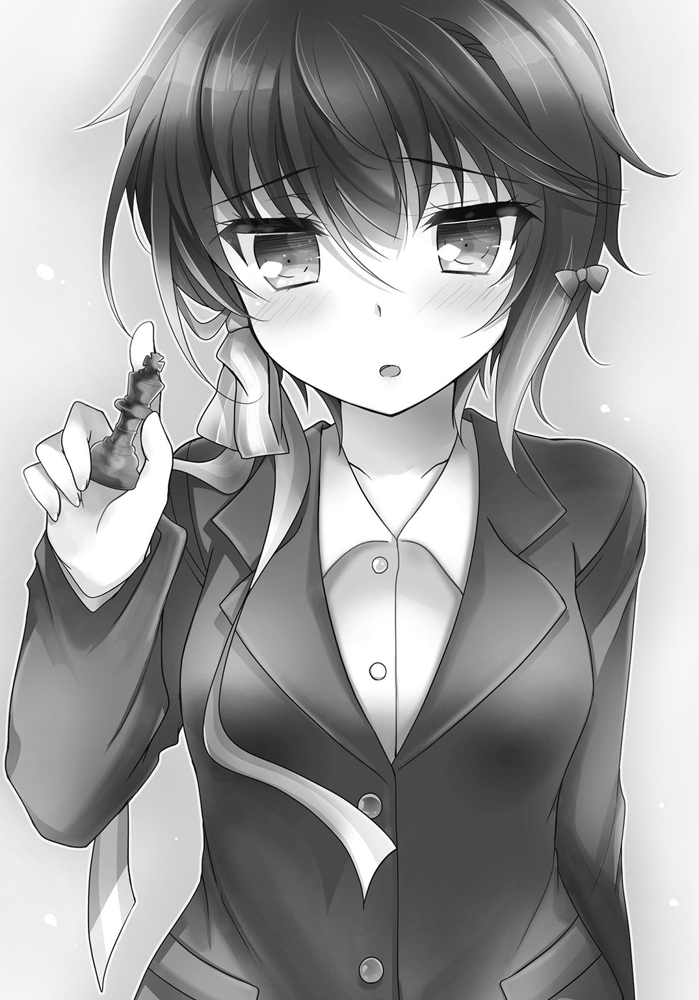

| 隠岐島千景の大いなる野望 高校生たちが銀行を作り、学校を買収するようです。 | |
| 須崎正太郎 | |
この本は縦書きでレイアウトされています。
また、ご覧になる機種により、表示の差が認められることがあります。
 ダッシュエックス文庫DIGITAL
ダッシュエックス文庫DIGITAL
隠岐島千景の大いなる野望
高校生たちが銀行を作り、学校を買収するようです。
須崎正太郎
プロローグ
穏やかな空気が漂う放課後である。出雲光一は、人影もまばらとなった校舎の中を歩いていた。
「参った、参った......」
毛先が乱れたざんばら髪に、鷹のような鋭い眼差し。どこか凜とした雰囲気を漂わせている少年だ。片手で髪の毛をクシャクシャとやりつつ、廊下をずかずか歩いている。
まったくしくじった。明日は土曜日。テンションが上がる金曜日の放課後だというのに、忘れ物なんかしてしまうとは。校門から出てすぐのところで気が付いて良かった。
教室に入る。
オレンジ色に染まった二年Ｇ組の教室は、見慣れたはずの光景なのに、いつもと違った景色に見えた。
――いや。
いつもと違うのは、景色だけではない。
光一は、自分のロッカーがやけに膨れあがっていることに気が付いた。教室の後ろ側に置かれている、カバンや体操着を入れるためのロッカーである。今日は特になにも入れていないはずなのに、なぜだか、もっこりとしていた。
はてなと思い、何気なくロッカーを開く。すると――
ぼてぼてぼてぼてっ！
「どうわぅ!?」
次の瞬間、ロッカーの中から雪崩のようにこぼれ出てきた物体に、光一は押しつぶされてしまった。
「うぷっ......な、なんだこりゃ！」
じたばたともがいて、物体の山から顔を出す。
インクのような香りがした。書店の匂いにどこか似ている。そこで光一は、みずからを覆ったその物体が、大量の新書ということに気が付いた。
本を手に取り、表紙を眺める。
『高校生社長・成功までの百日間 ～二十一世紀は俺に任せろ！～ 著 出雲光一』
「何様なんだよ俺!?」
副題を見た瞬間、思わずツッコんだ。
そして、改めて戦慄――
著者名は自分になっている。だが光一はこんな本、書いた覚えがまったくない。
帯を見ると、会ったこともない経済学者が推薦文を寄せていた。『教えてほしいことがすべて載ってる。これは起業家必読の書だね！』などとほざいているが、教えてほしいのはこっちのほうだ。なんなんだ、この物体は。
顔面を引きつらせてかぶりを振る。まったく状況が分からなかったが――とにかく、この本の山から脱出したい。書籍をかきわけ、立ち上がろうとする光一。
と、そのときであった。
「騒々しいですね、社長」
聞き覚えのある声がした。抑揚のない、極めてクールな少女の声。
光一は知っている。この声の主を光一は、よーくよーく知っている。
声のしたほうへ顔を向けると、そこに立っていたのは小柄な美少女だった。
やけに眠そうなとろんとした目つきは、しかしよく見るとくっきりとした綺麗な二重で、長いまつ毛も美しい。ミルクを溶かし込んだかのような白い肌と、桜の花びらにも似た小さな唇が印象的な、ショートカットの女の子である。
少女はすたすたと光一の前までやってくると中腰になって、可愛い顔を近付けてきた。
「社長。私の代わりに商品のチェックをしてくださっているのですか。そうだとしたら、とても助かりますが」
「......商品？ この本が、か？」
「はい。社長の経験を記した一冊です」
にこりともせず、彼女は答えた。
「出版社から話があったのです。いまをときめく出雲社長に、ぜひ経営者として成功するまでの話を書いてほしい、と。しかし社長はご多忙の様子でしたので、私がゴーストライターになって本を書いておきました。そして今日、献本がこうして届いたのです。ところが」
少女はわずかに眉宇を寄せると、
「私としたことが、本の置き場所をどこにするか考えておりませんでした。なので、ひとまず仮の置場として、社長のロッカーに入れておこうかと――」
「やかましい！」
光一はすっくと立ち上がると、全力で叫んだ。
「おおかた、お前のせいじゃないかと思っていたが......やっぱりそうか！ ゴーストライターだと？ こんなもん本気で出す気か！」
「もちろんです。きっとたくさん売れますよ」
少女は大きくうなずくと、えへんと貧相な胸を張った。
「社長はいまや、全国に名を知られている有名人ですから。出雲光一の名前があるだけで、実売百億部間違いなし」
「地球人口より多く売れるのか、聖書規模のベストセラーだな」
もちろん皮肉である。しかし彼女には通用しない。「売れます売れます、社長の本なら」なんてことを言いながら、鼻息を荒くしヨイショしてくる。
「それに、この本には読者プレゼントまであるのです」
そう言って少女が取り出した、一葉の写真。
バスルームから、全裸の光一が出てくる光景が写っていた。
「読者様の中から抽選で十名様に、社長の全裸生写真をプレゼントして――」
「俺をどういう社長にしたいんだお前は！」
全力でツッコんだ。ツッコみつつ、明らかに盗撮と分かる写真を奪い取り、びりびりびりとそれを破く。
「あっ、社長。なにをしますか」
「なにをしますかはこっちのセリフだ！ こんなもんプレゼントして、いったい誰が得をする!?」
「私ならば貰えると嬉しいです。幸せで涙が止まりません」
「こっちも涙が止まらないよ！ むしろ変な汁まで出るよ！」
「変な汁。病気でしょうか。社長、お体はどうか大切に」
「どの口でそんな発言ができるんだおい」
「ところで社長、生写真のプレゼントは」
「中止だ、中止！ 他にも写真があるならそれも破棄だ」
「だめですか」
「だめに決まってる！」
「むむむ......」
彼女は眠そうな顔つきのまま、小首を可愛らしく何度かかしげた。なにが問題なのか、まったく分かっていないらしい。
はあ......と、光一はため息をついた。
（どうして、こんなことになったんだろう）
始まりはいったいいつからだったか？ 同級生の少女から、敬語を使われ、社長と呼ばれることが当たり前になってしまった自分の高校生活。平凡な高校生だった時代が懐かしい。
隠岐島千景。
それが、彼女の名前だ。
先述の通り、光一のクラスメイトである。
そして――部下でもあった。
ふと、手に取った書籍に目を落とす。
高校生社長。その肩書きは噓ではない。光一は確かに社長である。しかもいまや、全国でも名を知られた若手経営者の一人なのだ。出版社から、本を書いてほしいという依頼が来るのもむべなるかな。
それほどの名声を得ることができたのは、すべて眼前の少女、隠岐島千景のおかげである。それは認める。
（だけど......）
再び、ため息をつく。ついてから、千景の顔を視界に入れる。
寝ぼけ眼のこの部下は、海外育ちのせいだろうか、それとも生来のボケ気質のせいか、毎日のようにヘンテコな騒動を巻き起こしている。
改めて、彼は思った。
（どうして、こんなことになったんだろう......）
その答えについては、考えるまでもない。
彼自身が選んだ道だからだ。光一が、千景と共に会社を作り、経営することを望んだのだ。
だがそれでも。......時おり、考えてしまう。この暴走少女と、どうして一緒に仕事をしているのだろう。なんだって、一緒にいるのだろう、と。
光一は思い出していた。
そう、彼が千景と出会ったのは、いまからおおよそ三か月前のことだった――
第一話 動き始めた時間
春うららかな朝である。アパートのチャイムが鳴ったのでドアを開けると、そこには大きなツボがあった。
高さ一メートル、横幅は両手で抱えるほどもあるだろうか。それはそれは薄汚れたツボである。
「グッ、モーニン！ 光一！」
「............」
ツボの横では、美少女がドヤ顔で佇立していた。
美少女には違いない。サイドテールに結わえた髪に、この上なく整った目鼻立ち。腰が高く足も長く、すらりとしたスタイルを誇っている。白のセーラー服が似合っている、勝気そうな女の子だった。
......なんだ、この状況は？
寝起きの頭で必死になって考える。自分は誰だ？ 出雲光一。私立光京学園高等部の――今日から、二年生。記憶は確かだ。寝ぼけてもいない。
だがそれならば、このうさんくさい状況はいったい？
眼前の少女は、ふっふっふっと得意げに笑うと、かたわらのツボをぽんと叩いて、
「素晴らしい商品を持ってきてあげたわ！ その昔、徳川将軍家が使っていたという由緒あるツボよ。五百万円はするものだけど、特別セールで安くしてあげるわ！ なんと出血大サービス、九割引の五十万円で売ってあげる。どうよ！」
「............」
「............」
そこまで話を聞いて、光一は状況を完全に把握した。
ふっ、と皮肉っぽく笑うと、くるりと回れ右をして、
「すみません、間違えました」
「ちょっとっ！」
自室へ戻りかけた光一の腕を、少女はがっしりと捕まえた。
「なによ、その反応は！ おはようすっごくいいツボだね、さっそく言い値で買ってあげよう、くらい言えないの？」
「どんな朝のあいさつだそれは！ 放せ、ツボ女！ 俺は部屋に戻る！」
「嫌よ、放さない！ アンタがこのツボを買うまでは！ お願い、買って、あたしにはお腹を空かせた貧しい家族が！」
「知ってるよ、何度も会った！ だがいくらなんでもこんなツボ売るほど、切羽詰まっちゃいないだろ!?」
部屋に戻ろうとする光一と、そうはさせまいとする女の子。二人は力を目一杯出し合って争っていたが、やがてくたびれてその場にばたりと座り込んだ。
「はあ、はあ、はあ......」
「ぜえ、ぜえ、ぜえ......」
深呼吸を何度か繰り返し、息を整える二人。
「ヒナ」
光一は彼女の名を呼んだ。
「俺に向かってなにを売ろうとしてんだ、なんだよ徳川のツボって」
「いつ何時でも商売を忘れないのがこのあたし、宍道陽南子よ。知ってるでしょ、あたしの夢は商売人になってお金を稼いで、この国に革命を巻き起こしてやることなんだから!!」
「だからってなんでツボなんだ。どういう革命をするつもりだよ」
「ちょうどここに来る途中、道端に落ちていたもんだから......」
「そんなの拾って友達にセールスとかどういうつもりだ」
「あ、そうそう。いまなら特典もつけてあげるわ」
そう言うと陽南子は、なにやら紙を差し出してきた。流れのままに受け取ると――
メモ紙に『肩たたき券 ヒナがぼこぼこ叩いてあげるね♪』と赤ペンで殴り書きされたものだった。
「肩たたき券よ！」
「父の日の子供か！」
......ああ、朝一番から俺はなにをやっているんだ。光一は呆れ顔になりため息をついた。
と、そのときであった。
「はっはっは......」
男の声が聞こえてきた。声のしたほうへ顔を向けると、陽南子のすぐ背後に、やたらさわやかな顔つきをした美少年が立っている。長い前髪に、美しい切れ長の目。学ラン姿がやけに似合う、芸能人だって務まりそうないわゆるイケメンの男だったが、
「ヒナ、残念だったな！ 君の肩たたき券など、道端に落ちている犬のクソほどの価値もない！ なぜなら君は三次元の存在だからだ！」
尊大な声で、意味不明なセリフを口にした。
「なんですって？ 三次元......」
「二次元の美少女の肩たたきなら、とってもとっても価値があるのだが！ はっはっは、汚く醜い三次元ではな！」
次から次へと、口から残念な発言が飛び出す。
そう、彼はオタクだ。
それも、かなり重度のオタクだった。
漫画やらアニメやらゲームやら、その手の趣味にどっぷりと、肩どころか脳天まで浸かりきっている。そんな趣味をもつだけならいざ知らず、平然と現実世界の女性を見下すような発言をするため、顔立ちはいいのに彼女もいない。
「天馬、お前もなにを言い出すんだ......」
光一は、少年――京羅木天馬を半眼で見つめる。天馬はニヤリと笑うと「分かってる分かってる」などとほざいて、こちらの肩を叩いてきた。
「光一、ツボを買わない理由は分かるぞ。ヒナの肩叩きに興味がないからだな？」
「いや、肩叩きとかそういう問題じゃなく......」
「ああ、みなまで言うな！ そうだ、お前はいままでヒナにたぶらかされていた。悪女の尻に敷かれ、絶望の世界を漂っていた。気の毒にな。だが、今日からはもうそうじゃない」
「誰が悪女よ、誰が」
陽南子がうめくようなツッコミを入れたが、天馬は完全にスルーした。そして持っていたカバンの中から茶封筒を取り出すと、
「ウェルカム・二次元・ワールド！ コーイチ・イズモ・インデペンデンス・デイ！ ......光一、今日からお前が入るべき世界はここだッ！」
そう言って、彼がさらに封筒から取り出した白い紙。どうやら画用紙らしい、その紙に描かれたものは――
『やめてくださいっ！ 借金は必ず返すって言ってるでしょう！』
『げっへっへ、そうは言うがお嬢ちゃん、期限はとっくに過ぎているんだぜ!?』
『そ、それにお金を返さないからってこんな卑猥なことをしていいと思っているの？』
『抵抗しろ、抵抗しろ。そっちのほうがより盛り上がるってもんだぜ、げへへへへえ！』
『いやああああああ、らめえええええ！』
「エロ漫画じゃねえか！」
セーラー服を着た女の子が、チンピラ丸出しの若い男に襲われている。しかも少女の服はビリビリに破られていて、非常に卑猥な絵面であった。
天馬は光一のツッコミにも動じず、腕を組んでから尊大にうなずく。
「その通り、小生が描いたエロ漫画である。鬼畜な金貸しが主人公で、貸出先の娘を襲うという設定だ。ちなみに主役の名前はイズモコーイチ」
「勝手に人の名前を使うな！」
「ちなみにタイトルは『おやめになって！ イズモさん！』といってだな」
「おやめになっては俺のセリフ！」
「怒鳴るな。こいつは夜遅くまでかかって描き上げた作品なんだ。そう頭ごなしに酷評されると小生は悲しい」
「朝っぱらから自分が主役のエロ漫画を見せられた俺は、もっともっと悲しいわ」
「ほう、ならば朝でなければいいのだな？ それでは昼に見せるとしよう。あとで学校裏の竹やぶに来い」
「なんで竹やぶ？」
「エロといえば竹やぶだ。決まっているだろう」
したり顔でうなずきながら言う天馬。なにが決まっているのか分からなかったが、やがて彼は、勝ち誇ったような笑みを陽南子へ向けた。
「まあ、そういうわけだ。光一はもはや現実の女には興味がない。漫画の世界の住民なのだ。ヒナ、あきらめろ。三次元の女など、しょせんはカスだ。カス以下だ」
「こ、光一......。天馬はもともとおかしかったけど、まさかアンタまでエロでオタクな世界に行っちゃうなんて......！」
「はっはっは！ 麗しき二次元の女性たちに、敵う三次元があるものか！ 光一は今日から二次元専門の男なのだ。さらばヒナ。醜い現実の女に用はない！」
「なんて敗北感......！ 屈辱だわ！ 見てなさい、二人とも！ いずれあたしが金持ちになったら、二次元世界を支配下に置いて復讐してやる！ 絶対にしてやるんだからっ!!」
「......お前ら、どうでもいいが俺を完全に無視して盛り上がるなよ」
顔を引きつらせながら、光一は言った。
こういうとき、家庭の事情とはいえ一人暮らしで良かったと思う。家族や同居人がもしいたら、恥ずかしいことこの上なかった。
とにもかくにも、今日は始業式。――光一たちが二年生に進級する日であった。
「そもそも現実の女は汚いのだ。次から次へと恋人をとっかえひっかえ。愛もなにもあったものではない。愛を取り戻せ！ と言いたい」
「愛だのなんだの、ワンクールごとに『俺の嫁』が変わるアンタに言われたくないわよ」
「好きで変わっているわけではない。相手のことを思えばこそ別れを選んでいるのである。このままでは小生も彼女も、お互いに前へは進めないと思うから......」
「なんて言うか、ものは言いようだな」
澄み渡った青空の下、光京学園に向かう通学路を、三人はてくてく歩いていく。
周りは通勤途中の会社員や、光一たちと同じく通学中の学生たちでいっぱいだ。
「って言うか、現実の女が汚いって決めつけるあたりがおかしいわよね。世の中にはずっと純愛を貫くカップルだっているでしょうに」
「少女漫画のようなセリフだな。......と、いうことらしいぞ、光一。ヒナは綺麗な恋愛がお好みらしい。よく覚えておけ」
「？ なんの話だよ？」
「ち、ちょっと！ あたしの恋愛観と光一は関係ないでしょ？ いまのはあくまで一般論として......！」
光一にとって、陽南子と天馬の二人は、一年生のときからつるんでいる親友だった。
『あたしは絶対、商売で成り上がる。そしてこの国に革命を起こしてみせるわ！』――などとほざいては変な商売をやり、そのつど失敗している商売人志望の女子高生、宍道陽南子。
『人間の根源欲求たるエロ作品は、もはや芸術だ！』――なんて戯言を毎日のように言っている漫画家志望（しかもエロ）の残念なイケメンオタク、京羅木天馬。
光一たちは性格もそれぞれ異なり、共通点といえば、学費無用の特待生待遇で光京学園に入学したことくらいなのだが、なぜだか友人としてウマが合い、なんとかうまくやっている。朝のようなやりとりも、別に珍しいものではない。毎日のように、くだらないやりとりを交わしている。そんな関係だった。
やがて、光京学園の校門が見えてきた。
赤レンガの高級感溢れる造りは、さすがに光京市随一のエリート学園である。金持ちの子女が多く通学しているだけはあった。この門を特待生として潜るために、中学時代、どれほど勉強したことか。
「あっ！ クラス分け、もう発表されてるわ！」
陽南子が明るい声をあげた。
彼女の言う通り、校舎前の掲示板には既にクラス分けの紙が貼り出されており、その前には自身の所属クラスを確認する生徒たちで溢れている。
「今度こそ、天馬も一緒になれるといいな」
掲示板前の人だかりをかき分けつつ、光一はぽつりとつぶやいた。かたわらで、天馬が「うむ」と短く答える。一年生のときは光一と陽南子だけクラスメイトで、天馬は別のクラスだったのだ。
「小生だけ別のクラスだったせいで、光一を完全に二次元の世界へいざなえなかった......」
「クラス関係あるのかよ、それ」
「大いにあるとも。休み時間でも授業時間でも漫画やアニメの話題ができるだろう」
「いや、授業時間は勉強しろ......」
光一が顔をしかめたそのとき、陽南子の「あっ」という声が響いた。
「ちょっと、二人とも。バカな会話やってないであれ見てよ！ あたしたち、三人とも同じクラスよ！」
陽南子が声を弾ませる。
確認すると、その通りだった。三人は確かに同じクラス、二年Ｇ組の所属になっている。
「ほんとだ！」
「やったわね！ 二年生も楽しくやれそうじゃない！ ねえ、天馬？」
「うむ！」
天馬は満足げにうなずいた。光一と陽南子も目を合わせてからにっこり笑った。
「こうなると、本当に二年生に進級したって実感がわくな！」
「うん......思い出すわね、期末テストを乗り越えるために三人でめちゃくちゃ勉強した日々......。当時はしんどかったけど、いまとなってはいい思い出だわ」
「三人で俺のアパートに集まって、連日勉強したもんな。特待生が赤点を取るわけにはいかないし......」
光京学園は厳しい学校だ。特待生が一度でも赤点を取ると、その瞬間に学費免除の特権は消える。そんな事態にならないよう、光一たちは必死に勉強したものだ。
これは貧乏人差別よと、陽南子はぶーぶー文句を垂れていたが、しかし勉強が人よりできるから特待生なのだ。勉強が人並み以下ならば、学費無用の待遇が許されるはずもない。その点は当然のことだと光一は思っている。
「ま、いろいろあったけど、無事に進級できたんだ。二年生も頑張ろうぜ！」
「ええ、そうね！ 今年こそ勝負時！ 必ず商売で成功してみせるわ！」
「頑張るってそっちかよ......。勉強で頑張るとは言えないのか？」
「先生みたいなこと言わないでよ、つまんないわねー。......って、あれ、天馬？」
陽南子が怪訝そうな声をあげた。
――見ると、天馬は未だに掲示板を眺めていた。
なにやらうろんげな顔つきをしたまま、腕を組んでいる。
「ちょっと、どうしたのよ、アンタ」
「これを見ろ、二人とも」
そう言って天馬が指し示した場所には『二年Ｇ組の教室は、昨年度までとは異なる場所にあります』と書かれた紙が貼られていた。
そして、その文面の下には手書きの地図が描かれている。その地図によると、Ｇ組の教室は校舎の隅も隅。ふだん、めったに生徒が近寄らないような場所に移ったらしい。
「......変だな」
光一は眉をひそめてつぶやいた。
二年Ａ組からＦ組までのクラスは、昨年度と同じ場所にあるようだ。
それなのに、なぜＧ組だけが違う場所に移転したのだろう？
「Ｇ組だけっていうのが気になるよな」
「うむ。なにやら嫌な予感がするぞ」
光一と天馬は渋面を作ったが、しかしかたわらの陽南子はあまりピンと来ないのか、
「考えすぎでしょ。雨漏りとか窓ガラスが割れたとか虫がやたら湧いたとか......まあなんでもいいけど、きっとなんか理由があったから、昨年度とは教室が違うのよ」
「......それならいいが」
天馬は、まだ納得していないようである。
だが、そんな彼を見て陽南子はケラケラと笑い声をあげた。
「はいはい、また昨年みたいにならないでよね。アンタ、去年は探偵アニメに影響されて、なんでも事件に繫げてたけど」
「い、いや。それとこれとは違うぞ！ つまりその、去年はだな......！」
天馬は微妙に赤面して慌てた。それは彼の黒歴史だったのだ。
去年、名探偵を気取っていたころの天馬は痛々しかった。学校でさえ、シャーロック・ホームズのような探偵帽をかぶり、棒状のポテトスナックをタバコに見立てて口にくわえてはかっこつけていた。
「アンタってば、すぐアニメに影響されるから困ったもんだわ。あのタバコを吸うまね、全然似合ってなかったわよ」
「そ、それをもう言うな！ 武士の情けを知らんのか！ これだから現実の女は嫌いだ！」
陽南子と天馬は、いつの間にか教室のことも忘れて口喧嘩。並んで校舎へと向かいだした。いつもの二人になっている。
光一はそんな陽南子たちの背中と、貼り紙の地図を見比べていたが、
「......ま、いいか」
やがて、二人に追いつこうと歩き出した。
（なにはともあれ）
歩きながら、移転先の教室について考える。
嫌な予感がする、なんてことを天馬は言っていたけれど、
（教室に着いた瞬間、なんだこりゃーってことはないだろ！）
「なんだこりゃああああああぁ!?」
予感はあっさりと的中した。
Ｇ組の教室を開けた瞬間、目に入ったのはやたらにでっかい白キノコである。
教室のド真ん中に、堂々と鎮座ましましている、人間サイズの巨大キノコ。こんなブツがどうして日本に存在するのかと思ったが、よく見るとその周囲、というか教室のあちこちに、これまた手の平サイズながら可愛いキノコが生えている。いつから学校はキノコ園になった。
さらに壁やら床やらには黒いカビがこびりつき、机と椅子はどこかのゴミ捨て場から拾ってきたような、古臭くボロボロで、おまけにちょっと臭うものだった。およそ勉学に励む環境とは程遠い。
「ちょ......なによ、この臭い......!?」
「すごい湿気だな......こ、これが教室か......？」
陽南子と天馬の感想も正しい。教室は薄暗くて、しかも異様にじめじめとしていた。校舎の隅っこにある部屋とはいえ、あんまりである。
そんな教室の中で、今年からクラスメイトになるＧ組の生徒たち数十人は、死にそうな顔でそれぞれ椅子に座っている。
「な、なあ。ここ、Ｇ組の教室だよな？」
近くに座っていた男子生徒に尋ねると、「たぶん......」と弱々しい声が返ってきた。
「僕だって分からないよ。今日からＧ組になったばかりだし」
「そ、そうか。そりゃそうだ」
「掲示板には、Ｇ組はここだって書かれていただろう？ だから来たんだけど」
「うん......。それは俺たちもそうなんだが......」
しかし、それにしたってこのキノコ教室はいったい!?
呆然としていた、そのときだ。
「失礼いたしますわ」
そんなセリフと共に、教室へ入ってきた少女がいる。
気の強そうな、しかしどこか気品を感じる背の高い美少女だった。透けるほど白い肌に、やや吊り目気味の大きな双眸。腰まで伸ばした長い髪も、息を呑むほど美しい。スタイルも見事に引き締まっていて、細くくびれたその腰に、スラリと伸びた白い脚は、モデルと言っても通用しそうなレベルだった。
一言で言えば、深窓の令嬢。そんな表現がピッタリ似合いそうな女の子。
だったのだが、
「ふふ......ふほほほほ！ ほーっほっほ！ ああ、嫌だ嫌だ。誰も彼も貧乏神にとり憑かれたような顔をしていますわね！」
令嬢への幻想は一瞬で打ち砕かれた。
「しかし何度見ても汚いお部屋。ま、無理もないですわね。十年以上使われていなかった物置を、無理やり教室に改装したのですから！」
「か、改装だって......？」
思わず光一が声に出すと、少女はちらりと侮蔑的な視線を向けてきた。
「あなたも、Ｇ組の生徒ですの？」
「あ、ああ。......出雲光一だ」
「いず――覚えにくいですわ。今日から三太夫と改名なさい」
「誰が三太夫だ！」
身を乗り出すようにしてツッコんだ。
「そもそも、あんたはいったい誰だよ！ Ｇ組の生徒なのか？」
「Ｇ組？ ふふっ、ご冗談を！」
少女は長い髪を翻すと、人差し指をピンと立て、こちらに突きつけながら叫んだ。
「二年Ａ組、稲佐浜月夜。今年度から光京学園に転入してきましたわ。皆様、どうぞお見知りおきを。ほっほっほっほ!!」
「稲佐浜？ って......」
「もしかして、あの稲佐浜興業の――」
「そう。わたくしは稲佐浜興業の娘ですわ」
稲佐浜興業は、光京市に本社を置いている大企業だ。
その事業は多岐に渡る。乳児用粉ミルクの開発から葬儀ビジネスまで手がけている、まさに『ゆりかごから墓場まで』を体現しているような会社なのだ。
そして稲佐浜興業は、その利益をせっせと地元の政治家に献金している。光京市からは大臣クラスの政治家が何人も輩出されているが、稲佐浜興業はその全員と太いパイプをもっているともっぱらの噂だ。
要するに、彼女の実家は文句なしの金持ちなのだが。
「その稲佐浜興業の娘が、なぜ光京学園へ転入して来たのだ？」
天馬が尋ねると、「よくぞ聞いてくれました！」と月夜は楽しげに笑った。
「それを語るには、わたくしの半生をここで語らなければなりません。聞きたいですわね？」
「いや、別に......」
「聞・き・た・い・で・す・わ・ね!?」
すごい剣幕でにじり寄ってきた。自分語りが好きな人間はいっぱいいるが、ここまで語りたがるやつも珍しい。光一は半眼になりつつ、
「じゃあ話せよ」
と、続きを促す。
月夜は満足げにうなずくと、
「そう、あれは十年前のこと――」
「そこまでさかのぼって話すのか......」
光一はげんなりした声でうめいたが、月夜は聞いていない。
「――当時六歳だったわたくしに、お父様は言いました。『稲佐浜に敗北はない』『ただ君臨あるのみである』『ゆえに、君臨のなんたるかを学んでこい！』――人の上に立つとはどういうことか？ それを学ぶためにわたくしは、全国の私立学校を回り続けることになったのです。君臨を知るための武者修行とでもいいましょうか」
君臨の前に常識のなんたるかを学ぶべきだと思った。おもにお父様が。
「そしてその度にわたくしは、資本力と能力を背景に常に頂点に立ってきたのです！」
握り拳を作って、演歌歌手のようなポーズをとる月夜。
「あるときは生徒たちの給食を独り占めにし、またあるときは先生の代わりに授業を行ってプライドを粉々にし、またあるときは校長の代わりに朝礼の挨拶をやって全校生徒を眠りの世界に追いやりましたわ！」
しょぼい。
尊大に過去を語る月夜だが、逆に恥部を晒しているようにしか思えない。
「誰もわたくしには逆らえない！ 三か月ごとに転校し、数多の学校で君臨すること四十回。稲佐浜月夜は、教育委員会さえもの言えぬ学校界の女王になったのですわ！」
「気持ち悪いから無視されたんじゃないの？」
光一は顔面を引きつらせながら言った。政治家とも繫がりをもつ稲佐浜興業の娘だからこそ、成しえたことなのだろうが......権力はもう少しマシなことに使え。
「わたくしは全国の学校で頂点に立った！ もう充分、君臨のなんたるかを学びましたわ。お父様もそれを認めた......。なので、二年生への進級を機会に、残りの高校生活は地元の光京市にあるエリート学校、光京学園に君臨することにしたのです！」
「なんだって......」
「わたくしもそろそろ腰を落ち着けて、長期政権を築くことの大切さを学ばねばと思ったのです。だから、この学校にやってきてあげたのですわ！ ......わたくしが学校にやってくるという意味、もうお分かりですわね？」
月夜は不敵にほくそ笑んだ。
そして、高らかに告げたのだ！
「光京学園は、わたくしが支配することに決定致しました！」
おおっ――
教室中がざわつく。空気が震えるのが分かった。
「この学園はすべてわたくしのものですわ！ 感謝なさいまし。そしてまず手始めに、あなたがた特待生――すなわち学費を学園に入れていない貧乏人をひとまとめにし、この小汚い教室へ入れることにしたのです！」
「び、貧乏人って......！」
顔がピクピクうごめいた。
特待生には確かに貧しい人間が多い。光一も陽南子も天馬もそうだ。もっとも稲佐浜月夜から見れば、並の家庭の人間だって貧乏人に属するだろうが。
「そういうわけで、あなたがた特待生は今年度からひとまとめになり、この場所で勉強してもらうことになります。部屋は汚いし、エアコンもないし、担任もいませんし、二回に一回は自習になります。が、そのあたりは適当によろしく」
「めちゃくちゃだ！」
光一は強く月夜を睨みつけると、
「なんでそんなことをするんだ？ 意味が分からないぞ！」
激しい声音でそれを問う。
すると月夜は「ふう......」と息を吐き出すと、長い髪をかきあげて、
「あなたがた貧乏人は差別されること、それ自体に社会的意義があるのです」
また、意味不明なことを言い出した。
「よろしいですか？ この教室、よーくご覧になってくださいまし」
月夜は周囲を見回す。
「このきったなくて、カビが生えて、キノコまで生えて、人間として落ちるところまで落ちぶれはてたようなこの教室――おお！ ここで勉強するなど、なんて哀れな境遇でしょう！ で・す・が！」
大仰なポーズをとりながら彼女は続ける。ミュージカル女優のようだった。
「それこそがまさに大事なところ......。貧しい人が哀れな境遇に落ちているのを見たら、人々はきっと思うでしょう。ああ、こうはなりたくないな、と！ 努力して収入を高めて、少しでも金持ちにならねばならない。貧乏人になることだけは回避せねばならない、と！」
高らかな声で彼女は叫んだ。
「つまり、そういうことです。他の皆さんのやる気を上げるために、あなたがた貧乏人は犠牲になるべきなのです！ 言わば......世界のため！」
「世界ッ!?」
「そう！ わたくしは、世のため人のためを思って貧しい人々を差別しているのですわ！」
「詭弁だ......」
絶対に詭弁だ。どういう理屈だ。
「そうです、ひょっとしたらあなたがたの哀れな境遇を見て他の生徒が奮起し、おのれの収入を高めるために努力を始め、そこから日本経済の復活が始まるのかもしれない......。貧乏人どもよ、光栄に思いなさい。あなたがたは日本復活の犠牲となるのです。でもあなたがたの犠牲は忘れません。お盆になったらお線香にカビ付き団子くらいはお供えしてさしあげます。南無阿弥陀仏、アーメン」
「殺すなよ！ しかもあんたは何教だ!?」
「無宗教ですわ」
「どうでもいいところだけきっちり回答するなよ」
いいかげんツッコミを入れるのもくたびれ果ててきたところだが――しかし内心では、本気で怒りを感じ始めていた。要するにこの女は、屁理屈で人をバカにして、楽しんでいるだけではないか。
とにかく納得できない。
特待生という理由でこんな待遇を強いられるなんて、まったく冗談にもなりゃしない！
「腹が立つわね......」
「うむ。こんな物置に押し込められるなど、不愉快極まりない」
「ヒナ！ 天馬！」
振り返ると、陽南子と天馬が不満顔で腕を組んでいた。
「僕も納得できないぞ！」「あたしも！」「おれもだ！」
クラスメイトたちも、それぞれ立ち上がり声をあげた。
「みんな......！」
光一は感動した。十六年の人生の中で、これほど『団結』の二文字を感じたことはない。
そうだ、俺たちは仲間だ！ 立場も力も弱くて貧しい、けれどみんなの力を合わせれば、きっとなんとか戦える！ 大切なのは友情、努力、そして勝利だ！
稲佐浜月夜に抗議の声をあげるんだ！ 自分たちの、二年Ｇ組の未来のために――
「春休みに作った新商品！ 新しいクラスメイトたちに売りつけようと思ってたのに！」
「......はい？」
突如、陽南子が妙なことを口にした。光一は顔を歪ませる。
彼女はどこからか、小さな袋に入った緑色の粉末を取り出すと、
「公園の雑草を乾燥させて粉末にしたものよ......。最高の香草で、全身にふりかけたらすっごく良いニオイがするから、そりゃもうモテモテになるわよって言って売りまくるつもりだったのに......！ 五十袋も作ったのに！ どうしてくれるの！」
「詐欺じゃないか！ そんなもんクラスメイトに売りつけるつもりだったのか」
「こんなもん、ボンボンの学生を口八丁でだまくらかさない限り売れるわけないじゃない！」
「腐れ外道みたいなこと言ってるぞ、お前......」
「あーもう、計画がめちゃくちゃよ！ クラスメイトならセールスも簡単にできるって思ってたのに！ お金がない特待生だらけのクラスになっちゃうなんて......。こうなったら他のクラスまでわざわざ行かないといけないじゃない......手間がかかるわ......」
「潰れてしまえ、そんな計画は」
光一は嘆息交じりにかぶりを振った。すると、かたわらの天馬も同意するようにうなずいた。
「そうだ、もっとまっとうな理由で腹を立てているのかと思ったら」
「天馬。お前もそう思うか」
「もちろんだ。大義なき怒りはただの傲慢だ！」
彼は偉そうに首肯して――
「こうじめじめして薄暗い教室では漫画のネームも描きにくい。......授業中、前の席の女子生徒、しかもエリート学園の女子のナマ足を見ながらエロ漫画を描くのが小生の至高の楽しみだったのに！」
「............」
どこが大義だ。光一は激しい頭痛を感じた。
さらに教室の級友たちも天馬に続く。
「玉の輿狙いでこの学校に入ったのに、貧乏クラスに入れられても困るのよ！」
「金持ちのクラスメイトから、弁当の残飯を貰うためにこの学校に入ったんだぞ！」
「くそっ、エリートや金持ちが保健の授業でハァハァするところが見たいのに！」
「金持ちとコネを作っておけば、就職にも有利だと思ってこの学校に入ったのよ!?」
「もうやだ、このクラス......」
光一は半泣きになると、なにもかも放り出して異世界あたりに行きたくなった。人間が信じられない。人間が悲しい。
「ほほほほほ！ やはりあなたがたは、この教室にいるのがお似合いのようですわ！」
否定できないのが悔しかった。
「そういうわけであなたがたは今後、このキノコが生えた教室で勉学に励みなさい。わたくしはそれを伝えに来たのです。直々に来てあげたことを感謝なさい！ ほほほほほ！」
「く、くそう......！」
光一は眉間にしわを寄せると、ギリギリと唇を嚙み締めた。
――そのときである。
ガラリ、と教室の引き戸が開き、
「あ、あの......」
登場したのは、牛乳瓶の底みたいな、分厚いメガネをかけた女の子だった。
それも、金髪の。
ポニーテールに束ねられた金色のセミロングが印象的なその容貌。一見すると外国人のようだが、あるいはハーフなのかもしれない。白い喉と、年齢の割には豊満な胸囲が、その推測を裏付けるかのようだった。
その金髪メガネ少女。やけにオドオドした態度で、あたりを見回すと、
「じ、じじじ、Ｇ組の教室は、こ、ここ、ここで......いいんだよ、ね......？」
やたら震えた日本語を発した。いまにも泣きそうな顔である。
「君は？」
一番近くにいたのでほとんど義務のように光一が尋ねると、金髪少女は「ははは、はいっ！」と、発声練習のように甲高い声を出して応じた。
「あ、あああ、あの、日御碕灯......です。その、Ｇ組なんだけど、朝、ちょっと、その、貧血を起こしてしまって。それでいままで保健室に、ず、ずっと、いたんだ、けれど......」
小刻みに震えながら、視線をキョドキョドさせている様子を見ていると、なんだかこちらがいじめているような気分になってくる。
同級生なんだし、気楽にやれよ――と言おうとしたそのとき、
「遅刻ですわね」
光一の背後から冷たい声音が聞こえてきた。またこいつが出てきた。
言うまでもなく、稲佐浜月夜だ。
「日御碕さん？ 始業式から遅れてくるとはいい度胸をしていますわね」
「ご、ごご、ごめんなさい......」
「ごめんで済んだら慰謝料はいらないのですわ」
「すす、すみません、すみません！ あ、わ、わわ、わたし、あまり身体が強くなくて。最近は、だいぶん体調も落ち着いていたんだけど......」
いよいよ半泣きになっている灯を見ると、なんとか守ってやりたくなる。
おい稲佐浜、もう許してやれよ......。
そう言おうとした、その瞬間。――冷酷な声が、教室に響いた。
「停学ね」
「え......」
「遅刻の罪で停学一か月、ってところかしら？」
教室が一瞬ざわつく。だが月夜は怯むことなく、「お黙りなさい！」と一喝した。
「言ったでしょう。この学園はすべてわたくしのもの、と。生徒一人の待遇など、どうしようとわたくしの自由。そういうわけで日御碕灯、あなたは停学ですわ」
「ふえっ......!?」
灯の目から、今度こそ涙が溢れる。叱られるくらいは覚悟していても、まさか停学処分を食らうとは、さすがに予想していなかったのだろう。
そしてそれは、光一も同様だった。
「おい、いい加減にしろよ！」
これまでは、月夜が学園を支配した、などといってもどこかピンと来なかった。金持ちの娘がふざけているだけだと思っていたし、なんだかんだ言っても話せば分かると楽観的に考えていたのだ。
だが、どうやらそうではないらしい。
稲佐浜月夜は本気だ。すべて大真面目なのだ。
光一は鋭い眼光を月夜に向けると、
「教師でもないあんたが、独断で停学かどうかを決めるなんておかしいだろ」
今度は、真剣な声音で抗議した。
「まして体調不良の遅刻で停学なんて、絶対に変だ！」
だが、光一の剣幕にも月夜は怯まない。
「今日からこのわたくしこそが、この学園のルールブックですわ。おかしかろうとそうでなかろうと......すべてはわたくしが決めます。理事長でも校長でもなく、このわたくしが......」
「なんだと......」
「文句があるならいつでもどうぞ。どこからでも、かかってきなさい」
月夜は妖艶に微笑むと、刺すような視線を光一に向けた。かと思うと、人差し指をクイクイと動かし、挑発するような動きを見せる。
「ただし、わたくしに挑むということがどういう結果を自分にもたらすか、ちゃんと考えてから挑んでくることですわね。......それでもいいと言うなら、どこからでもどうぞ。正々堂々、勝負を受けてた、」
ぶすうっ!!
「ハオオオオオオオオオオ――――――ン!!」
突如、弾けるような吼声が轟いた。
「な、な......!?」
光一は仰天したが――状況を把握してより仰天した。
と言うか、目を疑った。
「さっきからほんと何様よこの糞ブルジョワっ！ ええっ!?」
陽南子が！
月夜に!!
カンチョーをしかけていた。
「オラァ、思い知ったか！ 思い知ったら泣いて謝れ、この資本主義の豚が！」
「ハッ！ ハヒッ！ ハオッ！ ハオオオオーッ!!」
陽南子がグイグイと月夜を責め立てる景色は、もはや地獄絵図。正視に耐えない。
「ちょ、ちょっと、あなた、女性としてそういう戦い方は――」
「どこからでもかかってこいって言ったのはアンタでしょうが！」
「言いましたわ！ けれどこんなやり方はいくらなんでも！」
「るっさい女ね！ この指、今度はアンタの口にツッコむわよ!?」
「ああっ、やめて！ それはやめて！ 人としておやめくださいまし！」
「やめろと言われたらもっと酷いことしたくなるのが人情よねえ!? ええっ!?」
陽南子の声が楽しげなのは、きっと気のせいだと思いたかった。
「ようし、いいぞヒナ、よくやった！」
おぞましいことに、天馬も嬉しそうな声だった。
「天馬、アンタも手伝いなさい！ 次は電気アンマをしかけるわ！」
「合点！」
「合点、じゃないですわ......！」
「うるさい、この腐れ金持ちが！ おとなしくしなさい！ 貧乏人を怒らせるとどうなるか、その身にたっぷりと教えこんであげるわ！ せいやああああ!!」
「ハオッ！ ハオオオオオオオオオオ―――――!!」
咆哮と共に狂乱の祭りが開かれる。見たくない。あれは現実の出来事ではない。光一は三人から目をそらすと、灯にそっと近寄ってからハンカチを差し出す。
「大丈夫か？」
「え、あ。う、うう、うん。......えっと」
「出雲。出雲光一だ」
「い、出雲くん。ありがとう。で、でも、その。これ。......放っておいて、いいの......？」
灯はハンカチで目元を拭きながら、陽南子たちを困り顔で見つめている。
光一もまた眉をひそめ、
「良くはないな......。だけど」
ちらりと、その現場を見やる。
「アンタみたいな金持ちに！ 牛丼に入ってる肉のキレの枚数で弟とケンカする貧乏人の気持ちが分かるか！ 友達の家のカルピスの、そのとんでもない甘さにびびる気持ちが分かってたまるか！ 欲しいものを買うときに、まず百均に似たようなものがあるかどうか！ 確かめてから買い物をするあたしの気持ちが！ アンタなんかに、分かって、た・ま・る・か・あああああ―――――!!」
「あひっ！ あふん！ ひゅ！ ヴェッ！ やめ、やめて......ヴィイイイイィーッ!!」
「いいぞ、ヒナ！ もっとだ！ もっとこう稲佐浜をアヘらせる感じで電気アンマを！」
「......止められると思う？」
「............あう」
（やれやれ......）
光一は内心でうめきつつ、かぶりを振った。
――しかし、本当にこの学校はどうなるんだ？
そして、自分たちの運命は......。
心配するまでもなく。
『自分たちの運命』とやらは、ごくあっさりと。――そう、月夜とのケンカからわずか一時間後には、先行きが分かってしまった。
すなわち、光一たち四人は、停学処分を食らったのである。
「......失礼しました」
それだけ言って、職員室を出る光一。
それに付き従う陽南子、灯、天馬の三人。
誰もが一様に暗い顔をしている。無理もなかった。
ケンカからの流れは速かった。騒ぎを聞きつけ、Ｇ組の教室に教師がやってきたのだが、その教師によって、事件に関わったメンバー、すなわち光一たち四人は職員室へと連行された。
そして、すぐさま校長が処分を下したのだ。
稲佐浜月夜は無罪。
光一たち四人は、ケンカをした罪で停学一年の処分が下された。
一年もの停学、それは事実上の退学処分といって良い。進級がまず不可能になるし、さらに特待生待遇も消滅する。やめろ、と言われているに等しかった。
もちろん光一たちは、灯の体調不良の件や、教室の劣悪すぎる環境、稲佐浜月夜の傲慢な態度についてしっかりと主張した。絶対に理不尽だ、と。
だが、その反論が聞き入れられることはなかった。
本当に、月夜がこの学園を支配していることが分かってしまった。
「............」
光一たちは無言で歩く。それから、誰が言い出したわけでもないが、ひとまずＧ組の教室に戻った。
すると、そこにはＧ組の生徒たちはもちろん、月夜もいた。
腕組みをしたまま、ニタリと口角を上げるその態度。
唯我独尊を隠そうともしない仕草である。
「かっこつけるからですわ」
したり顔の彼女に、光一たちはなにも言えない。さすがの陽南子も、悔しそうに唇を嚙みしめるだけだ。
月夜はくすくす笑うと、
「ケンカは相手をよく見て売ることです。わたくしとあなたたちでは身分が違う。身分違いの相手にケンカを売るなど、世が世なら打ち首ですわよ？」
「............」
「ふん。反省なさい。自分たちの罪の大きさを！」
「稲佐浜......！」
「ほっほっほ。ほーっほっほっほ！」
月夜は高飛車な笑声をあげると、引き戸を開けて、教室をあとにしたのである。
「............」
沈黙。
光一たちはもちろん、Ｇ組の生徒たちも、誰も口を開かない。
自分たちが停学処分になったことを、月夜に聞かされたに違いない。先ほどは月夜と戦おうとしていた級友たちは、その意気を完全に消沈させていた。空気はほとんどお通夜である。
やがて、陽南子が大声をあげた。
「ねえみんな、悔しくないの？ あんな女の言いなりになって！」
それは極めて真剣な声音だった。
だが、彼女の声に呼応する者はいない。
誰もが、月夜を恐れているのが分かった。
――文句を言ったら終わりだし......。
――やっぱり、金持ちには勝てないよな。
――逆らわなきゃ、とりあえず無事には生きていける。
――賢く生きるってこういうことだろ？
ひそひそ声があちこちから聞こえる。暗い声を聞いていると、いよいよ自分たちの未来が閉ざされたという実感がわく。
（......ちくしょう）
光一は、仲間たちを促して教室を出た。
それしかできなかった。
夕方になった。
光一は一人、街を歩いている。
あれから四人は学校を出て、ほどなく解散した。
誰も、どこかへ行こうだなんて言わなかった。ひとまず、なにかあったときは連絡するという理由で、日御碕灯と連絡先だけは交換しておいたが。
――ごめんなさい、ごめんなさい。わたしのせいで、わたしのせいで......！
泣きながら謝る灯を見ていると、心が痛んだ。日御碕さんのせいじゃない、悪いのは稲佐浜だ、と光一が言うと、陽南子も天馬も強く同意した。
あのとき、理不尽な停学処分を食らった灯を放っておくことなど、光一にはできなかった。
それは陽南子も天馬も同様なのだ。だからこそ、彼女らは月夜に牙を剝いた。
（だけど、その結果がこれか......）
頭を垂らしたまま、ただ道を歩く。人口百五十万の地方都市、光京市。その中央にある大通りだ。
すれ違う人々や、車道を行き交う自動車の存在が、少しだけありがたかった。いまは賑やかなところにいたかったのだ。静かなところに行ったら、いっそう気持ちが落ち込みそうだった。
当てもなく、光一は歩いた。
歩いて、歩いて――
気が付いたとき、彼はテナントビルの前にいた。
地上四十階建て、二百メートル近い高さを誇るその巨大ビルの前に光一がやってきたのは、完全に偶然だった。
しかし光一は、偶然ではないなにかを感じた。感じざるをえない。
なぜなら、
（もし父さんが生きていたら、こんなことにはならなかったのかなあ）
このビルはかつて、光一の父が経営していた企業連合体、『出雲グループ』の本社ビルであったから。
出雲グループ、それはかつて日本に存在した、時価総額五十兆円とも言われる巨大な企業グループだ。稲佐浜興業よりもずっと大きな存在で、光一はそこの御曹司だったのだ。
いまから十数年前のことだ。光一の父、出雲龍一郎はもともと銀行員だったが、その経歴から培われた能力と人脈を活かして投資を繰り返し、多大な財産を築き上げた。
それは既に、一生どころか十生は遊んで暮らせるほどの大金だったが、彼は財産を築くだけで満足せず、なんとその財産を使って銀行を開業したのである。
龍一郎が作ったのは、ネット銀行であった。
卓見だったと言える。ちょうどインターネットが普及し始めていた時代であり、そんな折に登場したネット銀行はおおいに繁盛した。龍一郎は銀行業を成功させた。そして彼は、そこからさらにさまざまな企業を買収し、または事業を立ち上げ、数年で日本有数の企業グループを作り上げるに至ったのである。
だが、このテナントビル。いまは別の会社のものになっている。
龍一郎は十年前、妻――つまり光一の母親と共に事故で死んでしまったのだ。
創業者がいなくなったことで、出雲グループは求心力を失った。グループに属していた企業は倒産し、または独立し、あるいは買収され、ついに出雲グループは消滅してしまった。
一人残された光一は、遠い親戚に引き取られた。
だがその親戚は、決して好人物ではなかった。光一に遺された財産を、あれやこれやと理由をつけて、奪い取ってしまったのである。
そんな親戚といつまでも一緒にはいられない。光一は高校進学と共に独立して一人暮らしを始め、アルバイトで生活を成立させつつ、光京学園で特待生として学んでいたのだ。
だがその立場も、今日、終わりを告げてしまった。
大学に行くためコツコツと貯金もしていたのだが、高校を退学になってはなんの意味もない。
「はあ......」
ため息しか出なかった。お先真っ暗とはこのことだ。
「......ん？」
そのとき、光一は気が付いた。
テナントビルの入口で、巨大なトランクを引きずった、ショートカットの少女が一人。警備員らしい老人ともめている。
「ですから私は、出雲龍一郎社長とお会いしたいのです。取り次いでください」
「出雲龍一郎......って、出雲グループの社長だっけ？ あのね、このビルはもう別の会社のものになったよ。出雲グループはもうないんだ」
「そんな......そんなことはないはずです。そんなことは......」
「そう言われても......困ったね」
警備員は、実際、困り顔だった。それはそうだろう。出雲グループは本当に消滅しているのだから。
（だけど、あの子......。出雲グループにいまさらなんの用だ？）
興味をもった光一は、ゆっくりと近付いていく。
変わった雰囲気の少女だった。全体的に幼さを残した目鼻立ちだが、可愛い女の子ということは間違いない。
寝ぼけ眼というやつだろうか、なんだかとろんとした目付きをしていることが、特徴と言えば特徴だ。それに、まだ光一と変わらない、恐らく十代後半と思われる年齢なのに、真新しいスーツに身を包んでいる。まるで社会人のようだった。
「とにかく、いまのここは出雲グループじゃないんだよ」
人の良さそうな警備員は、やんわりとした口調で言った。
「悪いけどね。うん」
「......そうですか」
少女はしょぼんと肩を落とすと、短い髪をかすかに揺らして、ゆっくりと後ろへ振り返った。
すると――
「あ」
「......」
目が合った。
近くで見ると、やはり双眸の大きな美少女だ。
それなのに、なぜだか芯が一本通ったような、そんな空気ももっている。
「............」
少女は、表情も変えずこちらを見ている。
吸い込まれそうな、綺麗な瞳だ。
「............。や、やあ」
どこか気圧されるような心持ちを感じつつ、光一は気さくに手を挙げた。なんとなく、そうせざるを得ない空気だった。
「どうも、はじめまして」
少女は抑揚のない口調であいさつをすると、ぺこりと頭を下げる。
「私になにかご用でしょうか」
「いや、ご用ってわけでもないけど......」
どこか会話のテンポがずれた少女だ。声をかけたのは失敗だったかと、ふと後悔したが、もう遅い。
意を決して、話の口火を切る。
「その。......君は、出雲グループの関係者なのか？」
「！」
少女は、大きな寝ぼけ眼をぱちくりぱちくり。何度か激しくまばたきさせると、こくこくとうなずき、
「はい、もちろんです。関係者です！ 私は出雲グループの社員なのです！」
「し、社員......？」
十年前に消え去った企業連合体に、社員がいるはずがない。眉をひそめた光一だったが、そのときだ。自分に向かってなにかが突き出された。
紙だ。少女が小さな紙を差し出しているのだ。
「申し遅れました」
「は......」
「私、こういう者です」
それが名刺だということに気付くには、十秒ほどの時間を要した。
【出雲グループ 隠岐島 千景】
「......おきのしま、ちかげ、さん？」
「はい。隠岐島千景と申します」
「あ......そ、そう......」
名刺を受け取りながら、光一は怪訝顔になった。
そこに書かれた出雲グループの住所は、確かにいま眼前にあるテナントビルの場所になっている。また、名刺の最初に描かれてある出雲グループのロゴマークも本物だった。
（じゃあ、この子は本当に出雲グループの社員......？）
まさかと思った。そもそも名刺など、偽造しようと思えばいくらでもできるではないか。
だが、いまさら名刺を偽造してまで出雲グループの社員を名乗る意味がない。本当になんなんだろう、この子は――
などと考えていた、そのときだ。
「じーっ」
女の子――隠岐島千景は、なにかを期待する眼差しで、光一のことを見つめ始めた。
「じーっ」
「............」
「じーっ」
「............」
「じーっ」
「......あのさ」
もしかして、と思った光一は口を開いた。
「悪いけど。持ってないから、名刺」
「！」
「名刺交換できない」
その事実を告げると彼女は、表情こそ沈着を保ったままだが、しかし明らかに『落ち込みました』というオーラを発しながら、
「がっくり」
肩を落とした。
「名刺交換」
ぽつりと告げる。
「初めてだったのに。思い出に残る初体験にしたかったのに」
「......そういう言い方はよせ」
顔を引きつらせながら光一は言った。マイペースなのかなんなのか。抑揚のない声に、かえって調子を乱される。
「......あのさ」
光一は気を取り直すと、改めて隠岐島千景を見据えた。
「さっき警備員の人も言っていたけど、出雲グループはもうないんだよ」
「............」
「グループ総帥の、と――出雲龍一郎が、交通事故で死んだんだ」
自分の父親だ、とは言わなかった。彼女の正体が不明である以上、なにもかもしゃべるのは不用心だと思ったからだが、
「社長が!?」
光一の言葉を聞いて、隠岐島千景は、初めて愕然とした表情を見せた。
「知らなかったのか？」
「......はい」
彼女は表情を曇らせてうなずく。
「社長がお亡くなりになっているなんて......考えもしませんでした」
「............」
「私は十年前、六歳のころからずっと海外にいたのです。出雲社長から命令を受けて、いろんな国で英才教育を受けていて......。勉強だけに集中していました。先日、やっとそのカリキュラムを終えたので、日本に帰国したのですが。......まさか、社長が。そんな......」
――十年間。海外で英才教育。
その事実を聞いて、軽い戦慄を覚える。なんて長い時間だろう。
この少女は、それほど長い時間を外国で学び続けていたのか。すごい話だ。しかもそうするように命令したのは亡き父、龍一郎だと言う。しかし、なぜ父はそんなことを......？
その回答は、すぐに彼女自身の口から出た。
「......すべては若社長のためだったのに」
「え？」
彼女がぽつりと告げたその一言が、光一の耳に突き刺さった。
「......若社長のため。未来の社長、出雲光一様のために学んでいたのに。こんなことになってしまうなんて......」
「出雲光一様のために？ 海外で......？」
彼女のセリフは、ほとんど独りごちるようなものだったが、その言葉を何気なく反すうしたそのとき――
（俺のために？）
全身が総毛立つのを感じた。頭のどこかで、なにかが激しくざわつきだす。
どこかで聞いた話だと思った。はるかな昔の記憶が、少しずつ呼び覚まされていく。
それは十年前の遠い思い出。とっくに忘れていたはずの過去が、光一の中に蘇りつつあったのだ。
「......千景......」
ぽつりと、その名を口に出す。すると、懐かしい響きが確かにあった。
自分は彼女を呼んだことがある。千景、千景、と。......そうだ、それは父が亡くなる直前のことで――
（......隠岐島千景！）
光一はいま、はっきりと思い出した。
彼女には見覚えがある。十年前の面影がどこかに残っている。短い間だが、一緒に過ごした女の子。
頭の中で、父の声が轟き始めた――
『出雲グループは、いつかお前が継ぐことになる』
威厳を伴った低い声。光一はこの声が大好きだった。
『だがな、経営者とは苦しいものだ。出雲グループのような、巨大な企業グループであればなおさらだ。それは分かるだろう？』
当時六歳の光一はうなずいた。父は息子の反応に対して満足げに微笑むと、
『となれば当然、経営者をサポートする役目の人物がいる。そう、部下だ。それも極めて優秀で、かつ信頼のおける部下が必要になる。そこで父さんは考えた。将来、光一の部下になるべき人物を、幼いうちから育てておけばいいと。そうすれば、グループを継いだその瞬間から、腹心が光一の側にいることになる――』
――そうだ。
彼女は、父が、自分のために育てようとした少女。
出雲光一の腹心となるべく育てられた部下なのだ。
それが――
「......千景」
今度ははっきりと、その名を口に出していた。
すると彼女も、応じるように口を開く。
「......若、社長？」
千景はなにかに気が付いたように、寝ぼけ眼をせいいっぱい見開くと、
「若社長、なのですか？」
かすかに震えたその声で、確かめるように問うてきた。
光一はわずかに戸惑いつつも、しかし大きくうなずいて、
「ああ。......俺、出雲光一だよ」
肯定してから、口元に確かな微笑を浮かべた。
「若......若社長......！」
「......十年ぶり......だよな？」
「若社長！ 若社長......!!」
千景はうわずった声で若社長、若社長と何度も連呼すると、
「会いたかった！」
万感の思いを込めるように、両手でぎゅっと。光一の右手をつかんだのである。
小さいが、温もりのある手の平だった。
「会いたかったです、若社長。私はあなたの力になるために日本へ戻ってきたのです！」
「あ......ああ......」
「......嬉しいです」
千景は、かすかにはにかんだ表情を見せた。
「......日本に戻ってきて、出雲グループはなくなっていて......だけど、その日のうちに若社長と再会できるなんて......！」
「......千景」
寝ぼけ眼のまま、微笑を浮かべる千景を見て、光一もまたゆっくりと微笑んだ。
「久しぶりだな、本当に......」
「はい......！」
十年前、小学校に上がる直前くらいの時期だったと、光一は記憶している。
「何度か一緒に遊んだんだよな。懐かしいぜ」
「はい。お懐かしいです......」
「ははっ。ゲームとかしたんだっけ？ なにをやっても俺が負けてた記憶があるけど」
光一は明るい声で笑った。それは本当に懐旧の記憶だ。父が亡くなる前のことを、思い出すのは久々だった。昔のことを考えると、嫌でも死んだ両親の顔がちらつく。だから光一は、努めて過去を思わないようにしていたのだ。なるべく、忘れようと努力していたのだ。
それにしても、千景と再び会おうとは。しかも彼女は、自分のために十年も勉強を続けていたのだ。
それを考えると光一は、
「......ごめん」
「はい？」
突然謝罪され、千景は怪訝顔を見せる。
「いや、謝らないといけない。......だってそうだろう？ 千景は俺のため、出雲グループのために十年も海外で勉強してきてくれたのに、その出雲グループはもうないんだ」
「............」
「千景の能力を、活かす場所がない」
心から、光一は謝った。自分のせいではないのだろうが、それでも謝らなければいけないと思った。
「......若社長」
「それに、正直に言うと......」
光一は嘆息交じりに語った。
「いま、千景のことまで考えられない。俺自身、大変なことになっていて......」
「大変、と言いますと？」
「............通っている学校を、退学させられようとしているんだ」
光一は自分の身に起こった出来事をなにもかも話した。光京学園が月夜に支配されてしまったこと、そしてそれに逆らったがために、退学同然の処分を食らってしまったこと――すべてを包み隠さず千景に話したのだ。
話してどうなるものでもないと、話の途中で気付いてはいた。十年ぶりに再会した女の子に、話すようなことでもない。それでも光一の口は止まらなかった。誰かに話を聞いてほしかったのかもしれない。
――やがて、話は終わった。
「......退学」
千景は神妙な声で、その単語をつぶやいた。
光一は重々しくうなずき、
「......自分でも、どうしたらいいのか分からないんだ」
「若社長が退学。その、稲佐浜月夜、という女性のせいで......」
千景は寝ぼけ眼の仏頂面で、なにやらじっと考え込んでいた。
が、やがて。
顔を上げ、決意を湛えた表情で告げた。
「ひとつ、良い方法があります」
「良い方法？」
「はい」
千景はこくりとうなずくと、寝ぼけ眼の仏頂面を保ったまま――
きりっ！ 引き締まった表情をすると、真面目極まる声音で言った。
「稲佐浜月夜を暗殺しましょう！」
「するな！」
〇．五秒でツッコんだ。いきなりなにを言い出すんだ、この子は。
しかし彼女は、光一のツッコミをものともせず、抑揚のない声で続ける。
「若社長、どうかご心配なく。証拠が残らないように、跡形もなくこっぱみじんにしてみせますので」
「なおのことするな！」
「こんなこともあろうかと、爆弾の作り方は学んでいます」
「どんなことを予想していた!? 忘れろ、忘れなさい、そんな知識は！」
「シンプルな爆弾の作り方だけです。まずはピクリン酸を用意してですね」
「解説しなくていいから！ 忘れろ！ その知識はデリート！ ごみ箱行き！」
「だめですか」
「だめに決まってる！」
「むむむ......」
千景は可愛らしく小首をかしげた。なにが問題なのか、本当に分かっているのだろうか。
彼女はこんな子だっただろうか？ なにぶん十年前に数回会っただけなので、細かい人格までは本当に忘れている。が、爆弾の作り方についてレクチャーするような女の子では、間違いなくなかった。十年間の海外留学は、得てはいけないなにかを、彼女に得させてしまったのではないか。
「しかし、稲佐浜月夜は許しがたいです」
千景はクールなままの表情で、ふんふんと鼻息を荒くしている。
「若社長は、この国の王にさえなれるお方だというのに」
「また妙なことを言い出す......」
「私は本気です。若社長は王様です。帝王です。覇王です。キングです！」
びしっ！ 言いながら、彼女はどこからかチェスのキングの駒を取り出し、光一に向かって突きつけてきた。意味が分からない。
「世界史七大偉人」
千景はぽつりとつぶやいた。
「アレクサンダー、ユリウス・カエサル、秦の始皇帝、チンギス・ハーン、ジョージ・ワシントン、ナポレオン・ボナパルト――」
「............」
「そして出雲光一！」
「なんでだ」
なにやら頭が痛くなってくる。光一はピクピクとこめかみをひくつかせつつ、部下に向かって丁寧に、言い聞かせるように口を開いた。
「と、とにかく殺人はだめだ。犯罪系はなしだ。いいか！」
「若社長のご命令とあれば」
「ああ、命令だ」
「分かりました。爆殺はなしで」
千景はこくこくうなずいた。仕草だけ見ると、本当に可愛い女の子なのに。
「しかし若社長。若社長は、退学したくないのですね？」
「そりゃ、もちろん」
「ふむ。となると......」
千景は巨大なトランクを開くと、中からノートパソコンを取り出し、なにやら忙しく操作を始めた。
「私立光京学園。理事長は尼子茂、三十八歳。父が始めた学園の運営を継いだ二代目で......なるほどなるほど」
どうやら、光京学園について調べているらしい。
が、数分と経たずに彼女は「分かりました」と独りごち、きっとした目で光一を見つめた。
「若社長」
「うん」
「退学を阻止する方法があります」
「マジか!?」
「マジです。大マジです」
千景は大きくうなずくと、次の瞬間、
「学校法人光京学園を買収します」
とんでもないことを言い放った。
「......なんだと？」
買収？ って......。
買うの？ 学校を？
想像もしていなかった『買収』という単語の登場に、光一はあんぐりと口を開けた。
「調べたところ、その稲佐浜月夜はあくまで父親の資本力を背景にして、学校内に影響力をもっているだけのようです。ならば、いくら学校を支配しているなどといったところで、それはごっこ遊びも同然。ならば......我々は本当に、学校を買ってしまえばいいのです」
「......学校を、買う......」
「買ってしまえばこちらのもの。学園は若社長のものになるのですから、あとは稲佐浜月夜を追い出して、退学処分を取り消せばいいのです」
「だ、だけど、できるのか？ そんなことが」
「もちろんです。学校法人が売買された前例はたくさんあります」
「お金だって、めちゃくちゃかかるだろ？」
「なに、稼げばいいのです」
千景はこともなげに言った。
「稼げばって、その稼ぐのが一番大変なんじゃ......」
「大丈夫です、若社長。私はそのために世界で学んできたのです。お任せください。学校を買収する資金を、それはもうばっちり、稼いでさしあげましょう」
「............」
あまりにさらりと言うものだから、光一はただ啞然として千景の言うことを聞いているだけなのだが――
「......稼ぐって、どうやるんだ？」
尋ねると、千景はこくりとうなずいた。
「いろいろありますが、買収をしかけるほど効率よくお金を稼げる手段といえば、やはり」
彼女の眼がきらりと光った。
「銀行でしょう」
「銀行......!?」
「はい、銀行」
千景はぐっと握りこぶしを作り、高らかに宣言した。
「思えば出雲社長が最初に作り上げた企業、それも銀行でした」
それは光一も知っている。出雲龍一郎が作り上げたネット銀行。光一は当時のことをあまり覚えてはいないのだが、父の銀行はあっという間に日本中に広がって、多大な利益を生み出したと聞く。
「歴史は繰り返す。若社長！ お父上のあとをお継ぎください。銀行を我々の手で作り上げ、光京学園を買いましょう！」
「え、あ、え、ええっと――」
次々とまくしたてる千景だったが、光一の頭脳はパンク寸前だった。
無理もない。今日はいろんなことがありすぎた。
二年生への進級、稲佐浜月夜との対立、停学（事実上の退学）処分、千景との再会、そして学園買収と銀行設立の提案。
なにもかもが急だった。生い立ちこそ普通ではないが、それでもここ十年、まず平凡といっていい生活を送ってきた光一にとって、すべてが非日常であり、常識外れのイベントだらけだったのだ。
だが、それでも――退学を阻止したい。
月夜も許せない。
光一の中で、目的と感情の螺旋が渦を巻く。
なによりも、千景の真剣な顔を見ていると。
「............じゃあ、やろう...か......？」
非常に曖昧な声音ではあるけれど。
しかし光一は確かに言った。千景の提案に乗ったのだ。
ぱっと、千景の顔が明るくなる。
「さすがです、若社長！」
寝ぼけ眼のまま、彼女はこくこくうなずいた。
「では参りましょう、若社長。――いえ、社長！」
キラキラと輝くその双眸は、光と希望に満ち溢れていた。
「銀行を作り、光京学園を買収するのです！」
「お......おうっ！」
千景の声に、応じる光一。
どちらが社長か分かったものではなかったが、ひとまず光一は流れのままに、大きな声を張り上げたのだ。
――こうして光一たちは銀行を作り、光京学園を買収することになった。
自分たちに下された、事実上の退学処分を取り消すために！
第二話 コスモバンク設立
すがすがしい朝の光を感じる。まぶしくも心地良い陽光を浴びながら、光一はゆっくりと目を覚ました。
......いま、何時だ？
枕元に置かれてあるはずの時計を探す。どこだ。どこだ。......あった。
時刻を確認すると、午前八時半だった。
「......八時半ん!?」
遅刻じゃねえか！
なんでこんな時間まで寝ているんだ、目覚ましはどうして鳴らなかったんだ――おのれと目覚ましを呪いつつ、上半身を慌てて起こし跳ね上がる。
が、その勢いで光一は――
ガツン！ 天井からぶら下がっている照明に頭をぶつけてしまった。
「おわっ!!」
身体のバランスを崩し、ばったーん、と、床に両手両膝を突く光一だったが、
「きゃっ!?」
......きゃあ？
短い女の叫びが響く。
しかも、光一の下から。
「............」
「............」
床に敷かれた布団の上で、千景が横になっていた。
大きな瞳を見開いて、こちらの顔を凝視している。
そうだ。......寝ぼけて失念していた。
自分はいま、停学中の身。学校に行く必要はない。だから、目覚ましをセットしていなかったのだ。
そして――
千景は昨夜、光一の部屋に泊まった。彼女は行くところがなく、手持ちのお金もほとんどないと言うので、仕方なくアパートに泊めたのだった。もちろん、布団は別々だったが。
しかし、この状況はまずい。
二人は折り重なるような姿勢であった。千景は下で仰向けに、光一は上でよつんばいに。
完全に密着していないところがかえって危うい。はたから見れば、光一が彼女を押し倒したようにも見える。
「......あ、いや。これは、その」
「............」
二人はしばし目を合わせていた。一秒、二秒、三秒が経過――
やがて千景は頰を赤らめ、光一からさっと目をそらした。
「いけません、社長。こんなところ、オフィスの誰かに見られたら......！」
「どこでそんなセリフを覚えたよ!?」
全力でツッコミを入れる。
「だめですか」
「だめに決まってる！」
はあはあと息を荒げながら、ゆっくりとかぶりを振る光一。千景は「むむむ......」などとうなったが、うなりたいのはこちらのほうだ。
それにしても朝一番からこのザマだ。昨日も慌しい朝だったが、今日もいきなりばたばたしている。
疲れる一日になりそうだ。などと考えていたそのとき、
「......なにを、やってんの......？」
魂まで凍てつくような、冷たい声が部屋に響いた。玄関から轟いた、聞き覚えのあるその声のほうへ顔を向ける。

陽南子が、表情を硬直させて立っていた。
「ひ、ヒナ......!?」
「アンタがアパートに来いって言うから......来たっていうのに......」
そう、彼女にアパートに来るように伝えたのは光一だった。
昨晩、千景と話し合ったのだ。銀行を作って学校を買う。それはいい。しかし、やはり仕事をやるには二人だけでは人手が足りない。そこで光一は陽南子、灯、天馬の三人を仲間に加えることを考え、『話があるから明日の朝、アパートに来てくれ。詳しいことはそこで話す』という文面のメールを、それぞれ送っておいたのだ。
もっとも、朝集まってくれ、とだけ言っておいて時間帯を詳しく書いていなかったため、こんな事態になってしまったのだが。
ぴくぴくと、陽南子は顔を引きつらせている。その視線の先には、光一の下敷きになっている千景がいた。
「......はじめまして。そしておはようございます」
横になったまま、千景はぽつりと挨拶した。
「..................オハヨウ」
陽南子は怒りをこらえるように、言葉を返した。
間にいる光一はただごとではなかった。顔面に汗が湧くのが分かる。これはとてつもなくまずい事態だ。男としての遺伝子が、光一に向かって告げている。これは修羅場だ、と。
なんとか、弁明しようと試みる。
「ヒナ。これは......違うぞ」
「なにがよ」
「つまり......お前が想像しているようなことは、なにもないんだ」
「想像？」
こめかみに青筋を立てながら陽南子は、怒り笑いとでも表現するべき顔をして、
「あたしがどんな想像しているというの？ ハッ！ あたしがどんな想像を？ 言ってみなさいよ、ほら！」
「ど、どんなって――」
思わず言葉に詰まったが、陽南子のあまりの剣幕に、逆に腹が立ってきた。なぜ、ここまで言われなければいけないのだろう？
光一はがばっと立ち上がると、
「だいたいお前、いくら俺が呼んだからって、なんで人の家に無断で入ってくるんだよ！」
「チャイム鳴らそうとしたら、いきなり中からばったーん！ って音がしたからよ！ なにかあったのかと思って慌てて入ってきたんじゃない！ 転んで怪我でもしたのかと思ってさ！」
「だ、だけど、鍵がかかっていただろ!?」
「合鍵を使ったのよ！」
「あ、合鍵？」
「植木鉢の下にあるやつよ！」
外に置いてある植木鉢の下には、確かに合鍵が入っている。そのことを、陽南子は確かに知っていた。彼女に限らず、天馬もだ。学校から近い光一の部屋を、なにかの用事で使うときは、勝手に入っていいという約束だった。それは麗しき友情の証、だったのだが。
「合鍵のことも忘れちゃうほど慌てるなんてね。......なるほどね。アンタ、夢中になってたわけだ。ふーん。そう。そうなんだ、へー......」
友情は崩壊寸前だった。
「い、いや......」
光一はなにも反論できず、たじたじとしていたが、そのときだ。
「あの」
千景がゆっくりとやってきた。この状況に顔色ひとつ変えず、いつもの眠そうな眼差しで、
「ケンカは良くないと思います。争いはなにも生み出しません」
「お前が言うか。爆弾だの暗殺だの、物騒なことを言っていたお前が」
「だいたい誰のせいで争ってると思ってんのよ。なにアンタ天然？」
「養殖の私がいるのでしょうか」
「そういう意味じゃないわよ！ アンタやっぱり天然じゃない！」
陽南子は目を吊り上げて怒鳴り散らす。般若のごとき形相であった。
と、そのときである。
「むう......光一め、やるな。小生たちを呼びつけた理由はこれか」
「ああああああ、あのあのあの、これは、いわゆる、昼ドラとか、そういうやつで――」
アパートの入口から天馬と灯が顔を出し、二人揃って啞然としていた。
かと思うと、天馬はニタリと口角を上げる。
「光一、よくやった。小生にリアリティあるエロ漫画を描かせるために、修羅場を作ってくれたのだな。その心意気、感じ入った。必ず傑作を描いてみせるぞ！」
「はあ!? 光一！ アンタ、そういう目論見があったの？ いつから露出狂になったのよ！ って言うかあたしを巻き込まないでくれる!?」
「えええええ、エロ漫画!? やるの？ みんなで？ どういうこと？ そういうこと？ わ、わわわ、わたしはそういうの、全然だめで、彼氏とかもいたことないし、だからその」
「......社長。いきなり十八禁産業に手を出すのは、少々リスキーかと。いかにも儲かりそうで、実は極めて難しいのが十八禁で――」
各人がそれぞれ勝手にしゃべる。事態はいよいよ収拾がつかなくなってきて、
「違うんだああああ......!!」
光一は、とにかく絶叫するしかなかった。
十分後。......ようやく部屋は落ち着いていた。
「――と、つまりはこういう話なんだ」
光一はすべての事情を話した。千景との関係や、銀行設立の話、そして学園買収の作戦まで。
それらの事情を聞くと、天馬と灯は素直に納得の表情を見せ、
「光一が出雲グループの御曹司だったことは知っていたが......」
「か、海外留学してたなんて。隠岐島さん、す、すす、すごいんだね」
などとうなずいていたが、しかし陽南子だけはなにやら不満げな表情である。
「......まあ、いちおう事情は分かったけどね」
分かった、とは程遠そうな不平たらたらの表情が困る。これほど陽南子が不機嫌なのも珍しかったが、思えば事情を説明中も、「つまり、幼馴染ってこと？」「ちょ......いくらなんでも、アパートに泊めなくても......」「あ、あたしだって泊まったことないのに......」「光一のバカっ......！」などと、常に小声でぶつぶつ言っていた。なにがそこまで不満なのか。
「そういうわけで、皆様のお力をお借りしたいのです」
抑揚のない声で、千景が言った。
「私と社長だけで、銀行をやることは困難です。どうかよろしくお願いします」
「銀行ね......」
陽南子は腕を組んだまま、どこかジト目であったが、やがてひとつため息をつくと、
「いくつか疑問があるわ」
少し真剣な顔になり、
「まず第一に、銀行ってそんな簡単に作れるの？」
切り込むような口調で尋ねた。
「あたしは商売人志望だからね。起業については、前に調べたことがあるのよ。普通の株式会社なら、作るのは簡単。未成年でも保護者の承諾さえあれば社長になれるし、資本金――つまり、事業を始めるときに必要なお金だって、一円あればいいようになっている......」
「そういえば、小生も聞いたことがあるぞ。会社を作るのは一円でできる、と」
天馬が言うと、陽南子はこくりとうなずいた。
「ええ。昔は株式会社を作るなら、一千万円の資本金が最初に必要だったんだけど、数年前に法律が改正されてね、いまは一円の資本金でいいのよ。――と言っても」
陽南子はそこでいったん言葉を区切ると、ちらりと千景のほうを見て、
「株式会社の設立は、それ自体にお金がいるわ。資本金はいらなくても、手続きの費用がざっと二十五万円ほど」
「に、二十五万も!?」
聞いた灯は、思わず声を荒らげた。かたわらの天馬も目を見開いて、
「二十五万円など、なにをどう手続きしたらそんなにかかるのだ？」
「法務局に登録免許税を払うのに十五万円。さらに公証人役場という役場に定款――定款というのは会社の憲法というかルールというか、そういうものよ――それを認めてもらわないといけないんだけど、認めてもらう費用が全部含めて九万円をいくらか越えるくらい。ここの費用は定款の枚数によって変わるけど。とにかく、以上、全部合わせておおよそ二十五万円よ」
陽南子はサラサラと、起業についての知識を披露する。
その様子に、誰もが思わず息を呑んでいたが、
「ヒナ......君はけっこう真剣に考えていたのだな。商売人になる夢を......」
やがて、天馬が感嘆の声をあげた。
陽南子は照れたのか、ちょっとだけ頰を赤くしてから、
「当たり前でしょ？ あたしは大商人になって、日本に革命を巻き起こしてやるんだから――って、あたしのことはどうでもよくて......」
改めて、千景に視線を送った。
「とにかくね、普通の会社ならそうやって作ればいいんだけど......。銀行設立ってどうなの？ 金融業には詳しくないんだけど、銀行は確か、銀行免許とかそういうのがいるはずよ」
「宍道さんのおっしゃることは、ごもっともです」
千景は淡々とした声で応じた。
「銀行業を営むには免許が必要になります。無免許で銀行業務を行えば三年以下の懲役、もしくは三百万円以下の罰金に処せられます」
「でしょ？」
「ですから、金融庁にきちんと免許を申請します。申請が通るには、いくつかの条件がありますが――業務計画がしっかりしているか、社員が銀行業務を行えるだけの知識や経験を有しているか、などなど」
「ほらみなさい。そのあたりはどうするのよ」
「計画は私が責任をもって考案致しますし、銀行業務も問題なく遂行してみせます。その点を証明すれば、免許申請は可能です」
千景はえへんと胸を張った。
陽南子は、そんな彼女に気圧されたのか一瞬身を引かせたが、
「......ま、手続きについてはそれでいいとして。まだ疑問はあるわ」
真剣な顔つきで言った。
「銀行をやるなら、店を開く場所がいるでしょ。それはどうするの？」
「この部屋を店にします」
「この部屋ぁ!?」
陽南子は素っ頓狂な声をあげて、あたりを見回す。
「このボロアパートで銀行!? 冗談でしょ？ こんな１ＤＫの部屋で、どうやってお客様をお迎えするの！ ゴキブリくらいしか来ないわよ!?」
「そこまで言うことないだろ!?」
光一は思わず怒鳴っていた。確かに築四十八年のクソ古い部屋で、夏にはやたら熱気がこもり、冬には逆に隙間風が入るという、趣がありすぎるアパートなのだが。
「確かに少々手狭ではあります。しかし、決して不可能ではありません」
「いや不可能でしょ！」
「大丈夫です。私が考えているのは実店舗ではありません。ネット銀行をやるのです。......前社長と同じように」
千景はちらりとこちらを見てくる。光一はこくりとうなずいた。
「ヒナの言う通り、実店舗を作るのは難しい。実際、俺も昨晩、千景と話していて、同じ疑問をもったんだ。だけど、ネットだけで取引をするネット銀行なら、自前の店舗やＡＴＭはいらないし、運営コストも安いから、この部屋を使って対応できるんだよ」
「金融についてのシステムや、ホームページは私が作りますのでご安心を」
千景はこともなげに言った。
「............。じゃあ、最後の質問よ」
陽南子は険しい顔をしたまま問うた。
「さっきも言ったけど、株式会社の設立には二十五万円の手数料が必要だわ。さらにネット銀行を作るなら、パソコンとかサーバーとか、いろいろ道具も揃えなきゃいけないでしょ。そのあたりの初期費用はどうするの？ 全部合わせたら何十万円か......必ずかかるはずよ」
「――それは俺が出すよ」
光一は低い声で言った。
「......光一」
「言いだしっぺだ。当然だろう」
初期費用が、どんなに少なくても数十万円かかることくらい、光一は既に千景から聞いて知っていたのだ。
聞いた瞬間、光一は決めた。貯金を使おう、と。
「五十万円ある。この一年間、アルバイトをしてこつこつ貯めた金だ。大学に行くための費用にするつもりだったんだ」
「アンタ......そんな大事なお金、使っちゃうの？」
「確かに大事な金だよ。だけど、光京学園を退学になったら進学もクソもない。そうだろ？」
「そりゃ、そうだろうけど。............」
「とにかく、銀行を作ることはできるってわけだ。そして、銀行で儲けたお金を使って、光京学園を買収する」
陽南子を説得するように、力強い声で言った。
「だから、あとは俺たち次第なんだよ」
「だが、学園を買収なんてできるのか？ 会社とは違うんだろう、学校法人は」
天馬が疑念を口にすると、千景はうなずき説明を開始した。
「基本的には、学校法人の理事長にお金を渡すことで購入する、という流れになります」
法律上の流れは、もう少し複雑らしい。
まず買収元（この場合、光一たち）が、学校法人光京学園に寄附をする。続いて学校法人の理事長が寄附金相当額の退職金を貰い、退職する。最後に、その後の理事長に買収元の関係者が就任する。
「このような流れになっています。理事長が渡したくないと言えばそれまでなのですが、渡したいと思えば一円でも成立する取引になります」
「そのあたりは普通の商売と同じだな。買い手と売り手が同意さえすれば、金額は少なくてもいいというわけだ」
天馬が大きくうなずいた。が、彼は続けて問うた。
「しかし、逆に言えば同意さえしなければ絶対に買収は不可能だろう。その点はどうなのだ？」
「その点も、もちろん調査済みです。光京学園の理事長は尼子茂、三十八歳。先代理事長の長男で、五年前に前理事長が死亡したとき、理事長の座を継いでいます」
「......そういえばいたわね、そんな人」
「に、に、入学式のときに、いたと思うよ。確か」
「小生はよく覚えていない......」
さんざんな言われようだったが、たいていの学生にとって、所属学校の理事長などたいていこんなものだろう。光一だって、光京学園の理事長のことなど、ふだんはまったく意識していなかった。
「その尼子氏。父のあとを継いではいますがあまり学校運営に積極的ではなく、実際の運営は校長以下教師陣や事務員がやっているそうです。理事長職に就いているのは、単に理事長としての給料が欲しいからだとか」
「その給料分の――残り何十年か理事長をやることで得られるだけの収入を小生たちが提示して、学園が欲しいと言う。それで理事長が納得すれば、買収は成立するわけだな？」
「その通りです、京羅木さん」
千景はこくりとうなずいた。
「光京学園には理事長の他に六人の理事がいますが、こちらは尼子氏以上に名前だけの理事となっていますので、まったく無視して構わないでしょう。我々が狙うべきは、責任者であり経営者でもある理事長のみ」
「大将を狙い撃ち、というわけか。......ふむ」
天馬が納得したように首肯した。それから彼は腕を組み、じっと考え込む仕草を見せる。
「......そういうことだ、みんな」
光一は三人を見回すと、芯の通った声で告げた。
「決して買収は不可能じゃない。それなら、やってみないか？ 自分たちのためだ」
それは本音であった。昨日、千景に押し切られる形で銀行設立を決めた光一だったが、落ち着いて考えてみても、学園買収に向けて行動するのは、決して悪いことではないと思う。このまま放っておけば、自分たちは一年もの間停学になり、すべての未来は失われる。
ならば、それを阻止するために動きたい。
「いいだろう」
即答したのは、天馬だった。
「やってくれるか、天馬！」
「ああ、抵抗のひとつもせずに敗北、退学とは、あまりに芸がないからな」
「わ、わわ、わたしも！」
灯が、ぴょこんと手を挙げた。
「ややや、役に立てるかどうか、分からないけど。わ、わたしも、頑張りたい！」
「日御碕さんも......いいのか？」
「ん......う、うん。だって」
灯はなおもオドオドしていたが、やがて意を決したように、光一へとまっすぐ顔を向けた。
「も、もともとわたしが原因だし。み、みんなは、わたしが悪いわけじゃないって言ってくれたけど、や、やっぱり、気には......なるよ」
「日御碕さん――」
「そ、それに！」
灯はそこで、ポケットからなにかを取り出して――よく見ると、それは光一が昨日差し出したハンカチだった。
「こ、これ。出雲くんが貸してくれたハンカチ」
「ああ......そういえば、そんなのもあったな」
あれからさらにゴタゴタしたので、光一はすっかり忘れていた。
灯はくすっと笑った。分厚いメガネだけがやたら目立っている彼女だが、笑ったとき、口元がとても可愛くなる。
「これ、すごく、嬉しかったから。恩返しもしたい。い、出雲くん、だけじゃなくて、みんなにも、だけど。......だから......みんなと......特に出雲くんと......一緒に仕事したい......」
途中からは、よく聞こえなかった。
灯は顔を真っ赤にしている。人と話すのが、よほど苦手なのだろうと光一は思った。
だが、協力したいという意思は感じ取れた。
「ありがとう、日御碕さん。一緒に頑張ろうぜ」
光一はにっこりと笑うと、灯に右手を差し出した。彼女は一瞬ぎょっとしたが、
「あっ！ う、うん......！ うんっ!! え、えへへ......！ が、頑張ろうね、出雲くん！」
何度も大きくうなずいて、光一と強く握手をすると、子供のようにぶんぶんと右手を上下に振った。無邪気な笑顔が愛らしかったが――手を振るのはやめてほしい。そのたびに、おっきい胸がぶるんぶるん。揺れている。......困る。目のやり場に困るぞ。
ともかく、これで灯も仲間だ。――かたわらで、天馬がなにやらニヤついていた。千景はいつもの仏頂面だが、どこか落ち込んでいるように見えるのは気のせいか。
（まあ、いいや）
そして、最後の一人。
陽南子は腕を組んだまま、あさってのほうを見つめている。
「ヒナ......」
「ま、銀行はいいけどさ」
妙に冷淡な声で彼女は言った。
かと思うと、ちらりと千景のほうを見てから、そして再び光一に目をやり、
「なんだって、アンタが社長をやる流れなのよ」
「う」
そうきたか。意外な方向から弾が飛んできた。
「光一が出雲グループの息子なのは知ってたけどね。だからって、別にそれだけで社長をやらなきゃいけないってことはないでしょ？ あたしでもいいわけだ」
「そ、そりゃそうだけど......」
「社長はあたしがやるべきだと思うな～。あたしだったら、そうだなあ。少なくとも部下の女の子を朝から押し倒すようなセクハラみたいなことはしないかな～」
「いや、だからそれは事故であり誤解だって――」
陽南子の嫌味な口調に、光一は戸惑いながら言葉を紡ぐ。それにしたって今日の彼女はやけに頑固だ。どうやって説得したらいいのだろう？
陽南子の言う通り、必ずしも自分が社長でなくていいとは思う。だが、少なくとも千景は、光一以外の指示は聞くまい。――そう、そもそも陽南子が、千景に対してなにやら敵意をもっているのがすべての原因なのである。なぜなのか。どうしたものか。
と、光一がそこまで思案したときだ。......その千景が、すっと一歩、前へ出た。
「宍道さん」
「な、なによ」
突然出てきた千景に、陽南子は少し気圧されたように身を引かせた。
「まだ、最初の誤解が完全に解けていないようなので、改めて説明させていただきます。朝のことは、本当にただの事故なのです。社長はなにも悪くありません」
「......ん......」
「改めてお願いします。力を貸してください」
「............」
「先ほど解説された、起業についての知識、感心致しました。本当です。宍道さんのような人材に、ぜひ協力していただきたいのです。お願いします」
そう言うと千景は、深々と頭を下げた。
その様子に、光一も陽南子も、そして天馬と灯も真顔になる。
真剣なお願いだった。それは誰の目にも明らかだった。陽南子を仲間に加えようとしたのはもともと光一の提案だったが、先ほど彼女が披露した知識のほどを目の当たりにして、本当に力を貸してほしい人材だと考えたのだろう。
何秒か、沈黙が流れた。
千景はゆっくりと頭を上げる。少しだけ、不安そうな表情だった。光一はそんな千景と、陽南子を交互に見比べていたが、やがて、
「宍道さん、は他人行儀ね」
陽南子の明るい声が部屋中に響いた。
「ヒナ......陽南子......ま、なんでもいいわ。アンタ、あたしのこと、あだ名か下の名前で呼びなさい」
「！」
千景の瞳が明るくなる。
「......陽南子、さん」
「うん、それでいいわ。代わりにあたしも、千景って呼ばせてもらう。いい？」
「......はい！」
千景は薄い笑みを浮かべると、こくこくと何度もうなずいた。
穏やかで、明るい空気が部屋を包んだ。光一も、天馬も灯もやわらかく笑う。
「ま、今回は光一に譲ってあげるわ。銀行設立を提案したのは千景だけど、その千景が仲間になったのは、光一のおかげだし。それに黒幕でいるってのも楽しそうだしね。ふっふっふー」
「黒幕って、お前......」
光一は苦笑したが、その実、陽南子がうなずいてくれたことに心から安堵していた。
どうやら、舞台と役者は整ったようだ。いよいよ行動に移るときである。
「よし、これで決まりだ！ 俺たちで銀行を作ろうぜ！」
それから光一たちは、手分けして作業に当たった。
まず必要なものとしてパソコンとサーバーがあげられる。これは千景はもちろん、パソコンオタクの天馬も詳しかった。天馬は「小生に任せろ」と宣言すると、さまざまな道具を、ネットで知り合ったらしい怪しげな友人たちから無料で、あるいは格安で譲ってもらいはじめた。この仕事は、天馬をメインに陽南子と灯も加わり、三人で用意することになった。
そのいっぽうで、光一は千景と共に、役所に必要な書類を提出する作業にとりかかった。
まずは株式会社を作るために法務局へ行き、手続きを行う。
事業の元手である五十万円を出した光一が、新会社の所有者――すなわち株主になる。会社は光一のものであり、その光一が会社を経営する役員を選出する、という流れだ。
会社の役員には五人が就任し、その中でももっとも偉い社長――すなわち代表取締役には事前の話し合い通り光一が就くこととなった。会社の経営は五人で話し合って行い、最終決定権は社長の光一にある、ということになる。
会社設立の事務手続きは、そう難しいものではない。これは滞りなく終わった。
だが、作業はこれで終わらない。さらに、銀行免許を申請しなければならなかった。
こればかりは地元の光京市で作業することができない。光一と千景は高速バスに乗り、東京の金融庁まで赴いたのである。
中央合同庁舎第７号館西館――この建物の二階から十八階に金融庁は入居している。皇居の南に位置するその建物は、地上百七十六メートルの威容を誇っていて、近くまで来ると思わず圧倒された。かつての出雲グループ本社ビルもそうだったが、大きな建物というのはどうしてこう気圧される雰囲気があるのだろう。
光一はビルを前にして、なんとなく呆然として、それを見上げていたのだが、
「社長、こちらです」
千景の言葉で正気に戻った。二、三秒経ってから「お、おう」と応じたころには、彼女はとっくに、物怖じもせず、ずんずんと建物の中へ進んでいる。見習いたい度胸だった。
ビルの中は明るく、スーツ姿の男女が行き交っていた。空気は思ったよりも和やかだったのだが、しかしこの手の作業が初めてな光一は嫌でも固くなる。
「......本当にうまくいくんだろうな」
「もちろんです。手続きそのものは、そこまで難しくありません」
「そういえば、なあ、千景、いまさらのようだけどさ。俺たちはいいけど、働いてくれても、儲かるまでは給料とか払えないぞ」
「構いません。出雲グループへの恩返し、社長への恩返しなのです」
「出雲グループはともかく、俺は千景になにもしてないと思うけど」
「......そんなことはありません。............社長は、私に――」
「ん？ なに？」
千景は小さな声でなにかを言いかけたが、よく聞こえず、光一は聞き返そうとした――ところで、
「あっ、エレベーターです」
彼女がエレベーターを指さしたので、思考は中断してしまった。
それから二人は金融庁の窓口を訪ねた。――ついにやってきた。
用件を言うと「銀行のことは銀行第一課が担当しています」との言葉をもらったので、光一たちは教えられた場所へと赴いた。
「行きましょう、社長」
「おう」
やがて二人は応接室に通され、待つこと数分。
「どうもどうも、お待たせしてすみません」
と、担当の係員がやってきた。メガネをかけた、いかにも役人風の温厚そうな男性だ。もっと高圧的な人が来るかもしれないと覚悟していたので、光一は少しほっとした。
係員は光一たちと、軽い挨拶を交わすと、早々に用件を切り出してきた。
「ええと......銀行を作るということですが？」
「はい」
「でしたら、様式はこちらの書類になりますけど......」
係員が取り出したのは、Ａ４の書類二枚だった。銀行を作ることを申請するのに、わずか薄っぺらい紙が二枚だけというのはなにやら不思議な心持ちであった。
金融庁長官を経由して、内閣総理大臣宛てに提出するらしいその書類には、会社の名前や商号を書く欄の下に、
『営業の免許を取得いたしたく、銀行法第四条第一項（及び銀行法施行規則第二条）の規定に基づき、営業の免許（予備審査）を申請いたします』
わずか二行の文面が踊っていた。
そして二枚目は、銀行の初期の資本金はいくらか、預金や貸出金はどれくらいの見込みになるのか、さらに来年、再来年の成績の見込みはどれほどなのかを記す表であった。
「この表にきちんとした計画を書いてもらいます。それと、銀行をちゃんと運営していけるだけの計画や、社員がいるかどうかを証明する文書も必要になります」
なるほど、千景の言っていた通りだ。社員が銀行業務を行えるだけの知識や経験を有しているか、業務計画がしっかりしているか。それを確かめることが必要なのだろう。
「分かりました。文書を揃えます」
光一は頭を下げて、書類を受け取った。係員はうなずくと、
「......ところでえー......出雲さん？ 未成年ですか？」
「あ、はい......」
やはり、そこをツッコまれたか。当然といえば当然の流れだ。光一は愛想笑いを浮かべてから「だめですか？」と問うたら、係員はちょっと笑って、
「いえ、未成年でもいいんですが......」
少しだけ困ったような声を出した。
「未成年の方だと、会社を作るには保護者の方の許可が必要になるんです。これは大丈夫ですか？」
係員の言葉に、光一は「ええ」とうなずいた。
「保護者の件は大丈夫です」
陽南子も言っていたことだが、未成年が会社をやるには保護者の承諾が必要になる。これについては初日のうちに、光一を育てた親戚に電話をしておいた。
あまり連絡をとりたくない相手だ。電話をするのは嫌だったが仕方がない。光一はおおよそ一年ぶりに親戚に電話をかけ、事情を話した。
すると親戚はいかにも面倒臭そうに「勝手にしろ」とだけ言ったのだ。
「じゃあ、書類を郵送しますので。署名とハンコだけ捺して返送してください」
十年間一緒にいたというのに、敬語で会話をするあたりが、この育ての親と光一の間の距離感を表している。
親戚は「ああ、分かった」とだけ言って電話を切った。よほど光一のことがどうでもいいのだろうが、いまはその無関心がかえってありがたかった。面倒がなくていい。
そういうわけで、保護者関係の問題はまったく心配がなかった。
「分かりました。いらぬお節介でしたね」
係員はにこやかに笑った。改めて、担当者が穏やかな人で良かったと光一は思った。
「ああ、それと」
係員は変わらず、淡々とした口調のまま――
そのことを告げた。
「資本金が十億円以上必要ですが、そこは大丈夫ですか？」
「....................................」
突然の展開に光一は絶句した。
いま、この人、なんて言った？
......十億、円？
十億円って......あの、お金の、十億円？
光一の頭は真っ白になり、なにも考えられなくなったが、
「大丈夫です」
かたわらの千景がしれっと言った。
「オトタ自動車のオトタ社長を筆頭に、アイクロソフト会長のテリー・デップ氏、ウォールマーケットのマイク・アンダーソン氏、ヴァイソングループのケント・ラッツ氏などに、それぞれ出資してもらうことになっています。ああ、忘れていました、マッシュラングループのドミニク・ローリエ社長にアルヴィダス社のアドルフ・サマランチさんも――」
千景の口から、それはなめらかに、世界規模の経営者たちの名前が出てきた。
次から次へと。豪華絢爛、光一でさえ名前を知ってるような大企業の社長たちがずらずら登場する。
オトタ自動車はそのまま自動車、アイクロソフトはパソコン、ウォールマーケットは小売業、ヴァイソングループは家電品でそれぞれトップクラスの企業だし、マッシュランはタイヤメーカーだが日本ではむしろグルメのガイドブックの名前として有名だ。アルヴィダスはドイツのスポーツ用品メーカーで、光一もその製品を使ったことがある。
千景がずらずらと並べ立てた名前に、係員はさすがに目を剝いて、
「......そ、それだけの方々がいれば十億円など確かに軽く揃うでしょうが......しかし......」
本当か？ と言外に係員は告げていた。当然だろう。これだけの企業の名前が次々に出てきたら、かえってうさんくさい。光一がまず信じられない。
だが千景はまったく動じず、いつも通りの仏頂面だ。
「いずれも個人的な出資ではありますが、約束しています。お疑いでしたら、ぜひお問い合わせください。連絡先ならばこちらに――」
と、千景は持っていたカバンから名刺ホルダーを取り出すと、ずらずらと。
本当に、一流どころの社長たちの名刺を見せ始めた。
アイクロソフトの会長、テリー・デップの名前が英語で書かれてある。英語で作られた名刺を光一は初めて見たが、人名くらいはさすがに読めた。他にも、聞いたことがある一流どころの名士たちの名前がちらほら見える。
「どうぞ。ぜひご確認ください。むしろ確認してください」
千景は別に誇るでもなく、何気なく数枚の名刺を前へ出す。係員は泡を食っていたが、
「あ。......あ、はい。......どうも」
やがて名刺数枚を手に取ると、急いで応接室から出ていった。
光一は彼の背中を呆然と見送ったが、
「おい、どういうことだ！」
係員が出ていってから数秒後、千景にかみついた。
「資本金十億円とか、お前、お前......」
「言っていませんでしたか？」
「聞いてないぞ......！」
小さな声を、しかし高い声音で鋭く発した。ここが金融庁でなかったら大声で叫んでいたところである。
千景は「申し訳ありません」と頭を下げた上で、
「社長、係員の方の言う通りです。銀行を作るには資本金が十億円必要になります」
「なります、って......。どこから持ってくるんだ、そんなお金......！ あ、いや......。さっき、ずらずら社長の名前を出していたな......」
光一はちらりと、机上に置かれた名刺に目をやってから、
「......すごい面子だけど。本当にこの人たちが出資してくれるのか？」
「まさか」
千景はごくあっさりと否定した。
「こちらの方々と私が友人なのは本当です。出雲グループの社員として留学していたおかげでお会いする機会がありまして、お友達になれたのです。まだ当時は名刺を持っていなかったので、名刺交換ができず、こちらが一方的に貰っただけだったのが心残りですが――」
「............」
「ですので。今回、こちらの方々に協力していただこうと思いまして。銀行の件を話し、名前を出すことだけは承知してくれたのです」
「......名前だけ？」
「はい、名前だけ」
千景は淡々としている。
「実際に十億円はありません。......いくら友人といっても、億を越えるお金を無担保で貸し出してくれるわけがありません。あくまで銀行免許申請のときに、出資者として名前を連ねてくれるだけであり、実際には一円だってお金を出してはくれません」
「............」
光一は千景のやろうとしていることがようやく見えてきた。まさか、と思いながらも、手に取った書類をちらりと見て、
「一円も出してくれないのに、こいつには、資本金十億円って書くつもりなのか」
「はい」
「......バレたらまずいんじゃないか」
「ですので、内密に」
「............」
光一は心臓が激しく脈打つのが分かった。背中が汗だくになっている。指先が小刻みに震えだす......。
「......この社長さんたち、それでオーケーしてくれたってのか」
「はい」
「なにを考えてるんだ......？」
「ジョークが好きな方々ですから」
「ジョークで済む問題かよ!?」
「なに、銀行業は儲かります。十億円などすぐですので。本当に資本金を十億円貯めてしまえばノー・プロブレム」
「ええー......」
「その上で、社長さんたちにはお礼を言って、お寿司のひとつでもおごればオーケーです」
「ほんとかよ......」
もしも十億円貯まらなかったら、どうなるのだろうか。
光一は身体の震えが止まらない。逃げたい。本気で逃げ出したい。窓をぶち破って外に行きたい。飛び降りたい......！
そのときだ。係員の男性が戻ってきた。
「いやはや、たいへん失礼いたしました」
汗をハンカチでぬぐいながら、先ほどとは明らかに質の違う、恐ろしく丁寧な笑みを浮かべてくる。
「確認がとれましたか」
「いや、もう、存分に。申し訳ありません。本当に失礼しました」
彼はそう言うと、名刺をこちらに戻してきた。
とれたんだ、確認......。
光一は口を半開きにして、世界の不条理を嘆いた。なにを考えているんだ、千景も、社長さんたちも......。
「では、資本金の問題は大丈夫ですね。それではそちらの書類を整えてから、またどうぞ」
「はい。ありがとうございました」
「......ど、どうも......」
光一は顔を引きつらせながら、やっとの思いで微笑を作り、頭を下げた。
......なんてことだ。なんてことだ。
いまさらながらに後悔した。こんな絶望的な状態になるなんて。
しかし、係員の表情と千景の面持ちを見ていると、もうあとには退けないということが分かった。
光一は改めて頭を下げ、係員と固い握手まで交わした上で、金融庁をあとにしたのだ。
二人がアパートに戻ったのは、もう陽が沈みかけていたころだった。
「おおっ!?」
アパートに戻ると、大量の段ボール箱が転がっている。光一は思わず身を仰け反らせたが、
「パソコンやサーバーをはじめ、金庫や電卓、伝票や文房具一式など、隠岐島から頼まれた道具はすべて揃えたぞ」
天馬が、段ボール箱の山の中から顔を出した。
「お疲れ様です、京羅木さん」
千景はぺこりと頭を下げた。天馬はニタリと口角を上げて、
「うむ。素晴らしいスペックのパソコンを揃えた。なんだってできるぞ」
「金融業をやるわけですから、スペックは当然必要になります。セキュリティも含めて金融のシステムは私が作りますが、京羅木さんにも手伝ってもらいます」
「いいだろう、小生の腕のみせどころだ」
「しかし、部屋が狭くなったな......」
部屋を見たときから思っていたが、六畳間と、隣の台所までもがパソコンとサーバー、さらに金庫やファイルや書類棚、その他もろもろでいっぱいになっており、このままでは寝るのもおぼつかない。
「ま、とにかく天馬、お疲れさん。どうにかなりそうな感じだな」
「うむ。ヒナにも礼を言うことだ。ネットで手に入らなかったものは、ヒナが自転車で買い出しに行ってくれたのだ」
「......めちゃくちゃくたびれたわ」
見ると、それこそ机と棚の間にあるわずかな隙間で、陽南子が横になっていた。光京学園の白セーラーが汗で濡れて、素肌にべったりと貼りついている。......ちょっとだけエロい。
「道具の整理は日御碕が手伝ってくれた」
「わ、わわ、わたしはこれくらいしかできないから......」
「いや、なかなか手際も良かった。手先も器用だったしな」
「え、えへへ。......ありがとう」
灯ははにかんで笑った。白い歯が見えて、なんだか可愛かった。
「お疲れ様です、陽南子さん、日御碕さん」
「ありがとな、二人とも」
「う、ううん。わたしなんか......あ、そうだ。なにか飲み物でも買ってこようか？ み、みんな疲れてると思うから......」
「あ、それなら冷蔵庫に麦茶があるからそれを飲もうぜ。いまは一円だって無駄な金を使いたくない。節約だ」
「ケチね。いいことだわ」
横になったまま、陽南子がニヤリと笑った。
灯は人数分のコップを出して、それぞれに麦茶を注いでいく。五人はそれを手に取ると、
「じゃ、乾杯！」
コップを掲げ、グラスを合わせた。チン、と心地よい音色が鳴る。
冷たい麦茶が喉を通ると、驚くほどうまかった。金融庁に行くなど、慣れないことをやって、知らないうちにかなりくたびれていたのだろう。水分が、乾いた身体に染み込むようだ。
「だ、だけど、こうしてみんなでなにかするのって、部活もののアニメみたいでいいね！」
「ほう、日御碕さんはアニメに詳しいのかな？」
「う、うん。......学校では友達がいないから。その、ああいうのを見るのが、好きで」
「気が合うな、小生も大好きだ」
「ほんとに!? フィギュアとかどう？ わたし、自作でフィギュアを作るのが趣味で......」
「オタク同士の友情ね......よく分からないわ、あたしは。子供のころならアニメもいっぱい見てたんだけど。千景は詳しいの？」
「それなりには。興行としてのオタク系イベントに興味がありましたので」
「興行......とことん商売のことばかり考えてるのね、千景って。人のことは言えないけどさ」
陽南子は麦茶を飲みながら、千景の言葉にあいづちを打つ。
最初は修羅場った二人だったが、なんだかんだで仲が良くなったようでなによりだった。
「ま、でも最初の準備はオーケーな感じね！ 道具も揃ったし、開業の手続きもうまくいきそうなんでしょ？」
「あ、ああ。......まあな」
光一は言葉を濁した。
資本金の件は、言わないほうがいいだろうな......。
なんてことを思ったので、別の話題を提供する。どっちみち、みんなに相談しようと思っていたことなのだが、
「ところでみんな。......銀行の名前、どうしようか」
そう。
会社の名前、銀行の名前が、まだ決まっていないのだ。
「みんなの意見が聞きたいんだけど。どうかな」
「ふっふっふ。そんなの、いちいち考えるまでもないじゃない」
陽南子が笑いながら腕を組む。なにやら嫌な予感がした。
「ずばり、陽南子と貧しい仲間たち銀行よ！ 個性的で覚えや」
「却下」
「えー！」
素早く切り捨てた光一に、陽南子は口を尖らせる。
「いいじゃない！ 世界中探してもこんな名前の銀行ないわよ！ だめなら理由を言いなさい、理由を――」
「はいはい、他はないか？」
「むきー！ 無視すんな！」
陽南子は声を荒げたが、光一は知らんぷりである。
「小生に任せろ」
天馬が長い右手を挙げた。
「エグゼクティブ・リアリティ・オーガナイザー銀行だ！」
「......なんだそれ？ どういう意味だ？」
「意味はない。ただこれらの英単語、頭文字をつなげるとＥＲＯになるのだ。これはネットできっと話題に」
「却下！ もうちょっと真面目に考えろよ、お前ら......」
「あたしはいつだって真面目なんだけど」
「むう、話題になっていいと思ったが......だめか」
まったく自省する様子を見せない親友たち。光一は嘆息してからじろりと睨み、
「いちおう金融機関だぞ。信用第一の世界なんだ。変なことで話題になっても困るんだ」
「つまらないわね。そんなんだから銀行業界は保守的だって言われるのよ」
「まったくだ。とにかく小生はＥＲＯ銀行がいい。認められねばストライキだ」
「いいわね。二人で労働組合を結成しましょう。労働者としての正しい権利を求めるのよ」
「会社名が理由でストを起こされる銀行って......だいたいお前ら、役員だろ...」
光一は腹が立つというよりなにやら悲しくなったのだが、そのとき、
「......あ、あのさ。銀行名、なんだけど」
灯が、おずおずと話題に加わってきた。
「い、出雲くんのお父さんって、どういう名前のネット銀行を作ったの？」
「父さんの銀行......？」
「う、うん。なにか参考になるんじゃないかと思って」
「ワールドネットバンクです」
光一が答えるより先に、千景が言った。
「世界中を銀行の力で繫げたい、という願いを込めた名前でした。グローバルな視点をもっていた、前社長らしいネーミングだったと思います」
「......ワールドネット、か」
「もっとも、いまは別会社に買収されたので、別の名前になりましたが」
千景は、少し寂しそうな顔をした。
光一にはその気持ちが分かった。......父が願いを込めてつけた名前だ。消滅してしまうのは悲しい。それは仕方がないことなのだろうが......。
「だけど、その名前はもう使えないよな？」
「はい。かつて存在した銀行と、同じ名前で登録するのは困難かと」
「だよな。......」
光一は大きくうなずいて、それから腕を組み考えた。なにかいい名前はないものだろうか？
世界を繫げる銀行......。大きな目標を掲げたものだが、それくらいの気宇をもたねば、事業を成功させることなどおぼつかないのかもしれない。ならば、自分もそれに勝るとも劣らないだけの気概をもちたい。――だとしたら。
「......宇宙」
光一はぽつりと声に出した。
「宇宙はどうだ？」
「宇宙、ですか？」
千景が怪訝顔を見せた。
「ああ。......父さんが、世界を視野に入れた銀行をやろうとしていたなら、俺は宇宙さえ視野に入れる。っていうのはちょっと法螺を吹きすぎかもしれないけどさ。つまり、こういう名前にしたいんだ。――コスモバンク！」
「コスモバンク。――」
千景は、その名を声に出した。コスモバンク、コスモバンク、と何度も声に出す。
「......いいと思います」
すると、他のメンバーもその名を口に出して、
「そうね。シンプルで覚えやすいわ」
「ＥＲＯ銀行には少々劣るが......悪くないセンスだ」
「わ、わたしも、いいと思うな......」
誰もが賛同の意を示す。光一はほっとした、と同時に微笑んで、
「それじゃ、コスモバンクに決定だ！」
高らかにその名を宣言した。
陽南子、灯、天馬の三人は、大きくうなずいた。
一度決めると、なんだかそれだけで愛着がわく。コスモバンク。自分たちで作ったこの銀行。大きく育ててやりたくなる。
「ここから出雲グループの新しい歴史が始まるのですね」
「千景......」
「嬉しいです。前社長もきっと天国でお喜びでしょう」
千景は遠い目をして言った。いつも通りの寝ぼけ眼だが、ほんの少しだけ、憂いを帯びているようにも感じた。
その目の先には、なにが見えているのだろう。
窓からは、外の景色が見えている。
空の彼方はかすかに暮れて、一番星が見えていた。
第三話 とある金髪少女の事情
光一が一人、アパートで仕事をしていたときである。
「社長、免許を戴いてきました」
「おお！」
振り返ると、玄関に千景が立っていた。Ａ４サイズの紙を掲げているが、あれが銀行免許に違いない。
今日は金融庁から免許が交付される日であった。そこで千景が、今回は一人で東京に赴き、免許を貰ってきたのである。
「見せてくれ！ これが銀行免許か！」
「はい。......ついにできましたね、社長」
「ああ！ あれから書類を頑張って作ったもんな......」
決して平坦な道のりではなかっただけに、感激もひとしおだった。
もっとも、資本金の十億円がインチキであることがバレないようにするのが一番大変だったのだが......。
よく、ここまでごまかし通せたものだと思う。
（それだけ、あの名刺が強烈だったってことだろうけど......）
とにかく、こうしてコスモバンク――正式名称、株式会社コスモバンク銀行は誕生した。
『バンク』と『銀行』では意味がかぶっているのだが、これには理由がある。
銀行法第六条により、銀行は、その商号に銀行という文字を使用しなければならないと定められているからだ。
「とにかく社長、これからが本番です」
「ああ、そうだな」
「銀行業で利益を出します。そのために、我々がやることはまず」
千景は、ぴっと。右手の人差し指を立てた。
「預金集めでしょう」
「預金......」
「はい、すべてはそこからです」
千景は真面目な顔で話を進める。
「銀行は『利ざや』でお金を稼いでいます。だから、我々は預金を集めなければいけません」
「......すまん。『利ざや』ってなんだ？」
光一は頭をかきながら質問した。
「そもそも、銀行ってどういう風に利益をあげているんだ？ それが分からないんだ。なんだか難しい気がしてさ」
「失礼しました。それでは簡単に説明いたしましょう」
千景はぺこりと頭を下げると、少し考えた様子を見せてから、
「そうですね、例えば......お客様Ａがコスモバンクに百万円を預けたとします。その百万円に、一年間で一パーセントの利息が仮についたとしましょう。そうしたら、一年後にお客様Ａが貰うお金は百一万円になります。ここまではよろしいですか？」
「ああ、それは分かる」
光一はうなずいた。
「では、その預かった百万円を、コスモバンクが他のお客様Ｂに、一年間で五パーセントの利息をつけて貸し出したとします。そしてお客様Ｂは、その百万円の借金に利息をつけてちゃんとコスモバンクに返したとします。そうすると、お客様Ｂが返すお金は百五万円になります」
「ああ、そうなるな」
光一は再びうなずいた。
「すると、差額はいくらになるでしょうか。お客様Ａが受け取るお金は百一万円、お客様Ｂが返すお金は百五万円です。その差は――」
「四万円だな。......あ」
「そういうことです」
千景は淡々とした声で言った。
「銀行はいろんなかたちで収益を得ていますが、基本はこの、預金と貸出金の金利差で――この金利差のことを『利ざや』というのですが、この利ざやで儲けているといっていいのです」
「......なるほど」
光一は腕を組むと、大きく首を縦に振った。
「ありがとう、よく分かったよ。それならまずは預金を集めないと話にならないな」
「その通りです、社長」
千景はこくこくうなずきながら、
「特に、定期預金で集めるのがポイントです」
「定期預金か。それはさすがに俺も知ってるぜ。一年とか三年とか期限を定めて銀行にお金を預けるんだ。その間、お金は引き出せないけど、代わりに高い利息がつくっていう預金だろ？」
「そうです。一定期間引き出せない預金をたくさん集めることで、銀行は安心してお金を貸し出すことができます」
「そうか、普通の預金だったら、いつお客様がお金を引き出すか分からないもんな」
光一は大きく首肯した。してから、
「だが、どうやって集める？」
怪訝顔で問うた。
コスモバンクはできたばかりの、知名度がまったくない銀行だ。そこにお金を預けようとする人間は、よほどの物好きだろう。
「例えば高い利息をつけるとか......そうしないと、集められないんじゃないか？」
「それもひとつの策ですが、しかし預金利息を高くしすぎると、こちらの首が絞まることになります。高い利息をつけると、貸出金との利ざやが小さくなるので、その分、儲けが少なくなりますから」
「そりゃそうだけど。だが、他になにか策があるか？」
「ひとつあります」
千景は、再び人差し指を立てた。
「定期預金に粗品をつけます」
「......粗品ねえ」
定期預金に粗品をつけるサービスは、たいていの銀行がやっている。預金をしてくれたお客様に、ティッシュペーパーやサランラップ、アルミホイルなどをプレゼントするのだ。
悪い作戦ではない。が、
「ありきたりだし、それで預金が増えるとはあまり思えないな。それに粗品だって、用意するのはタダじゃないだろ？」
光一が用意した五十万円は、開業のために使ってしまい、もうほとんど残っていなかった。それを考えると、粗品作戦は難しいと思う。
「心配はいりません」
千景はみたび、人差し指を立てたのだ。
「予算を節約するため、粗品は私が手作りしました」
「手作りって......」
「社長。我がコスモバンクは十代の未成年が集まって作った銀行です。未熟者と誹りを受けることもあるでしょうが、逆にこれはアピールポイントにもなると思います。いたいけな少年少女たちが作った手作りグッズを粗品としてつける。これは特色になります。きっとウケます」
「いたいけかどうかは知らないけど......まあ、オリジナリティはあるかもな」
物珍しくもある。サランラップをつけるよりはいいかもしれない。
「で、結局どんなのを作ったんだ？」
「はい、こちらになります」
千景はかたわらのビニール袋からなにかを取り出した。『それ』は――
「ずばり、女の子の手作りパンツです！ これはウケま」
「スト―――――――ップ！」
全力で叫びつつ、光一は千景の持っていた『それ』を取り上げた。
――『それ』は間違いなく、女もののパンツだった。
「なにを考えてるんだお前は！」
顔を赤らめつつ、光一は絶叫する。
「ウケるわけないだろ、こんなもの！」
「ウケますよ。キャッチが効いていますし、ちょっと他では見当たらない粗品です」
「見当たってたまるか！」
「うちだけのオリジナルです」
「こんなオリジナリティはいらん！」
こんな粗品、渡したが最後だ。社会からいろんな意味で抹殺されかねない。
「さらに裏面がポイントです」
「裏面？」
「おしりのほうです」
「............」
光一は手に持っていたパンツをくるりとひっくり返した。
するとそこには、ピースサインをした千景の顔写真（無表情）が貼り付けられており、その下には『私が作りました』との一文が――
「生産者が分かる仕組みになっています」
「野菜か！」
「どんなものでも、生産者の顔が分かるとホッとしません？」
「そ、それはそうだが」
「どうしてでしょうね。顔が分かれば信頼できると思ってしまう。不思議な心のメカニズム」
「心理学はどうでもいい。とにかく、この粗品はない！」
光一はパンツを奪い取った。こんな物を配られてはたまらない。
「どこの世界に、顧客にパンツを配る銀行があるか！」
「だめですか」
「だめに決まってる！」
「むむむ......」
千景は目を細めて、小首をかしげる。
そして心底がっかりしたような声で、
「残念です。良い出来のパンツだったのですが。いずれはこのパンツが世界に広がり、世界中で『コーイチ』と『パンツ』が同義語になるそんな日を、私は夢見ていたのですが――」
「末代までの恥さらしじゃないか」
思わず頭を抱える。開業初日からヘトヘトだった。
「しかしこの計画がだめとなると......」
千景は神妙な声音で言うと、考え込むような表情をして――告げた。
「あとの作戦は限られていますね！ そう、例えばオークションサイトや通販サイト、ゆうちょ銀行やコンビニＡＴＭとの提携をすること......これによって手数料の収入を得るとか――」
「......な」
光一は口をあんぐりと開けた。
「さらにこれらの企業と提携することで利便性を増やし、いかにコスモバンクが使いやすい銀行かということをアピールする。これで預金をしてくれる人を増やすとか――」
「......なな」
「そうですね、いまは......これくらいの作戦しか思いつきませんで――」
「......ななな」
光一は啞然として口をぱくぱくさせていたが、やがて、
「――なぁんで！ 最初からそっちを提案しないんだよ！ パンツ作ってる暇があるなら！ おかしいだろ、順序が！ と言うか！ 話そのものが!!」
「おかしいのですか」
「おかしいです！」
「では、これらの戦略は進めてよろしいのですね？」
「ぜひお願いします!!」
「分かりました」
そう言うと、千景は携帯電話を取り出してどこかに電話をかけはじめた。おそらく業務提携についての電話だろうが、そんな千景の姿を見ながら光一は、ベッドの上に突っ伏して――
そのときだ。陽南子がアパートに入ってきた。
「ういーっす。お疲れ――あれ、どしたの光一。なんで寝てんの？ 生きてる？」
「身体は生きてる。心は死んだ」
「は？」
陽南子は眉を寄せて、光一をじっと見つめてきたが、それはもはやどうでもよかった。
――ともあれ、次の目標は定まった。
光一たちは、預金を集めなければならない。
預金集めの営業を、全員でやるわけにはいかない。アパートにあるサーバーの管理やホームページの更新、ネットバンキングの管理や整備を行う人間もいるからだ。
そこで話し合った結果、その仕事は天馬が担当することになった。これは適材適所という面もあるが、なによりも彼が「ところで脱衣マージャンならぬ脱衣定期預金というのはどうだ。預ければ預けるほど小生のエロ漫画が読めるのだ！」などとほざいたことも原因だった。営業を任せるとなにをしでかすか分からない。
とにかくそういう経緯で、天馬を除く四人は営業の仕事に出かけたわけだが――
「――うまくいかないもんだな」
商店街の真ん中にある、だだっ広い中央公園のベンチに腰かけた光一である。
缶コーヒーを片手に持ったまま、セールスの不調をぼやいていた。
「相手にもしてもらえない......」
ぐびりとコーヒーを飲む。くたびれた五臓六腑に、カフェインが染み込むようだった。
営業がうまくいかない。それは考えれば当然のことだった。知名度皆無の銀行が、いきなりセールスにやってきて、歓迎する人間は極めて少ない。仮に話までは聞いてくれても、お金を預けてくれる者などまずいない。
そんなわけで、光一がこれまで獲得した預金は、顔見知りの食堂のおばちゃんが、少し預けてくれただけなのである。
「はあ......」
ベンチにだらりと座って、ため息をつく。公園を行き交う人々が、時おりちらちらとこちらを見るのが分かったが、そんなことはどうでもいい。くたびれた。
「社長」
ふいに、声をかけられて振り返る。そこには千景が立っていた。大きなカバンを手に持って、いつもながらの仏頂面だ。
「お疲れですね」
労いの言葉をかけつつ、千景は光一の隣に座った。
「セールスはうまくいきませんか」
「ああ、てんでだめだ。......どうなんだ？ 預金は集まってるのか」
「陽南子さんが五十万円、私が十五万円、社長が三万円、といったところです」
「......ヒナが一番集めてるのか」
光一はちょっと目を見開いて、
「五十万とかすげーなあ......どこからそんなに集めてるんだ？」
「商店街の店にいきなり飛び込んで、店主やその家族と親しくなり、そこから普通預金や積立預金を着実に契約しているそうです」
「あいつのことだから、かなり積極的に話しかけているんだろうな......」
どういう感じで仲良くなっているのか、その光景が容易に想像できる。そういう点は、さすが商売人志望だと思う。大した行動力だ。
「だけど千景も頑張ってるじゃないか。どこから獲得してるんだ？」
「私はお年寄りの家を中心に回っています。最近では老人ホームも回り始めました」
「老人ホーム......？」
「この公園を抜けたところにある、光京ライフホームという老人ホームです」
「ああ、あそこか」
光京市でもトップクラスに大きい、有名な老人ホームだ。あそこならば、数百人のお年寄りが入居しているはずである。
「しかし、なかなか大口の預金を預けてくれません」
「そりゃ、お年寄りはこれまで付き合ってきた銀行もあるだろうし、楽にはいかないだろうな」
「ここを大きく開拓できればいいのですが。老人ホームの職員さんたちにもセールスしたいですし、お年寄りは年金も貰っています。狙い目です」
「そうだな。それにお年寄り層を開拓したら、その家族にもパイプができるかもしれないし」
「それはどうでしょう。お年寄りの皆様と話をしましたが、最近はなかなかお子さんやお孫さんが来てくれないと、ぼやいておられました」
「そうか。......世知辛い世の中だなあ」
子供や孫に会いたがっても、なかなか会えない。そんなお年寄りの姿を想像すると、光一はわずかに心が痛んだ。
光一には祖父母がいない。物心がついたころには、父方の祖父母も母方の祖父母も、全員他界してしまっていた。だから、祖父母と孫とはどういう関係であるべきなのか、そのあたりはいまいち分からない。だがそれでも、ごく一般的な感覚として、孫に会えないお年寄りが寂しいだろうというのは想像がつく。
「おじいちゃんやおばあちゃん、お孫さんと会わせてやりたいよなあ」
「......ですね」
千景が薄い声で同意した。
そのときだ。
とぼとぼと、灯が歩いてくるのが見えた。
「あれ、日御碕さんじゃないか？」
「そのようですね」
「おーい、日御碕さーん！」
光一は呼びかけて手を振った。
すると、灯はぎょっとした顔で振り返った。それから、
「あ――」
金魚のように口をぱくぱく。不思議な行動をとってから――
だだだだだっ！
「逃げたっ!?」
突如、彼女はあさっての方向へ駆け出し始めた。
「ちょ、ま、待てよ！ どうした!?」
「ご、ごめんなさい、ごめんなさい！」
「待てってば、おーい！ 日御碕さん！」
光一は声をかけるのだが、灯は聞く耳をもたず駆けていく。光一たちとの距離はみるみる開いていき、その差は二十メートル、三十メートル、四十メートル――
そのときである。
かたわらの千景が、落ち着き払った動作でカバンから、なにやら黒い塊を取り出した。手のひらサイズより少し大きい、重みさえ感じさせるその物体はどう見ても拳銃で、
「拳銃っ!?」
壮絶に嫌な予感がして光一は鋭く叫んだが――遅かった。
千景は灯の背中に向かって銃口を向けると、
たぁぁ――んっ！
鋭い銃声が響いた。かと思うと次の瞬間、白煙が尾を引いて銃口から飛び出し、激しく明滅しながら公園を横切っていく。そして逃亡する灯の前方数十メートルの位置に接地して――
ぽんぽんぽんぽんぽーん！ しゅああぁっ......！
公園は、赤い光に包まれた。
「な、なんだぁ!?」「て、テロだ！ テロだぞっ！」「警察だ、警察を呼んで――」
平和な公園は一瞬にして大惨事である。
光一はその様子をただ呆然と見るだけで、さらに灯は当然のごとく腰を抜かし、地べたにぺたんと座り込んだ。
そこへ千景がトコトコと歩いていく。
「日御碕さん」
「............は、ふぁい......？」
灯は声を震わせている。千景はそんな彼女のことなど気にもかけず、
「社長がお呼びです」
淡々とそう告げると、灯の手を取って、光一のところまで無理やり連れてきた。
「社長、日御碕さんをお連れしました」
「............千景」
「はい」
「いまのは、なにごとだ？」
「信号弾です」
千景はしれっと言った。言いながら、持っていた拳銃をカバンにしまう。
「こちらは信号拳銃です。緊急連絡用に軍隊などが使用しているもので、こんなこともあろうかといつも持ち歩いていたのですが、役に立ちました。日御碕さんが社長のお言葉を無視して逃亡を続けたため『停止せよ』という意味で赤い信号弾を発し――」
「鬼かお前は!!」
全力でツッコんだ。
「なんて物騒なもん使うんだ......こんなこともあろうかと？ どんなことを想定して仕事しているんだよ」
「我々は銀行員です。お金を持ち歩くわけですから、いつでも防犯を意識し、また緊急事態に備えなければいけません」
「だからって、お前な......」
「私は信号拳銃のほか、カラーボールに警棒に、スタンガンと防刃グローブまでいつも持ち歩いております。社長は持ち歩かないのですか？」
「持ち歩くか、そんなもの......」
「それはいけません。せめてどれかひとつでも装備されたほうがよろしいかと。そうだ、この折り畳み式警棒はいかがでしょう。光京銀行でも使われている警棒です。これは銀行員の標準装備と言っていいもので――」
「日常的に装備している銀行員は、まずいないと思うぞ......」
「ですから、我々がその先駆者となるのです」
「そんな先駆者はいらん!!」
二人は激しく声を交わす。そんな様子を、灯は呆けたように見つめていたが、やがて、
「ごめんなさわあああああああああん!!」
突然、彼女は大きな声で泣き出した。
「わたしのせいだ、わたしのせいだ！ みんなわたしのせいだから！ だからケンカはやめて、お願いだから、お願いだから......！」
「日御碕さん......」
かつてないほどの勢いで泣き出した灯を見て、千景が大きく目を見開く。光一も少し戸惑ったが、そもそもの始まりは確かに彼女の行動にあった。
「日御碕さん。なんでさっき、逃げ出したりしたんだよ？」
責めるふうでもなく、努めて穏やかな口調で光一は問うた。
「だ、だって、だって......！」
灯はひっくひっくとしゃっくりを繰り返してから、ついにその事実を告げた。
「ごめんなさい、わたし、まだ全然、預金をセールスできていないの！」
商店街の片隅にある、オープンテラスのカフェである。
あれから公園には、誰かが通報したのだろう、警察がぞろぞろやってきたので、面倒なことにならないうちに三人はさっさと退散し、この場所へやってきたのであった。
「みんな、ちゃんと仕事しているのに......わたしは......まだなんの役にも立っていない......」
紅茶を前にしながら、ほとんど口もつけずに、灯はぽつりぽつりと語り出した。
「......申し訳なくて......出雲くんたちに合わせる顔もなくて......」
「うーん......」
光一は腕を組んでうなりをあげた。
確かに先ほど、千景が預金の話をしたときも、灯の名前は出なかった。預金をまったく獲得できていないのだろう。天馬のように裏方というわけでもないから、彼女が申し訳なさを感じる気持ちは光一にも分かった。
「ごめんなさい、ごめんなさい。わたしのせいで、みんなに迷惑をかけたのに。停学になったのも、わたしのせいなのに......」
「それは違うよ」
「ううん。わたしが悪いの......」
灯はポニーテールを振って嘆いた。
「わ、わたしっていつもそうなんだ。子供のときから、みんなに迷惑をかけちゃって......」
頭を垂らし、弱々しい声音で語り出す。
「い、一番最初はね、髪の毛が金色だってことでからかわれたのが原因だったんだと思う......。お父さんがアメリカ人で、お母さんが日本人だったから......こういう髪の毛になって......」
「ああ......やっぱりハーフだったんだ。いや、別に聞くようなことでもないし、そうなのかなって思ってたけど」
「う、うん。......だけど、そのせいでからかわれて、どんどん自分に自信がもてなくなって。気が付いたら、ひ、人と話すのも苦手になってた......。なにもできない子になってた......」
「............」
「......だ、だから。わ、わたしね、出雲くんたちと一緒にこうして銀行ができること、す、すごく嬉しいんだよ......」
灯は顔を伏せたまま、少しだけ明るい声を出した。
「わ、わたしでもなにか力になれるかもって。少しでもみんなと一緒になにかがしたいって」
口元に微笑を浮かべて、灯は言った。
「い、いつも一人だったから。することなんて、アニメとかゲームとかそればっかりで......一人だけでずっと遊んでいたから......」
「そういえば、アニメの話題で天馬と盛り上がってたな。フィギュアを作るのが趣味とか言ってたっけ」
「あ、う、うん。こういうの......作ってるんだ......」
灯はそう言うと、カバンからフィギュアを取り出した。
どこかで見たことがある黒髪美少女の、ごくごく小さなフィギュアだったが、細かいところまで作りこんである。それは素人目にも分かるほどレベルが高いものだった。
「これ、日御碕さんが作ったの？」
「う、うん。......えへへ、恥ずかしいな......」
「ですが、これは見事ですね」
千景も感嘆の声をあげた。それほど精巧な逸品だったのだ。
そして、チアガールの服を着て、右手を挙げるポーズをとったそのキャラに、光一は見覚えがあった。
（天馬に見せられたアニメだ）
完全に思い出す。半年ほど前に放映された、アイドルを題材にしたアニメ。その主人公だった。その名前は確か、
「カスガ・ハルカだ」
そう言った瞬間、灯はぱっと瞳を明るくさせた。
「出雲くん。ハルカのこと、知ってるの？」
「あ、ああ。見たことがあるからさ......」
前向きなハルカは、周囲の嫌がらせなど数ある逆境にもめげず、アイドルとして成り上がっていくという筋書きのアニメだった。
なかなか良い作品だったと思う。最初は天馬に無理やり付き合わされたアニメ視聴だったが、中盤以降は光一自身もすっかりハマってしまっていた。
「良かったよね～。あれ。家族に反対されても、クラスメイトにバカにされても、絶対に自分の道を貫くんだってハルカのキャラがすごくかっこよかったの！」
「ああ、あれは良かったな。俺もすごく感情移入して見てたし」
光一は軽く微笑んだ。
すると灯は、にこぉ～っと笑い、うんうんうんと何度も何度もうなずくと、それからめちゃくちゃ明るい声になった。
「そうなんだよね、感情移入できるんだよ！ 中身はよく見たらすごくシリアスでさ、いじめの描写とかすっごくリアルで、でもハルカのキャラが明るくて楽しいから、暗い雰囲気にならないところが良かったよね。あと相方のヒトシが良かったよ～。いつもハルカにツッコミ入れてるくせに、絶対にハルカの味方してくれるんだもん。だけどこの二人があんまりベタベタしなくて、恋愛恋愛って感じにならなかったのが逆に良かったかな。ネットではもっとラブコメをやってほしいって意見もあったけど、わたしはあれくらいの距離感だった二人が逆に好きだったよ。ライバルのナナミとかルナも嫌味になりすぎずいいキャラをしていて、あ、わたしは特に第七話の、ハルカとナナミが共闘する話が好きで――」
「............」
「............」
光一と千景は、呆然とした。
そんな二人の様子を見て、灯はハッと、なにかに気が付いたような顔をして、
「......ごめんなさい」
光一たちから目をそらした。
「......あ、アニメについて語れる友達なんて、い、いなかったから。つい......」
「あ、いや......」
「ご、ごご、ごめんね。本当にごめん......」
灯はまた謝ると、小刻みにプルプル震えながらうなだれてしまった。
「い、いまはアニメなんかどうでもいいね......。わ、わたしが......セールスできないことを、なんとかしなきゃいけないのに......」
「............」
光一は思わず腕組みした。
不機嫌になったのではない。灯の一面を見て、考えたのだ。
ハーフという出自、髪の毛の色。自分の人格とはまったく関係ない部分でからかわれ、いじめられ、自信を失くしてしまった灯の気持ちは光一にもよく分かった。昔、育て親の親戚から「龍一郎の息子だからって調子に乗るんじゃないぞ」と言われて悩んだことがあるからだ。
いまになってみれば、あれは嫉妬も交じっていた攻撃だったと思う。しかし幼かった光一は、自分はなにもしていないのに、なぜ出雲龍一郎の息子というだけで嫌われるのか、まったく理解できなかった。毎日、落ち込んでいたのだ。
光一には、灯のことが他人事とは思えなかった。
（日御碕さんを助けてやりたい）
それはコスモバンクのためでもある。
なんとか、灯にセールスで結果を出させてやりたい。そして自分に自信をもってほしい。
だが、どうしたらいいのだろう。
「......千景。日御碕さんのセールスの件、なんとかならないかな」
「なんとか、と申されましても......」
千景は困った顔を見せた。
「そうだ、お前、老人ホームにセールスに行ってるだろ？ 今度、日御碕さんを連れていってさ、せめて千景のセールスを見せてあげてくれよ。参考になるかもしれないし」
光一は提案した。灯の性格を考えると、陽南子よりはまだ千景のほうが、参考になる仕事ぶりをするのではないかと思ったからだが、
「私は構いませんが......」
「お、隠岐島さん、ごめんね。出雲くんも。め、迷惑ばかりかけて。ごめんなさい......」
「迷惑なんかじゃないって。俺たちは仲間なんだから」
光一は軽く微笑むと、机上のフィギュアを手に取り、改めてしげしげと眺めた。
「だけどこれ、本当にうまいな。プロ顔負けじゃないか」
「そ、そんなこと......」
「マジでうまいって。今度、別のキャラも作ってみてくれよ」
光一は、灯を励ますためにそう言った。実際、彼女はそう言われてかすかに微笑み「うん」とうなずいたのだが、そのときだ。
「そうです......！」
千景がなにかを思いついたように、光一の手中にあるフィギュアを奪い取った。
「ちょ、お前、なにするんだ！」
「......日御碕さん」
光一の抗議を無視して、千景はフィギュアを見つめながら灯を呼んだ。
「あなたは、フィギュアを頼まれた通りに作ることができますか？」
「え？ どういうこと......？」
「例えば、他のアニメキャラや、あるいは――実在の人物などでもフィギュアにすることが可能ですかと聞いているのです」
「え？ えっ......？」
灯は戸惑ったように何度かまばたきしていたが、やがて、
「し、写真......とかがあれば......たぶん......できると思う......」
その答えは、千景を満足させたらしい。
彼女はいつも通りの無表情で、しかし大きく首肯すると、
「......これは使えます」
それからきりっとした顔で、光一と灯、二人を交互に見てから言った。
「お二人とも。私についてきてください」
そう言って千景が二人を連れてきたのは、光京ライフホーム――ふだん、千景がセールスしている老人ホームだった。
十階建ての大きな建物、その前に千景は佇立して、灯のほうへ視線を送る。
「ここには四百人強のお年寄りがいます。私はここに預金のセールスをかけていましたが、なかなかうまくいきませんでした」
「言ってたな、そんなこと」
光一が言うと、千景はこくりとうなずいた。
「利息は他の銀行と変わらず、粗品もつけない預金です。新規開拓は至難の業でした。ですが、日御碕さんの話を聞いていて、我々だけの粗品を考え付いたのです」
「わ、わたしたちだけの、粗品......？」
「はい」
千景は力強い声音で告げた。
「ずばり、フィギュアにします」
「フ、フフ、フィギュアを......？ 粗品に......？」
「それも、オーダーメイドのフィギュアです。すなわち定期預金をしてくれたお年寄りに、お子様やお孫様のフィギュアを作るというサービスを提供するのです」
「おお......！」
光一は感嘆の声をあげた。
そういえば、子供や孫が会いに来てくれないとぼやくお年寄りは多いと千景から聞いていた。
そんなお年寄りに、家族の人形をプレゼントするというのは、確かに特色のある粗品だと言える。
「それは確かに、面白そうなサービスだな。やってみる価値はありそうだ！」
「社長も賛成してくれますか」
「ああ、悪くない。いや、それどころかむしろ良い......」
光一が賛同したことで、千景は完全に自信を得たらしい。「ありがとうございます」と頭を下げると、改めて灯に視線を送った。
「日御碕さん、どうでしょう」
「え、え、え......。そ、そそ、そんな......そんなこと、言われても......！」
灯は狼狽を隠そうともしない。ポニーテールを激しく揺らして、首をひたすら横に振る。
「わ、わわわわ、わたしなんてそんなこと。無理だよ。無理！ だってわたしのなんて、本当にただの趣味でやってただけだし！」
「大丈夫です、あなたならできます」
「そ、そんな......だ、だって、わたし......！」
声がわずかに震えている。分厚いメガネをかけているから分からないが、少し涙目になっているのではないか。灯はさらに両手まで振って拒否の意を示し、さらには「そうだ！」となにやら威勢よく叫ぶ。
「そうだよ、そう。あの......材料が必要で――」
「材料？」
「そう！ 良いものを作るなら、良い材料もいるんだよ！ パテとか粘土とか、ヘラとか接着剤なんかもいるし、こ、コストがかかるよ、コストが！ だ、だから、粗品にはたぶん適さないと思うから......！」
「......材料費。ですか......」
「............」
光一は灯の言葉を聞いていたが、やがて強い口調で告げた。
「いいよ。材料費はいくらでも出す」
「フェッ!?」
「社長......」
戸惑う灯に、振り返る千景。光一はゆっくりと笑って言った。
「費用はコスモバンクがもつよ。まだ少ないけど、みんなが集めてきた預金に、オークションサイトと提携した手数料も、少しずつだけど入ってきている。材料費くらいなら捻出できるさ。だから、やってみてくれないかな」
「ででででで、でも。そんな。わたしなんかのために、もったいない――」
「必要投資ってやつだ。もったいなくない！」
光一は宣言した。
「普通の銀行をやっていたんじゃ、俺たちは勝てないと思う。少しでも、なにか他と違うセールスのやり方があるなら、やってみるべきだ」
「............」
「失敗したら......俺が責任を取るからさ」
「......出雲、くん」
「やってみようぜ。日御碕さん」
「..................」
灯はまだ戸惑い気味に、きょろきょろして――
それから彼女は、カバンからフィギュアを取り出した。
カスガ・ハルカのフィギュアである。灯は自分の作ったフィギュアを見つめた。
「......これが......わたしの作るこれが......粗品に......」
「日御碕さん」
光一は薄く微笑んで言った。
「そのフィギュアも......ハルカもたぶん、日御碕さんを、励ましているよ」
「............！」
灯が息を呑むのが分かった。
チアガールのフィギュアが――ハルカが、薄く微笑んだ。
ように見えた。
「..................」
「..................」
しばしの沈黙。光一も千景も、灯もなにも言わなかった。
――やがて。
灯はなにかを決したように、はっきりとした声音で言った。
「ハルカなら、挑戦するよね......」
「ああ、きっとする。そういう子だった」
迷いもせずに、光一は言った。
その答えは、灯の中になにかを芽生えさせたらしい。
「............分かった」
しばしの逡巡の末――灯は小さく、よく見ないと分からないほど本当に小さく微笑んで、それからこくりとうなずいた。
「......やってみるよ、わたし！」
こうして、フィギュア付きの預金セールスが開始された。
この話はすぐに広まり、孫や家族のフィギュアを欲しがるお年寄りが出てきた。
家族に会いたがっているお年寄りに、家族そっくりのフィギュアを粗品として進呈することは、極めて目新しく、需要のあるサービスだったのだ。
そして――
「ほい、五十万円分の定期預金、ゲットしてきたぞ！」
光京ライフホームから戻った光一は、コスモバンクに戻るなり、お年寄りから預かった五十万円と定期預金申込書を天馬に渡した。天馬はうなずいてそれを受け取った。
「よし、この現金は金庫に入れておくぞ」
「頼む！ それと日御碕さん――」
机に向かって、せっせとフィギュアを作る灯に、新しい写真を手渡した。
「また、新しいお客様だ。大変だろうけど、頼む！」
「うん、分かったよ。ファイルに入れておいて」
「おう！」
灯に写真を見せてから、机上のファイルに写真を入れる。
サービスは大人気だった。老人ホームのように、ひとつの村のようになっている場所は、一度噂が広まると伝播する速度は極めて早い。誰かが家族のフィギュアを手に入れると、おれもわたしもと、定期預金をしたがるお年寄りが続出したのだ。
こうなると、灯は大忙しである。セールスは光一と千景が行い、彼女は完全に裏方に回った。すなわち、毎日フィギュアを製作するのだ。
「日御碕さん、無理はするなよ。病気にでもなったら、俺たちも困るからな！」
「うん、ありがとう。でも大丈夫だよ。わたし、まだ頑張れる！」
「そっか。......だけど、銀行員なのにこんなことをさせてごめんな」
「ううん、いいの」
灯はにっこりと笑って言った。
「わたし、フィギュアを作るの大好きだから......！」
汗をかきながらもその顔は、輝いていた。
とてもまばゆい、もっと見たくなるような、良い表情だった。
「......ね、出雲くん」
「うん？」
「ありがとう、出雲くん。......わたし、ちょっとだけ、自分に自信がもてた気がする」
「......そっか」
「うん。えへへ。......あっ」
ずりっ。分厚いメガネが、汗のせいだろう。ずり落ちた。
「ご、ごめん......」
「ははっ、根詰めて作業しすぎだよ。ほら」
光一はハンカチを差し出した。――始業式の日と同じように。
「ありがとう......」
灯はメガネを外して、ハンカチで顔を拭く。
そして改めて、光一に向かって微笑んだ。
ものすごい美少女がそこにいた。
非の打ち所がない白い肌は、汚れひとつ、そうシミひとつさえなく雪景色のようで。
かすかに微笑むその顔立ちからは、気品に近いものさえ感じる。思わず光一は見惚れてしまい、口を半開きして呆けてしまった。
「はい、ハンカチ」
灯は綺麗に折りたたんだハンカチを返してきた。光一は一瞬の間を置いてそれを受け取ったが、なお意識は回復せず、
「どうしたの？ 出雲くん」
灯は怪訝そうに眉をひそめた。その表情もたまらなく可愛い。
胸が妙に高鳴るのが分かった。が、光一はその戸惑いと興奮をなんとか押し殺した。
「い、いや......なんでもねえよ」
「変な出雲くん」
灯はにっこり笑うと、またメガネをかけて、再びフィギュア製作に取りかかった。
――メガネを外すと美少女、か。
お約束といえばお約束。だがまさか、そんなことが現実に起こるとは。
（......やれやれ）
光一は少しだけはにかんだ笑いを浮かべると、コスモバンクをあとにして、改めてセールスに出かけたのだ。
深夜のコスモバンク。すなわち、光一の部屋。
陽南子たち三人が退勤したあとだ。千景は書類を整理しながら、何気ない口調で言った。
「日御碕さんのフィギュア預金が、うまくいってよかったですね」
「ああ。千景の提案と、日御碕さんの技術のおかげだ」
「私などは......。すべて、日御碕さんのフィギュアのおかげです」
「ご謙遜、ご謙遜」
光一は薄く笑ってから、少し真面目な顔になり、
「失敗する可能性もあった......」
神妙な声でフィギュア作戦を振り返った。
「だけど......あのときも言ったが、なにもしなきゃ、いつまでも上にはいけないからな」
「はい」
「それに、日御碕さんが自信をもてた。俺は預金よりもこっちのほうが嬉しいよ」
それは本心だった。
「あのとき俺は必要投資って言ったけど、あれはさ、銀行への投資ってことだけじゃなくて、日御碕さんの教育投資って意味でもあったんだ。彼女に自信をもってもらいたかったっていうか......」
「社長」
「もったいないじゃないか。あれだけのフィギュアを作る才能があるのに、ずっと自分を卑下するなんて、さ」
「社長......」
千景が低い声を出す。少しだけ、頰を紅潮させていた。
「っと。それより、いまコスモバンクの預金っていくらだ？ かなり集めたからな。改めて集計しておかないと......」
光一はパソコンに向かった。――だから、気が付かなかったのだ。
「......あなたは......昔から......」
それは本当に小さな声だった。
しかし、千景は確かに――
「あなたはやはり、昔から変わらない。あのときと同じ――」
光一の背中を見つめながら、うっすらと微笑んで。かすかに涙まで浮かばせて、独りごちていたのだ。
「ん、なんだって？ 千景、なにか言ったか？」
「......いえ。なんでも......ありません」
千景がふるふると首を振ったのが分かった。
「......？」
光一は怪訝顔になったが、まあいいかと思って、預金の集計作業に入る。
お年寄りから預かった預金は、現金もあれば、他の銀行から振り込まれて移された預金もある。それらを全部合わせれば、あるいは三千万円にも達するかもしれない。
というのが、光一の見込みであったのだが――
『現預金量 ￥１０５，７２０，６９２』
「......はい？」
思わず、眉をひそめた。
液晶には、数字がずらりと並んでいる。三千万円を見込んでいた光一だったが、しかしなにやら妙である。
桁が、なにやら多いではないか？
「いち、じゅう、ひゃく」
桁をひとつひとつ数えていく。
「せん、まん、じゅうまん、ひゃくまん、せんまん、い――」
一億。
「なん......だと......？」
光一は我が目を疑った。
「お、おく......億？」
背筋が一瞬ぞくっとなった。
一億円？ いま、コスモバンクには一億円があるのか？ なぜ？ どうして？ そんなに預金を集めてはいないのに――
「年金と給与がありますからね」
千景が後ろから淡々と告げた。
「年金？ 給与？」
「はい。今回、定期預金をしてくれたお年寄りはもちろん、光京ライフホームで働いている職員の皆様にも、私がセールスをしておいたのです。すなわち、年金や給与を受け取る口座を、コスモバンクにしませんか、と」
そういえば、と光一は思い出した。
――老人ホームの職員さんたちにもセールスしたいですし、お年寄りは年金も貰っています。狙い目です。
そんなことを、千景は言っていたような気がする。
定期預金だけではなく、年金や給与の受取口座も獲得するべく、彼女はセールスをかけていたのか。
「年金は二か月に一回、給与は毎月、必ず振り込まれます。どちらも人によって額は違いますが、年金ならば二か月分で、厚生年金の人ならばおおよそ二十万円。職員さんの給与もおおよそ二十万円から三十万円は振り込まれます」
千景が冷静な声で解説する。
「二十万円の年金が二百五十人で五千万円、平均二十五万円の給料が百人で二千五百万円、そして集めた定期預金がおおよそ三千万円。合計で一億五百万円、といったところでしょうか」
「......一億。本当に、一億......。俺たちが......一億円を、集めて......」
「予定よりも早いです」
「驚かないのかよ！」
「この程度で驚きはしません。ですから、申し上げたでしょう。銀行は儲かる、と」
「............」
「もちろん、このお金はお客様からお預かりしたお金ですから。我々のものではありません。勝負はこれからです。このお金を利用して利益をあげていくのです」
「............そ、そう、か......」
千景の言葉は、耳に入ってはいたが、しかしそれでも光一は呆けていた。
金融の恐ろしさを、いま実感した。
大きい老人ホームとはいえ、一件でこの金額である。ならば、世の中にはどれだけの金が動いているのか。光一はその一部分を垣間見た気がして、ぞっとした。
「社長、この程度で驚いていてどうしますか」
たしなめるような千景の声。
「社長は学園を買うのでしょう。もっとしゃっきりなさいませ」
「あ、ああ......」
「いずれは出雲グループの再興、そして日本の王になっていただくお方です。一億円など、少ない少ない」
「い、いやそこまでは......って言うか、まだ王とか言ってるよ......」
千景のテンションには、ときどきついていけなくなる。
しかし、彼女は光一のセリフなど気にするふうでもない。ぐっと力強くこぶしを握ると、強い声音で雄叫びをあげた。
「さあ、次は融資です。どんどんお金を稼ぎましょう、社長！」
夜更けのコスモバンク店内に、力のこもった声が轟く。しかし――
光一は未だ一億円の衝撃から抜け出せず、ただ呆れたように千景の姿を見るだけであった。
第四話 思い出のティータイム
コスモバンクに五人が集い、経営会議が開かれた。
液晶画面に表示された、約一億円の預金。光一は改めて感嘆の声をあげる。
「何度見てもすげえなあ......億、億か。宝くじが当たった並の金額だよな」
「もちろん集まったことはいいことですが」
千景はいつも通りのクールな顔で、
「しかし預金は銀行のお金ではなく、お客様のお金です。預金には利息をつけねばなりませんし、お客様が引き出したいときにはすぐに引き出せるようにしなくてはなりません。ですから、手放しに喜ぶわけにも参りません」
「ま、そりゃそうだ」
「そして、最低でも預金利息の分を、私たちは稼いでいく必要があります。そこで我々はこの預金を利用して、利益を出していくのです」
「利益。『利ざや』のことだな」
「そうです。この一億円を貸し出して儲けます。融資です。融資を行って利益を得るのです」
資金を融通する、と書いて『融資』――簡単に言えば、銀行が顧客に対してお金を貸し出すことだ。会社を相手に何億円も貸し出すことも融資であり、個人相手に何十万円かの自動車ローンを組ませることも融資である。
千景がかつて説明したように、預金で集めたお金を融資で貸し出し利益を出す。これが銀行業の大前提だ。
「もちろん我々の目標は学園買収ですが、しかし利益をたくさん出すに越したことはありません。儲けが出れば役員報酬、すなわち給料だって出せるようになるでしょう」
「給料か......学校を買うことばかり考えて、給料のことなんか意識していなかったが......」
「でも、できるんでしょ？ なら、どーんと一億円くらい給料にしたいわ！ ねえ、灯？」
「ひ、ヒナちゃん。いくらなんでも一億は無理だよ......」
灯は薄い笑みを浮かべつつ、やんわりと陽南子をたしなめる。彼女はいつの間にか陽南子をあだ名で呼ぶようになっていた。陽南子も灯を呼び捨てにしている。光一が知らないうちに、どうやら仲良くなったらしい。
そんな二人をいつもの寝ぼけ眼で見つめながら千景は、
「いえ、日御碕さん。一億円という給料も決して夢ではありません」
「えっ......そ、そうなの？」
「もちろんです。稼いで稼いで稼ぎまくって、その利益を給料にすればいいのです。給料の上限を定める法などありませんし、まして出資を行った株主が社長で、経営陣が我々である以上、役員会議で決定すれば、法的にもまったく無問題。横領罪にも背任罪にも問われません。一億円でも十億円でも給料にできます」
「よ、よく分かんないけど......でも、十億円って......すごいね......」
「夢は広がるわねー。もっとも、まずやるべきことは光京学園買収だけど」
陽南子がちらりと千景を見ると、彼女はゆっくりとうなずいて、
「学園買収については、ちゃんと仕事を進めています。どのように進めれば買収しやすいか、ばっちり調査しているところです。どうかご安心ください」
「そ、そうか。......分かった」
千景の『ばっちり』はちょっと怖い。どこまで調べているのか、光一はあえて深く追及せず「引き続き頼む」とだけ言った。そして改めて、仲間の顔を見回すと、
「それじゃ、学園買収という目標に向けて......融資顧客を開拓しようぜ。天馬はいままで通り、コスモバンクに残って裏方を頼む。日御碕さんはフィギュア製作を。融資のセールスは俺と千景、それにヒナで担当するよ」
「承知した」
「うん、分かった。三人とも、頑張ってね」
天馬と灯の言葉に、光一たちはうなずいた。
こうして、コスモバンクは融資先を探すことになった。
「貸し出すだけなら、貸出先はいくらでも見つかるでしょうが......」
市街である。人通りの中、千景は隣を歩く光一に向かって口を開いた。
「資金に困っている個人や企業は山ほどあります。ですが、返済能力があるかどうか、それが問題なのです」
「金を貸すにしても、ちゃんと返してもらえる融資先を、探さないといけないわけか」
こんな不景気の時代に、優良融資先を見つけるのは難しい、あったとしても、たいてい他の銀行が既に食い込んでいるからだ。
「だけど、その会社が優良かどうかって、誰がどう判断するんだ？」
「普通の銀行ならば、大きな金額でない限り、その支店の支店長によって融資の可否が判断されます」
千景は語った。借入申込の内容、申込先と銀行とのこれまでの取引状況、申込先の業況や今後の展望、そして担当者の融資に対する考え方などを細かく考え、その結果、
「ここに金を貸しても良い」
と支店長が判断した場合、融資は実行される――
「これを専決融資といいます」
「となるとコスモバンクの場合、俺が判断するわけか？ 融資の基準なんて分からないぞ」
「そこまで難しい話ではありません」
千景はしれっと言った。
「常識をもって判断すればいいのです。貸す金額にもよりますが、ちゃんとその個人なり、あるいは会社なりが、貸した金を返済してくれそうかどうか。資金繰りはどうか。使い道はちゃんとしているか。どれくらいの期間で金を返す算段を立てているのか。担保や保証人は充分か。それらがない場合は、信用扱い――つまり無担保融資が可能であるか――」
「いや、俺の頭では既に難しいんだけど......」
「シンプルに考えればふたつだけ注意すればいいのです。お金を貸したら返してくれそうかどうか、返せなくてもちゃんと担保や保証人に基づいて融資した分を回収できそうかどうか」
「シンプルね......そういうもんかな......」
そんなことを話しているうちに、二人は光京商店街まで来てしまった。
連なった店舗の屋根からは、埃にまみれた万国旗が吊るされていて、さらにその下にはしっかりと閉じられたねずみ色のシャッターがいくつか並んでいる。八百屋や肉屋はそれなりに繁盛していたが、それ以外の店舗にはまったく客がおらず、通りはやけに閑散としていた。
どう贔屓目に見ても、あまり流行っていない商店街。その中を、二人はてくてく歩いていく。
「そういえば、ヒナって商店街に顔が広かったよな」
「ええ。陽南子さんはよくこちらから預金を獲得されています」
「ああいうキャラだからな。いつの間にか人と仲良くなるんだよ、ヒナは。日御碕さんとも、気が付いたらあだ名とか下の名前で呼び合ってたし――」
などと話していた、そのときだ。
「じゃああたし、上に相談してきますねっ！」
聞き覚えのある声と共に――噂をすればなんとやら。
八百屋から、陽南子が飛び出してきた。
「ヒナっ!?」
「あっ、光一！ 千景！ 二人ともいいところに来たじゃない！ ちょうどいま、コスモバンクに戻ろうと思っていたのよ！」
「なんだよ、いったい。俺になにか用なのか？」
「決まってるじゃない！ 見つけたのよ、融資先を！」
彼女がそう言った瞬間、
「もほほ！ 騒々しいもほな？」
八百屋から、小太りのおっさんが登場した。
歳は四十くらいだろうか。やたら汗をかいている中年男で「ヒナちゃん、どうしたんだもほ？」などと言っているが――その、もほ、とかいう語尾はなんなのか。
陽南子は振り返るなり、そんな彼に笑顔を向けた。
「小田さん！ へへー、グッドニュースよ。戻るまでもなく、うちの社長がうろついてたわ」
光一の手を取ると、無理やりおっさんの前に立たせた。
「こちら、小田邦夫さん。光京商店街の会長なの！」
八百屋の二階にある八畳間である。光一たち三人は、小田邦夫と向かい合って座っていた。
「そういうわけで、商店街がお金を借りたいって言ってるの！」
陽南子が言った。......そういうことだった。
光京商店街はお金を借りたい。なぜなら、
「オタクイベントをやりたいんだもほ！ 同人誌即売会を中心としたオタクたちのお祭りを開催するのだもほ！ コミックマート・イン・光京！ 略称はコイコ！」
「語呂悪っ！」
本家の同人誌即売会コミックマート――通称コミマに比べて、なんて呼びにくい略称だ！
「ま、まあ名前はともかく......小田さん、もう一度説明をお願いします」
陽南子が言うと、小田は心得たとばかりに首肯し、改めて説明を始めた。
最近、光京商店街は国道沿いにできた大型のショッピングモールや駅ビルに押されている。このままでは売上が下がる一方なので、なんとしても反撃したい。その作戦のひとつとして、商店街の中央にある公園を利用して、オタクたちを集める大型のイベントを開催したい......。
「あの公園なら広いから、お祭りごとにはもってこいだもほ」
千景が信号弾をぶっ放した公園である。確かにあそこならイベントを開催することもできるだろう。
「そういうことだもほ。コスモバンクさんにお金を貸してほしいんだもほ。お願いだもほ！」
「必要資金は二千万円らしいわ。ね、光一。どうよ！」
「ど、どうって言われても......」
光一は千景に目を移した。二人の目が合う。
千景は小さくうなずくと、小田の双眸を一直線に見据えてから、切り込むように尋ねた。
「小田さん。光京商店街はおもに光京銀行をメインバンクとして使っているはずですが、どうして弊社に融資を依頼するのですか」
小田はふいに暗い顔をした。それから声のトーンを落として「断られたんだもほ」と言った。
「オタクイベントは水物だから、こんな地方の商店街でやっても成功の可能性は薄い、って言われたんだもほ。こっちには担保もないし......」
「だけど光一、計画はちゃんとしたものなのよ！ ほら、企画書もちゃんとあるの！」
そう言って、かたわらの陽南子がカバンから、ホッチキスで綴じられた十数枚のＡ４用紙を差し出してきた。小田たちから預かったものらしい。恐らく、コスモバンクで光一たちに見せるつもりだったのだろう。
光一は何気なく、パラパラと企画書をめくる。遊び半分で作られたものでないことは明白だった。どういうイベントをやって、それにはどれだけの経費がかかり、そこからどれだけの収益が見込めるかが、ちゃんと記載されている。
「むう......」
光一はうめきながら考えつつ、千景に企画書を手渡した。彼女もまた光一と同じように、書類に素早く目を通していく。
「千景、どう思う？」
小田に聞こえないよう、光一は小声で尋ねた。
「......悪くない企画ではありますが......しかし担保もない商店街に、二千万円もの資金を注ぎ込むのは、相当の博打ですね」
「博打なのは百も承知よ」
陽南子が会話に入ってきた。
「ここが勝負時だと思うの。あたしたちって後発の銀行でしょ？ 大きな銀行と同じように着実な融資だけをしていたら、いつまでも上にはいけないわ。それにこのイベントが成功すれば、商店街と太いパイプを作れる。今後も継続的に、商店街に融資することができるし、セールスだってぐっとやりやすくなるもの」
「............」
千景はなにやら考え込む様子を見せた。その横で、光一も思案する。
陽南子の言い分も分からないではない。確かに、石橋を叩いて渡るやり方では、コスモバンクはいつまでも大きくなれないだろう。
やがて、千景は顔を上げると小田をまっすぐに見据えて告げた。
「核が欲しいですね」
「核？」
「はい。イベントの核となるようなものが、なにかひとつ。メインイベント、とでもいいますか。これがあるからこそ、お客様を呼び込める。そういうイベントが欲しいのです。なにかありませんか、そういうアイデアが」
「アイデア......」
小田は腕を組み、押し黙ってしまった。
かと思うと、「そうだ！」と小さく叫んでから、さっと手を挙げた。
「コスプレコンテストはどうかもほ！」
「こ、コスプレ......？」
光一は眉をひそめた。なんだ、その天馬が喜びそうな単語は。
「女の子を集めて、コスプレコンテストを開催するんだもほ！ これならお客さんも喜ぶし、ネットで知り合ったボクの友達にも声をかけられるから、人数だって集められるもほ！」
そうだそうだ、これがあったもほ――小田はこれでもう決まりだとばかりに飛び上がって喜んでいる。......女の子がコスプレするのが見たいだけのような予感もしたが、それについてはあえて触れない。
とにかく光一は腕を組んで渋面を作り、
「コスプレコンテスト......なんかキワモノって気がするんだが――」
「いいアイデアです！」
「おいィ!?」
真顔で告げた我が部下に向かって、光一は仰天し雄叫びをあげた。
「おま......コスプレだぞ!? いいのか、それ！」
「社長、決して悪くない発想だと思います」
真面目くさった声で、千景は言った。
「オタク系のイベント、というだけではどこか漠然としていましたが......これで背骨が通りました。コスプレには需要があります。コスプレ系のイベントは首都圏から地方都市まで全国各地で開催されており、商業的に成功した例は数多く存在します」
「そ、そうなのか......？」
「はい。それなのに、光京市ではまだ大規模なものがこれまで開催されていなかった......いわば空白地帯でした。ならば、需要はあると思います」
千景は冷静な声で、いつも通りの寝ぼけ眼のまま解説する。
「動画サイトを運営している、ネット関係の企業と提携してイベントを宣伝しましょう。もちろん、小田さん独自の人脈もおおいに活かしていただきたい......。これならばコスプレイヤーも集まります。コスプレイヤーを目当てに集まる人も出てくる。集客効果が期待できます」
うなずきながら言う千景。彼女に言われると、そういうものかなという気になってくる。
「社長。やりましょう。陽南子さんの言う通り、ここが勝負時です」
「......ううん」
光一は頭をひねりつつ――まさにこれが、経営者として融資の可否を判断するときなんだなと思った。
考える。商店街ならば担保がなくても全店揃って逃亡という危険性は低いだろう。イベントの企画書もちゃんと練っていたし、商業的に成功したという前例もあるそうだ。千景も賛成している。それならば、
「......分かりました。お金を貸しましょう」
「じゃあ、融資決定ね！ やったわ！ バンザーイ！ 小田さん、イエ―――ッ！」
「ヒナちゃん、モホ―――ッ！」
陽南子と小田が喜悦の声をあげ、それぞれ激しくハイタッチを交わした。
「これからが大変ね。小田さん、頑張りましょう！ イベントを成功させるために、あたしも協力を惜しみませんから！」
「よろしく頼むもほ。......ところでヒナちゃん」
「はい？」
怪訝そうにまばたく陽南子。それを見た小田はにやりと、なんだか好色な笑みを浮かべると、
「コスプレコンテストには、ヒナちゃんも参加しないかもほ？」
「え」
その言葉を聞いて、陽南子はその動きをぴたりと止めた。
一秒、二秒、三秒。
彼女の時間は停止していたが――やがて、
「――ええええええええええええええええッ!?」
陽南子の強烈な絶叫が、部屋中に轟いた！
「な、なんで......なんでですか！ どうしてあたしが!? なんで!? ホワイ!?」
「そりゃあ、ヒナちゃんみたいに明るくて可愛い子が出場すれば盛り上がるからだもほ！ さっき、あたしも協力を惜しみませんから、って言ってたもほ？」
「いや、だ、だけど......」
「そうだ！ それこそコスモバンクさんが参加すればいいもほ！ みんな揃ってイベントだもほ。コスプレもーほもほ!!」
妙な流れになってきた。陽南子は戸惑い気味に視線をさまよわせると、やがて救いを求めるように千景に目をやり、
「はは、あたしはその、まあ、いいけど......ねえ。......千景は嫌よね？」
「やりましょう」
「「即決ぅ!?」」
即答した千景に、陽南子はびびった。光一もびびった。
「それで少しでもイベントが盛り上がるならば。コスモバンクの宣伝にもなりますし」
「だ、だけど、ほら。灯にも許可を得ないと......あの子は引っ込み思案だし――」
「ぴろりーん♪」
「？」
「日御碕さんからメールが返ってきました。『コスプレ？ いいね、やるやる！ 一度やってみたかったの♡』だそうで」
「いつの間に送ってんのよ、しかも返事早すぎでしょ！」
火花を散らすかのようにツッコむ陽南子。いいツッコミだ。光一が介入する余地がない。
「あ、あの。あのですね！ あのですね!!」
陽南子はすさまじい形相になると、小田に顔を向け、
「あたしはまだ、やるとは決めてませんよ！ あたしは銀行員であり商売人なのであってコスプレとかそんな、仮にしたところであたしなんかほら、灯ほど胸も大きくないし千景ほどマニアックな体型でもないし!!」
だが。
「可愛い女の子がコスプレだもほ！ もほ、もほ、もほほほほ！」
陽南子の悲痛な声など無視して、小田は激しく盛り上がる。キモい。
「......ヒナ、もう諦めたほうがよさげだぞ」
「......そ、んな......」
「ところで陽南子さん、私の体型のどこがマニアックなのでしょうか」
どこか険しい声音を出す千景だったが、それこそ完全に誰もがスルーした。
「んじゃ、コスモバンクさんも参加決定だもほ！ これでもう、コスプレコンテストは成功間違いなしだもーほもほもほ!!」
おっさんは盛り上がる。こういう中年にはなるまいと、ひそかに心中で決意した光一だった。
が、そのかたわら。
「......成功間違いなし、ね......気軽に言ってくれちゃって」
どこか憂いを帯びた表情をした、陽南子の小さなつぶやきが、光一と千景の耳に入った。
その日の夜のこと。光一と千景は、コスモバンクで融資の仕事を行っていた。
光京商店街は融資を受けるため、コスモバンクに口座を開いた。その口座に、お金を入れる事務作業である。
「......よし！ 融資を実行したぞ！」
「お疲れ様です、社長」
「ああ、千景もな。これで光京商店街の口座に、二千万円が入ったはずだ。融資完了だ！」
光一はにこやかに笑ってから、そこで何気なくパソコンの液晶に目をやって――
「......ん？」
「どうされました、社長」
「いや、預金額が......」
『現預金量 ￥１２２，１５０，０１０』
妙だった。
コスモバンクの預金残高はおおよそ一億円のはずだ。それが、二千万円増えている。
銀行の預金量が日々上下するのは当然だ。コスモバンクにお金を預けているお客様が、ＡＴＭやインターネットで入金したり引き出したりするからだ。
しかし、今回は金額はやけに大きい。いま、融資した分と同額の預金が突然増えるとは？
「増えるのは当然でしょう。たったいま、社長がコスモバンクに入金されたのですから」
「え？」
「光京商店街がコスモバンクに開いた口座に、二千万円を融資したのは社長です。だからコスモバンクの預金量が二千万円増えるのは当たり前なのです」
千景は淡々と説明するが、光一は理解できず、ぽかんと口を開いたままだ。
「確かに俺は、二千万円を入金した。いや、だけど......そうしたら、コスモバンクの預金量は二千万円減るから、差引ゼロになるんじゃないか？ 預金量は一億のままじゃ......」
「いいえ、そうはなりません。......例えば社長。社長が光京銀行に一万円を預けたとします。それから、光京銀行が一万円を他の顧客に融資したとしても、社長の口座には変わらず一万円がありますよね？」
「そりゃそうだ。俺が引き出したわけじゃないんだから」
「それと同じです。預金と貸出金は、別の概念なのです」
千景はやがて解説を始めた。――この預金増は、流れとしては、本当にシンプルな仕組みなのだと言う。
預金量一億円のコスモバンクが、光京商店街に二千万円を貸し出す。すると、コスモバンクは『預金量一億円 貸出金二千万円』という状態になる。
さらに光京商店街はコスモバンクに預金口座を開いた。貸し出した二千万円はその口座に入金された。だからこそ、コスモバンクの預金量は二千万円増えたのだ。
「すなわち。最終的なコスモバンクの状態は『預金量一億二千万円 貸出金二千万円』ということになります」
千景は冷静な声音で言った。光一はぽかんとした顔で、液晶に映る一億二千万円の表示をちらちら見る。......分かったような、分からないような話だ。
「......金を貸したのに預金量が減らず、逆に増えるなんて、そんなことがありえるのか？」
「預金や融資が、実際の札束を使って行われるものだったらありえないでしょう。――しかし社長。コスモバンクは一億円の預金がありましたが、それらはすべて現金でお預かりしているものではないですよね？」
「あ、ああ。現金で預かっているのは二千万円くらいだ」
ちらりと、部屋の片隅にある金庫に目をやる。その中には現金が入っている。
「残りの八千万円は、他の銀行――例えば光京銀行などから振り込まれてきたものです。つまり、数字の上だけの存在です。なので今回の二千万円も、数字の上だけの存在です。データ上の数字に過ぎません。それならば、ありえる話なのです」
千景は極めて冷静に語る。
「銀行はこのように、数字の上だけの存在を動かすのです。そうすることで、銀行はなにもしていないのに、預金量が増え、さらに融資を行うことが可能になります。こうして市場に流通するお金は増え、経済は成長していく......。これを専門用語で『信用創造』といいます」
「じゃあ仮に、五千万円を商店街に貸していたら、コスモバンクの預金は一億五千万円になっていたわけか!?」
「そうなります」
「......すげえな」
光一は啞然としてから、かぶりを振った。数字のマジックというやつを知った気分だ。
やはり、金融は恐ろしい。なにもしていないのに、金を貸すだけで預金量が増えていくとは。......もちろん、商店街はこれから二千万円を引き出して消費していくのだろうから、コスモバンクの預金量は減るのだろうが、それにしても。この理屈で言えば、融資を繰り返せば無限にコスモバンクの預金が増えていくではないか。
――無限!?
その単語に興奮を覚えた光一は、次の瞬間、声に出して叫んでいた。
「そうだよ千景、無限だ！ これを使えばいくらでも金が増えるじゃないか！ 十億円融資すればコスモバンクも十億円増える。百億融資すればコスモバンクの預金量も百億円だ！」
すごいことに気が付いた。これは打ち出の小槌じゃないか!? いやっほーう――
「残念ながら、それは不可能です」
はしゃぐ社長だったが、部下は冷静に否定した。
「銀行は、一定の預金を顧客のためにちゃんと保有しておかねばならないと、法律によって定められています。お客様が預金を引き出したいと思ったときに、銀行に預金がなければアウトですから。保有量は預金額によって異なるのですが......とにかくこの法律により、銀行は預金を越える分のお金を、貸出に回すことはできないようになっているのです」
「............」
打ち出の小槌はあっさりと消え去った。
「これを準備預金制度といい、保有預金も日本銀行の当座預金に預けることになっている、などなど、いろいろルールがあるのですが......その話は長くなるのでまたの機会にしましょう」
「......そうか。やっぱり、そううまくはいかないか」
やはり法律は、ちゃんと考えられている。
「......結局、普通に仕事をやるしかないってことか」
「はい。とにかくいまは、商店街のイベントが成功するように努力するしかなさそうです。陽南子さんの融資案件を――」
すると、そこで千景はちょっと複雑な顔をしてから「社長」と小さな声で言った。
「気になっていたのですが」
「ん？」
「今日、八百屋さんで話し合いをしたときの、陽南子さんの様子です」
「............」
光一は真顔になって、千景の言葉を受け止めた。
――成功間違いなし、ね......気軽に言ってくれちゃって。
陽南子の小さなつぶやきが、確かに耳に残っていた。
「陽南子さんは、コスプレコンテスト、あまり参加したくないようでしたが。......意外でした。あの方は、ああいうイベントが大好きだというイメージがありました」
千景の問いに、光一は複雑な顔を見せた。
「まあ、そういう風に見えるよな」
「と、言いますと？」
「ん......」
光一は腕を組んだ。しばし思案してから、
「千景になら、話してもいいか。......だけど、ヒナにはこの話をするんじゃないぞ」
「はい」
千景がしっかりとうなずいたのを見て、光一は薄く微笑むと、ゆっくりと語り始めた。
「去年の秋。光京学園の文化祭が開催される、ちょっと前の話なんだが......」
「ずいぶん遅れたな......」
夕焼けで赤く染まった廊下である。光一は、所属する一年Ａ組に向かっていた。
いまごろ教室では、文化祭で行う予定の喫茶店をどのような店にするのか、その話し合いが行われているはずだ。光一は六時間目のあと、担任に頼まれて資料室で教材の整理を行っていたので、話し合いに参加するのが遅れてしまったのだ。
やがて教室の前に辿り着く。引き戸に手をかけ、スライドさせようとしたそのとき、
「あ―――――――――――――――――っ、もう！」
室内から、突如大声が轟いてきた。その声に、光一は思わず動きを止める。
「だからさ、だからさ！ もっとこう、盛り上がるような喫茶店をやろうってばー!!」
（......宍道陽南子......？）
それは間違いなく、文化祭の実行委員――宍道陽南子の声だった。なにやら困ったような声を出しているが......。なにがあった？
こっそりと、廊下の窓から中をのぞきこむ。
黒板の前で困り顔を浮かべている陽南子と、教室にいる生徒たちが、対立するように視線をぶつけあっているのが分かった。
「喫茶店をやるって決めたんでしょ？ それならさ、こう、ばばーんと目立って、文化祭を盛り上げて、みんなで大儲けするようなお店をやりましょうよ！ 例えばコーヒーのお供に出すシュークリームが、ランダムでわさび入りになってるロシアンルーレット喫茶とかっ！」
（お笑い芸人かよ）
心の中でツッコんだ。
「ま、いまのは冗談だけどさー、とにかくみんなで商売を楽しんで大儲けしたいのよ。ちゃんと利益が出たらクラスの人数分で分けるから！ ね、どう？ どう!?」
一人、やたらとはしゃぎ回る陽南子であったが、しかし彼女の主張に対して、級友たちの反応はすこぶる冷淡だった。誰もが、困ったような顔をして黙りこくっている。
その光景を見て光一は、なるほど、と思った。
宍道陽南子は、毎日のように商売だの革命だの言っている女子生徒だ。Ａ組の文化祭の実行委員を決める話し合いのときも、真っ先に名乗りをあげていた。文化祭を使ってひと儲けしようとしているようだが、どうしてそんなに金儲けがしたいのだろう。
――このころ、光一と陽南子はまださほど親しくなかった。何度か口を利いただけの、ただのクラスメイトという関係だった。
だから光一は、極めて冷静な目で、陽南子と級友たちを観察していたのだが――
やがて、男子生徒たちがつまらなそうに声をあげだした。
「別に、そこまで張り切らなくてよくね？」
「そうそう、インスタントコーヒーを紙コップで出せばいいじゃん」
「むしろ缶コーヒーを買ってきてそのまま出そうぜ。楽でいいし」
「むっ......」
男子たちの反応に、陽南子は双眸を吊り上げる。
彼らはクラスでも中心的な存在のグループで、陽南子とはあまり仲が良くない。いつも商売商売言っては妙なことをやらかし、良くも悪くも非常に目立つ存在の陽南子を、彼らは快く思っていなかったのだ。
そもそも光京学園の生徒は裕福な者が多く、塾や習い事、予備校に通う生徒が多いため、文化祭や体育祭などのイベントにはあまり積極的に参加しようとしない。そんなことに使う時間があるなら他のことに使いたいというのが本音のようだった。
一年Ａ組だって例外ではない。できれば文化祭なんて適当にやりたいと、生徒のほとんどがそう思っている。だから、陽南子と男子たちの対立を仲裁する者はいなかったのだ。
「......あたしは......実行委員として文化祭を盛り上げたい......みんなで商売をやって、楽しくお金を儲けたいって......そう思っただけよ」
頭を垂らしながら、告げる陽南子。
だが男子たちの対応は冷たい。
「オレらはそこまでやりたくないんだよ。誰かさんと違って、金に困ってるわけでもねえし」
「光京学園の文化祭なんて、しょぼい店とか展示しかないのに、Ａ組だけ派手な喫茶店をやるなんてばかばかしいぜ。うちだけマジになってるみたいでさ」
「だよな。そんなみっともないことできねえよ」
「っ......！」
その一言が、決定打になったらしい。
「じゃあ、もう勝手にしたら!?」
陽南子は顔を上げると、鋭い声音で叫んだ。
「あたしは一人でも実行委員をやり遂げるからね！ 絶対よ！」
それが合図だった。
クラスの生徒たちは、顔を見合わせると、それじゃあとばかりにぞろぞろと教室から退場していく。外からのぞいていた光一は、慌てて柱の陰に身を隠した。
そして彼らが出ていったのを見終わってから、再び教室をのぞきこんだのだ。
陽南子は一人、呆けたように窓外を見つめている。
傷ついているのだろう。無理もない。
――あれはないよな。
先ほどの、男子たちと陽南子のやりとりを思い返しながら、光一は思った。
陽南子は確かに強引なところがある。しかし彼女は彼女なりに、実行委員としてやる気を出していた。それなのに、その姿勢をあそこまで全否定し、侮辱することはないだろう。
陽南子に声をかけよう。光一はそう決めた。
教室に一歩を踏み入れる――
「あああああああちっくしょおおおおおおおおおお――――っ!!」
その瞬間、突如として陽南子が雄叫びをあげた。と同時に、ぶんっ！ 彼女は自分のカバンを手に取ると、教室の入り口のほうへ――すなわち光一に向けてブン投げる。すると。
どっかああああああああああああああああああ――――ん！
「うっぎゃあああああああああぁぁぁーっ!!」
爆発が巻き起こった。
「ヒナが投げたカバンの中にな、爆弾が入っていたんだよ」
「............」
千景は目を見開いた。
「あいつ、火薬を使った戦争喫茶をホームルームで提案しようと思ったらしい。それで爆弾を持ってきていたんだってさ。ものの見事に俺に命中したんだが、いやー、それにしてもあれは危なかった。さすがに中の火薬は片栗粉に入れ替えておいたらしいから助かったんだけど、もしも爆弾のままだったら死んでたよな、俺。あはははははは」
「......あまり笑いごとではないと思いますが」
千景が珍しく、引きつったような表情で身を引かせていた。
――とにかく光一は話を続けた。
「出雲光一じゃないの。アンタ、なにしてんの？」
「なにしてんの、はこっちのセリフだ！ ......げほっ......なにが起きたんだ......？」
「あー、ごめんごめん。ちょっと待っててね」
陽南子は教室を飛び出ると、ハンカチを濡らしてきて光一に貸してくれた。それで顔や服をごしごしとぬぐう。
「いやー、ほんとにごめんね。まさか人がいるとは思わなかったからさー」
「......ああ......いや、まあ、もういいけど」
光一はため息をつくと、ひとつ咳払いをして、それから改めて告げた。
「......文化祭の話し合い、大変だったみたいだな」
「............」
陽南子は露骨に不機嫌そうな顔になると「別に」とだけ言った。
「俺、先生に頼まれた仕事をやってて、教室にいなかったからさ。戻ってきたのはケンカの最後らへんだったから、どうすることもできなかった。最初からいたらなんとかしたんだけど」
「やめときなさい。アンタまであいつらに嫌われるわよ」
「構わないさ。嫌いたければ嫌えばいい」
「............」
しばしの沈黙。――そこからややあって、
「手伝うぜ」
光一は申し出た。
「なにをすればいい？ 喫茶店、俺も手伝うから二人でやり遂げよう」
「......同情なの？ あたし、そういうの嫌いなんだけど」
陽南子は眉宇を険しく寄せたが、光一は「いや」と毅然とした声で否定した。
「同情じゃない。反発だと思う。クラスのやつら......特にあの男子のグループにムカついた。あの連中をあっと言わせたい。だから手伝うんだ」
そのセリフを聞いて、陽南子は一瞬意外そうな顔を見せたが、やがてニヤリと笑った。
「それならいいわ。協力してちょうだい」
それから、光一と陽南子は二人がかりで準備を始めた。
それを知ったクラスメイトたちは、二人をさんざん冷やかしてきた。「仲いいねー！」だの。「二人はラブラブらしいぜー！」だの。――だが、光一は徹底的に無視した。腹を決めたのだ。こうなったら、とことん陽南子の味方になってやる。喫茶店を必ず成功させてやる。
やがて光一は提案した。
「休み時間に話して仲良くなったやつが、隣のクラスにいるんだ。俺らと同じ特待生で、京羅木天馬ってやつなんだけど、絵を描くのがすっげーうまい。手伝ってもらおうぜ」
こうして、天馬も仲間になった。
三人は文化祭の準備を続けた。天馬はクラスの中に友達もおらず、いつも一人だったため、
「こっちで、二人のために喫茶店の準備を手伝うほうが面白い」
そう言いながら、拾ってきた段ボールにイラストを描きあげていった。
段ボールでも、綺麗なイラストが描かれることで、ちょっとしたセットのようになる。それを見た陽南子は満足げにうなずくと、
「セットはこれでいいけど、あとはどんな喫茶店にするかね......。どうしようか？」
「戦争喫茶は勘弁してくれよ。悲しい戦争の犠牲者は俺だけでたくさんだ」
「だ、だからあれは悪かったわよ......。だけど、他になにかアイデアある？ あ、メイド喫茶とか言うのはやめてよ。平凡だから」
「小生は面白いと思うぞ。男二人でメイドのコスプレはウケると思われ――」
「俺たちがするのか!? しかもお前やる気満々っ!?」
「それは面白いわね。じゃあ二人はメイドさんで......あ、あたしはミリタリールックでも着ようかしら。軍隊用の缶詰とか出したりして。いろんな意味で革命的な喫茶店になるわ！」
「粛清されてしまえ、そんな革命は」
そんなやりとりを交わしながら、喫茶店の準備は進んでいく。
文化祭の数日前、光一は陽南子にお茶の葉を見せられた。
「ローズマリーを使ったハーブティーよ。これをメインの喫茶店にしようと思うの。ネットで知り合った外国の人がね、すごくいいハーブティーを安価で譲ってくれるって言うから」
「なるほど。悪くないアイデアだな」
「でしょ？ へへー、待っててね、いま淹れてあげるから。二人で試飲しましょ」
それから陽南子が淹れてくれたハーブティーは、確かにうまかった。これならいける。店はきっと繁盛する。それにハーブティーならば、学校の文化祭の出し物としても妥当なところだ。
「だけどこんなの、よく外国の人が譲ってくれたな」
「だってあたしの夢は、商売人になって革命を巻き起こすことだもん。それなら、いまからあっちこっちにコネを作っておかないとね！」
そう言ってはにかむ陽南子の笑顔は、きらきらと輝いていた。
教室の窓から夕陽が射し込む。太陽を浴びた陽南子の笑顔は、燃えるように赤い。
その笑顔を見て光一は、前から思っていたことを尋ねてみた。
「なあ、宍道さん。どうしてそんなに商売をやりたいんだ？」
「え？」
「商売をやって成り上がりたい。革命を巻き起こしたいって、いつも言ってるじゃないか。そこが謎でさ。革命って、いったいどういうことなんだ？」
「............。......ま、いろいろあってね......」
陽南子はしばらく黙っていたが、やがて薄く笑うと、遠い目をして語り出した。
「小学生のころの話よ。うちの近所におばあちゃんが住んでたの。お茶目なおばあちゃんでね。明るくて優しくて......あたしたちが生まれたときくらいまで、ブティックを経営していたそうなんだけど、だからかな、すごくオシャレな人でもあったわ。あたし、大好きだった......」
記憶を思い返しているのか、双眸を何度もまたたかせながら彼女は言った。
大きな瞳が、ともしびのように揺れている。
「でね、ある日、子供にお金の大事さを教えるって目的のもと、小学校でフリーマーケットが開かれることになったの。校庭を使って、子供たちが保護者同伴でお店をやるわけ」
「保護者と一緒にやるわけか。授業参観とフリマを足した感じかな？」
「まあ、そんなもんよ。だけど、うちは両親が共働きでどうしても参加できなかったの。親が来られない子は、先生と一緒に食べ物の出店をやることになっていたんだけど......あたしは嫌だった。ちょうどそのころ、小学生の女の子がアクセサリーショップを経営する『ダイヤモンドガール』ってアニメが放映されていたから、その影響でね。自分も、そういう可愛いお店をフリマでやりたいなって思ったのよ。そこで――」
「おばあちゃんに相談したのか」
「ええ。一緒にお店をやってほしい、って頼んだのよ」
おばあちゃんは、陽南子の頼みに二つ返事でオーケーしてくれたという。
しかも、それだけではなかった。
「おばあちゃん、ブティック時代に付き合っていた業者から、売れなかった商品をタダ同然で持ってきてくれたのよ。売れ残りなのが信じられないくらい、可愛らしい服やアクセサリーがたくさんあったわ」
「すごいな。おばあちゃん、やる気まんまんじゃないか」
「でしょ。でもね、もっとすごい話があるのよ。笑っちゃうような話なんだけど――」
おばあちゃんはフリマの当日、
『どう、アタシもまだまだいけるでしょ？』
なんてことを言いながら、『ダイヤモンドガール』の主人公と、まったく同じ。ピンク一色のコスチュームで登場したのである。
『このかっこうで商売をするんだよ。可愛いし、目立つから！ 商品もきっと売れるわ！』
そのコスチュームは、おばあちゃんの手作りだった。そして彼女はにこにこ笑いながら、『ヒナちゃんの分もあるわよ』と言いつつ、小さなコスチュームを差し出したのだ。
「あたしも最初は笑っちゃったわ。七十歳を越えたおばあちゃんが、アニメの衣装を着ているんだもの。......でも、すぐに嬉しくなった。だって、それだけおばあちゃんがあたしの希望を叶えるために、真剣になってくれたってことだもの！」
――そして、二人揃ってアニメの服を着て目立ったその甲斐はあった。フリマ当日、陽南子とおばあちゃんのお店は大繁盛したのだ！
二人のかっこうが目立っていたのもある。さらに、古着や古本などが並ぶ、まさにフリマとしかいえない他の店と比べて、陽南子たちの店は、売れなかった商品とはいえ、曲がりなりにもちゃんとした新品の服やアクセサリーが安価で並んでいるのだから、売れるのは当然の成り行きだった。
午後からは新聞記者がやってきた。これは新聞の地方欄で、小学校のフリマのことを取り上げるために学校に来たものだったが、しかし彼は陽南子たちの店を目の当たりにすると、ネタになると思ったのか、その場で取材を申し込んだのだ。
かくして、陽南子とおばあちゃんの活躍は翌日の朝刊に載った。小さな記事ではあったけれど確かに紹介された。アニメのコスチュームを着たおばあちゃんと陽南子、さらに数人のお客さんまで並んで、みんなで笑ってピースをしている写真が、しっかりと掲載されたのである。
誰もが笑顔だった。お客さんまでもが、安くて良い品物を買えたからなのか、陽南子やおばあちゃんの接客が良かったからなのか、満面の笑みであった。
そんな写真を見ながら、おばあちゃんはにこにこ笑いを浮かべて言った。
『商売ってのは、なりふり構わず、みんなをハッピーにすることさね！』
その言葉は、陽南子の胸に沁み込んだ――
「おばあちゃんは本当になりふり構っていなかった。あたしのために、お客さんのために、そして自分自身のために一生懸命だった。――だからあたし、いいな、って思ったの。なりたい。おばあちゃんみたいに、なりふり構わずみんなをハッピーにできる商売人になりたい......」
「なるほど。それが商売人、宍道陽南子の原点ってわけだ」
光一が言うと、陽南子は「ええ」とうなずいた。
「あたしは幸せだった。おばあちゃんのことも、もっともっと大好きになった。......でも」
彼女はそこで、表情を少し暗くさせた。
「......良かったのはそこまでだった」
ピンク色の服を着てフリマではしゃぐおばあちゃんは、テレビ番組でも取り上げられた。
だがそのとき、テレビに出演していたコメンテーターは苦笑しながら言ったのだ。
「だけど、いい歳をしてあんなかっこうをして物を売るのは、なんだかみっともないねえ」
それはコメンテーターの何気ない一言だったのだが、その言葉が小学校のＰＴＡに火を点けた。ＰＴＡの役員たちはこぞっておばあちゃんを糾弾した。
変わり者の老婆がはしゃいだせいで、変な学校だ、みっともないフリーマーケットだと話題になってしまったじゃないか。あれは校区の恥さらしだ――怒号が飛び交う中、ＰＴＡの会長は、鼻息を荒くしてとどめの雄叫びをあげたという。
「最初フリマで見たときから思っていたのよ！ あんな商売のやり方はみっともないって！」
やがて教師をはじめ、大人たちは皆、その意見に賛同した。そしておばあちゃんの家に赴くと、次のフリーマーケットには参加しないでもらいたいと、きっぱり告げたのだ。
「......めちゃくちゃ悔しかったわ」
悄然とした声が、放課後の教室に広がった。
「あたしにとって、すごく嬉しかった、目標となったおばあちゃんの商売のやり方が、テレビやＰＴＡに叩かれて......あんなやり方はみっともない、だなんて......」
陽南子は目を伏せながら嘆息した。
「結局、おばあちゃんはいたたまれなくなったのか、どこかへ引っ越していっちゃった。それ以来、ずっと会っていないわ。だけど、あたしはあのときのことを忘れてない。――だから決めた！ 絶対に商売で成功してやるって。商売をやって、思いっ切り成り上がって――おばあちゃんをバカにしたすべての人に言ってやるのよ！ アンタたちとあたしたちと、どっちが正しいのか！ さあ、本当にみっともないのはどっちなんだ、ってね!!」
「............」
「なりふり構わず、みんなを幸せにする商売人になる。そのやり方がみっともないと言うのなら、『みっともない』の定義さえ変えてみせる。あたしの理想をスタンダードにしてみせる。それが。それこそが。あたしの考える......あたしの成し遂げるべき、革命なのよ」
陽南子の目は、真剣だった。その言葉に、噓はないと思った。
光一は――ただ、じっと彼女の顔を見ることしかできない。
「......なんてね。ふふっ。まじめに語っちゃったわね」
陽南子は照れたのか、少し頰を赤らめると白い歯を見せた。それから、
「ね、光一。ありがとうね」
「......なにが？」
「アンタと天馬が手伝ってくれたこと。本当に嬉しかった」
言いながら、陽南子は顔をそらした。
わずかに声が震えている。泣いているのかもしれない。
「昔みたいに......おばあちゃんのときみたいに、誰かと一緒に商売をやりたかった。だから、文化祭の実行委員に立候補して、クラスのみんなで盛り上がりたかったんだけど......」
「......そうか。それであんなに、みんなで喫茶店をやろうって――」
「ま、クラスのみんなにはフラれちゃったけどね。でも逆に良かった。アンタと天馬。二人と仲良くなれた。誰かと商売をやりたいって希望も叶った......」
どこか、絞り出すような声だった。
「......偉そうに語ったけどね。あたしだって、いつも自分に自信があるわけじゃない。本当に......誰も、誰もあたしの味方なんかこの世界にいないんだって思ったこともある。だけどアンタたちのおかげで、また頑張る気になった......」
「......宍道さん」
陽南子はどんな表情で、そんな言葉を紡いでいるのか。顔が見えないから分からない。
やがて、彼女はぽつりと言った。
「......ヒナ」
「え......？」
光一は呆然としていたが、そのときだ。陽南子はくるりと振り返ると、満面の笑みで、しかしなにかを決したような声音で、人差し指を立ててから言ったのだ。
「あたしのことは、ヒナって呼びなさい。......今日から。絶対よ！」
涙は流していなかった。
ただ、少しだけ目が赤かった。
夕陽のせいではないと思った。
「......社長と陽南子さんに、そんな過去が......」
「......古い話だよ」
事実、光一が当時のことを思い出すのは久しぶりだった。
「ところで」
千景は怪訝顔で言った。
「その文化祭の喫茶店は、どうなったのでしょうか。成功か、失敗か――」
「............」
無言。――深夜のコスモバンクに、重苦しい沈黙が訪れる。
窓の外、アパートの前の小さな車道を、車が走り抜ける音がした。
やがて光一は天井を見上げ、小さく嘆息した上で、その問いに答えた。
「大失敗だったよ」
「............」
千景が息を呑んだのが分かった。
「理由はある。クラスメイトは喫茶店をまったく宣伝してくれなかったし、さらにその日は十月だったが恐ろしく暑い一日で、熱いハーブティーはまったく売れなかった」
「............」
「そういうこともある。仕方がない。俺と天馬はそれで納得したんだが、ヒナは......あいつ、相当落ち込んでた」
「......そうでしょうね」
「例の男子グループが、また俺やヒナをバカにしたりするもんだから、なおのことさ」
当時のことはいまでも覚えている。彼らはそれみたことかとばかりに光一たちを侮辱した。
だから言わんことじゃねえんだよ、だの。バカじゃないのかお前ら、だの。お前ら二人揃って笑えるわ、だの――
歯ぎしりするほど悔しかった。光一でさえそうだった。陽南子はもっと悔しかっただろう。
「あいつ、それからしばらくの間、めちゃくちゃ落ち込んでたよ。おばあちゃんのときみたいにうまくできなかった。商売に失敗した。あたしには世の中をひっくり返すことなんて、できないのかもしれない......そんなセリフを口にしてさ。すごく弱気になってたんだ」
「............」
「トラウマになったんだろうな。......それからしばらく経って、さすがに立ち直ってきて、最近は明るいヒナに戻っていたんだけど......イベントの中心になってくれって依頼されて、きっとスイッチが入っちゃったんだ。自分がイベントの中心になって、失敗した過去。もしも、今回もまた、自分のせいで失敗したら。......そう思ってるんだ。きっとな」
「私は陽南子さんの気持ちも知らず、安易に参加を決めてしまいました」
「千景のせいじゃないさ」
光一は薄く微笑んだ。
「あの場の流れじゃ断ることはできなかった。それに融資先からの依頼だし、これも仕事だ。ヒナだってそれが分かっていたから無理には断らなかったんだ。それに俺だって......」
「............」
「......もうヒナは、とっくに吹っ切れたと思っていたんだ」
だが、それは勘違いだった。
陽南子はまだ、過去を引きずっているのだ。さまざまな過去を。
やがて光一は椅子から立ち上がり、所在なげに室内をうろついたあと――
「駅前のスーパーは、まだ開いているはずだ。あそこ、ハーブティー売ってたよな」
「......すみません、ちょっと覚えがありません」
「確か売ってた。俺、ちょっと買ってくるわ」
「社長、それくらい私が」
「いいんだ」
光一はぴしゃりと言った。それでもう、千景はなにも言わなかった。
靴を履いて、アパートを出る。星がまばらに散らばった夜空と、初夏の匂いを孕んだ風が、光一を歓迎してくれた。
――そうか、あの文化祭から、もう半年以上が経つのか。
光一はぼんやりと、そんなことを考えながら、薄闇の道を歩んでいった。
時間は流れ、イベント当日である。
商店街の中央――千景が信号弾をぶっ放した公園にて、催しは始まった。
名前は当初の予定通り、『コミックマート・イン・光京』である！
なお、略称は定着していない。
「すごい人出だな！」
光一は会場を見渡しながら言った。
どう見ても数千人単位の人間が、お客さんとしてやってきている。イベントはコスプレをしている若者や、たこ焼きやかき氷などの出店まで揃っていて、おおいに盛り上がっていた。
「動画サイトと提携して、イベントを宣伝した甲斐がありましたね」
「ああ。だけどそれにしても、ここまで人が来るなんて......！」
「光京市の企業もいくつか協賛してくれましたから、その効果もあるのでしょう」
「そうだな。よく見るとオタクイベントっていうよりは、お祭りみたいになってるが......」
会場の隅では、子供たちがわいわい騒いで、出店のたこ焼きを買ったりヨーヨー釣りをやったりしている。その様子は、確かに祭りと言って良かった。同人誌即売会などオタク系が七割、お祭り要素が三割といったところだ。
「ま、みんなが楽しんで、お金を落としてくれればオーケーかな。商店街が潤って、融資分のお金を返してくれたら俺らとしてはなにも言うことはない。それに――」
「広告が置けたのは良かったですね」
会場のあちこちに、コスモバンクの広告が出ている。無担保で融資を行う代わりに、ということで、無料で広告を出させてもらったのだ。これだけの人間が集まっているのだから、きっと知名度アップに繫がるはずだ。
「だけど、俺らもなにか出店やればよかったなあ。きっと儲かったぞ」
「イベントの準備を手伝うだけでせいいっぱいでしたからね。惜しかったです」
千景は少し肩を落とした。
「社長はこの国の王になられるお方。飲食業を征するのも必要なことです。次に機会があれば必ず活かしましょう。......楽しみです。来年のいまごろは焼きそば王出雲光一、爆・誕――」
「ソース臭い王様だなおい、......ん？」
ツッコみつつ、光一は思わず目を止めた。
会場の片隅には、ひっそりと、十八禁の区画があるのだが、そこにサングラスをかけている男がいたのである。明らかに見覚えのあるその人物は――
「よってらっしゃい、見てらっしゃい！ 女子高生銀行員のエロ漫画はこちら――」
「なにやってんだお前」
その男は、どう見ても天馬だった。
「なにを売ろうとしてるんだ......？ って銀行員のエロ漫画だと!?」
「おお、あなたは確かコスモバンクの社長さん。小生になにかご用ですかな」
「なにを白々しい......おい、サングラス外せよ」
「いまの小生は謎のエロ漫画家、珍棒もやもやです。珍棒先生に励ましのお便りを送ろう！」
「スパムメールがたくさん来ることを祈ってるよ！」
「ふっ、光一よ。まあ心配するな、販売しているエロ漫画のラストには、ちゃんとコスモバンクの広告も入れてある。ふふっ、すごいだろう。それくらいのことは小生も考えている――」
「考えてもいなかったよ！ むしろ嫌だよ、エロ漫画に広告載せてる銀行なんて！」
「――『金髪女子高生銀行員 ～哀しみの暴力団拉致事件～』......日御碕さんにそっくりのヒロインですね。京羅木さん、この漫画、おいくらですか？」
「京羅木ではない、珍棒もやもやだ。あ、一冊五百円になります、はい」
「来てんじゃねえ買ってんじゃねえ売ってんじゃねえええええええ!!」
いつの間にか十八禁コーナーにやってきている千景と、そんな彼女に本を売ろうとしている天馬。光一はツッコミが追いつかなかった。
そのときである。公園の中央にある舞台から声がした。
「ジェントルメーン・アンド・ジェントルメン！」
振り返ると、マイクを持った中年男が舞台の上に立っている。小田だ。
「紳士紳士の皆様、本日ただいまより『コミックマート・イン・光京』コスプレコンテストを開始致します、もほ！」
う、お、お、お、お......！
会場が、異様に盛り上がった。
「実況及び司会者はわたくし、八百屋の小田邦夫がお送り致します。もほ！ 野菜がご入用の際はぜひ、光京商店街唯一の八百屋、小田商店をよろしくお願いいたします！ もほほ！」
「実況がＣＭやってんじゃねーぞー！」
どこからか、ヤジが飛んできた。
「いやあ、皆さん大変お元気ですねーもほ。いいですね。実にいいですね。もほほ！ ではでは、これより本当にイベント開始ーっ！ もほほほほ！」
じゃあああああぁーん！
なぜか、中華風のドラが鳴った。
「では栄えある一番手、日御碕灯さーん！」
灯の名前が呼ばれる――そこで光一は改めて気が付いた。そういえば、彼女もコンテストに出場する予定だった。
「入場！ なんと彼女は光京学園の二年生！ つまり現役のＪＫなんだもほーっ！」
甲高い小田の声が、会場に響く。それと同時に舞台の袖から金髪の美少女が登場した。
言わずもがな灯だが、彼女はタオルケットのようなものを羽織っていた。恐らくその下に、コスプレをしているのだろう。
顔を赤くして、やはり恥ずかしいのか伏し目がちになっている。コスプレにはノリノリだったはずだが、やはり本番になって緊張しているのに違いなかった。
だが、それがかえって高評価である。恥じらいがあってこその女性だということを、彼女は本能の部分で理解しているのではあるまいか――そんなはにかみぶりであった。
そんな彼女に、小田が近付いてマイクを向ける。
「日御碕さん！ 今回はどうして、この対決に出場をしてくれたんだもほ？」
「え、え、え。えっと、その。仕事だから、じゃなくて。こ、コスプレが好きで......はい」
「なるほど！ では日御碕さん、見せてもらいましょうもほ！ 最高のコスプレを！」
小田が大きな声で叫ぶ。会場の男たちの目が彼女に釘付けになった。
灯は顔を真っ赤にして、もじもじしていたが、やがて覚悟を決したのだろう。
「――えいっ！」
羽織っていたタオルケットを、一気に脱ぎ去った彼女。その姿は――
「く......くノ一もほ！」「忍者装束！」「なんてことだ......！」
誰もが目を大きく見開いた。灯が着ていたのは、真っ赤なくノ一仕様の忍者装束である。確かあれは、いまやっている忍者アニメのヒロインの衣装だ。
しかも露出度はかなり高い。いちおう防具であるため、全身を装束で覆ってはいるのだが、視覚的にいえば、服によって守られている部分は胸と腰回りだけで、二の腕、腰回り、ふとももなどは、すべて粗い目のくさりかたびらで覆われている。
灯の白い肌が、中途半端に覆われていて、実に――
エロい。
「......やっぱり......恥ずかしいよぅ......」
灯の恥じらう言葉が、小田のマイクから会場内に轟いて――
う、お、お、お、お......！
一番手だというのに、会場のボルテージは既に最高潮に達した。
実況の小田まで、イベントを進行させる仕事を忘れて「もほ！ もほ！ もほほほほ！」と奇声をあげている。キモい。
「もっほっほ！ もっほっほ！ もほほほほほっほ――」
「生きててよかった！ ウェーイ！ 心底生きててよかった！」
「ありがたや、ありがたや。これであと八十年は生きられるのう......」
観客のじいさんなど、なぜか数珠までつかんで拝んでいる。会場内は一種の地獄と化した。自問する。このイベントにお金を貸して、本当に良かったのだろうか。あのとき、商店街で陽南子とばったり会わなければ良かったような――
と、そこまで思案を進めたところで、ふと気になった。
「......そういえば、ヒナはどこにいるんだ？ そろそろコンテストの準備をしないとまずいだろ。千景、知ってるか？」
「陽南子さんですか？」
千景は眉をひそめて、
「朝、会場入りするときに会ったきりですね。そういえば、どこにいるのでしょう」
「え......」
光一は怪訝声を出して、顔をしかめた。......なにやら、嫌な予感がする。
舞台ではコスプレコンテストが進行し、大きな歓声があがっている。しかし会場内の盛り上がりと反比例して、光一たちを包む空気は一気に重苦しくなった。
そのころ、陽南子は会場の隅でぼんやりと空を眺めていた。
去年の文化祭。あのときの失敗が忘れられない。
光一と天馬と自分......三人で作った喫茶店は、ほとんど客が入らなかった。
三人で力を合わせて一生懸命やったのに、まったく売上がふるわなかったことは、陽南子にとって大きな心の傷になった。また、文化祭終了後、例の男子たちから笑われたことも彼女をいたく傷つけた。
自分一人ならばまだいい。まだ我慢できる。だが、光一や天馬まで笑われたことは本当に辛かった。
――「これでもう、コスプレコンテストは成功間違いなしだもーほもほもほ!!」
小田邦夫の、陽気な声を思い出す。
（成功間違いなしなんて......言われてもさ）
陽南子は考える。もしも自分がもってきたこの融資話で、自分がコスプレイベントに参加して、それで失敗したら、コスモバンクに迷惑がかかる。光一たちを苦しめることになるのだ。
そう思うと、どうしても不安が拭えない。
自分一人ならいい。自分一人で商売をやってコケるのは勝手だ。だが今回は違う。失敗をしたら、みんなに迷惑がかかってしまう。それこそ『みっともない』ことになってしまう。
嘆息を繰り返す。――繰り返しながら、かたわらに置かれてあるカバンを開ける。
中にはいくつかの衣装が入っていた。ほとんどはコスプレコンテスト用に準備したものだが、その中には、かつておばあちゃんとお揃いで着た『ダイヤモンドガール』の衣装が二着入っていた。一着はかつて自分が着ていたものだが、もう一着はおばあちゃんが着ていたものだ。あのフリマのあと、思い出の品として譲り受けたのだ。
『ダイヤモンドガール』の衣装は、着るために持ってきたのではない。当時の気持ちを思い出し、また、おばあちゃんから勇気を与えてもらおうと思い、持ってきたものだ。
陽南子は衣装を抱きしめながら、心の中で、師と仰ぐ老婆に声をかける。
――ねえ、おばあちゃん。あたし、あのときみたいにうまくできないかもしれない。すごく怖いよ。......どうしたらいいの？
だが、当然ながら言葉は返ってこない。来るはずもない。
（......そろそろ時間ね）
出番は近い。着替えなければいけない。
だが、身体はなかなか動かない。鉛のように重かった。
――陽南子がいない。
電話をかけてもまったく出ないと、小田から光一の携帯に連絡が入った。そろそろスタンバイをしてくれないといけないのに。
（来ることは来るだろう......）
陽南子は、そこまで弱い女ではない。請け負った仕事を途中で放り出すような、無責任なまねはしない。その点はちゃんと信じている。
だが恐らく、陽南子は悩んでいるのだ。去年の文化祭の結果に、トラウマを感じているのだ。光一には陽南子の気持ちが手に取るように分かった。
ならば、そのトラウマを拭わねばならない。そうしなければ、恐らくイベントに参加してもうまくはいかない。表面だけ明るくやっても、きっと陽南子の感情が観客に伝わってしまう。そうすれば、イベント全体に影響を与え盛り下がってしまう可能性だってあるのだ。それではイベントは失敗だ。
どうする？ ――光一は考えた。どうすれば、陽南子を元気づけられる？
（あいつを元気づけるなにか......あいつを元気づける......）
そのときだ。ふっと、あの日の陽南子の笑顔が浮かんだ。
夕陽を浴びて、真っ赤になった陽南子の顔が。二人でハーブティーを飲んだ瞬間が。おばあちゃんとの過去を打ち明けてくれたあの時間が。
思い出のティータイムが。
「............そう、か」
陽南子のトラウマの原因が、過去の失敗にあるのなら。それを拭い去るには、やはり過去の思い出に頼るしかない。
夕暮れの教室で見た陽南子の笑顔は、いまでも光一の胸に焼き付いている。あのときの気持ちをもう一度、いまの陽南子に与えるには――
「千景」
かたわらの部下に声をかける。
「コスプレコンテストだけどさ。千景の出番までには、まだ時間があるよな。......少し、やってほしいことがあるんだ」
「なにをすればよろしいのでしょう」
その言葉に、光一は強くうなずいた。
「用意してほしいものがある」
やがて陽南子はやってきた。重い足取りで、強張った面持ちで。ゆっくりと、舞台裏にある控室の前に。
その控室の扉の前で、光一は待っていた。
陽南子と目が合う。光一は「よう」と気さくに手を挙げた。
「遅かったな」
「......うん。ちょっとね」
陽南子ははにかむように笑った。
「ごめんね、遅れて。でも大丈夫よ。いまから準備するわ」
「ヒナ。準備はしてほしい。......だけど、その前に。見てほしいものがあるんだ」
「見てほしいもの？ なによ」
「......これだ」
そう言って、光一は控え室の扉を開ける。
すると、そこには――
「ローズマリー......？」
陽南子の瞳が大きく見開く。
そう。室内には、ローズマリーの鉢植えが、大量に並べられていたのだ。
千景に買ってきてもらい、この控え室に運び入れたものである。
薄紫に染められた。ローズマリーの花々が眩しい。柔らかく、暖かみのある花の匂いも鼻腔をくすぐる。心が穏やかになる香りだった。
「俺らにとって思い出の花だよ。文化祭から半年ちょっと。既に懐かしいよな」
「え、ええ。だけどこれ、こんなにたくさん......。ね、どうやって手に入れたの？」
「買った。このあたりにある花屋さんのローズマリー、全部買い占めて持ってきた」
「はあっ!?」
光一が実にあっけらかんと答えたので、陽南子は素っ頓狂な声をあげた。
「買い占めって――ろ、ローズマリーってけっこう高いのよ!? これだけの量、全部でいくらしたのよ!?」
「んー、百万円くらいかな」
「ひゃ――」
こともなげに言う光一に、陽南子は絶句した。
「そんなお金どこから用意したの！ まだコスモバンクはアンタに給料出してないでしょ!?」
「ああ、だからコスモバンクから借りたよ。借金だ、ははは......」
「............バカじゃないの!?」
陽南子が激昂した。甲高い声音で、意味が分からないとでもいうようにかぶりを振る。
「なんだってこんなことするのよ！ アンタいったいどうして――こ、こんなの......あたしに見せて、どうしようっていうのよ!?」
「......伝えたかったんだ。この花の意味を」
光一はまっすぐに、陽南子の瞳を見ながら言った。
「去年、文化祭が終わってから、俺、ローズマリーについて調べたんだよ。そしたらさ、この花......花言葉はなんていうと思う？」
息を吸い込み、息を吐く――緊張を胸に抱きながらも、しかしどうしても。自分の口で伝えなければならない言葉を、光一は口にした。
「再生、っていうんだ」
「......再生」
陽南子はローズマリーを見ながらつぶやいた。
ローズマリーは力強く咲いている。命の輝きが、確かにそこにはあった。
「ローズマリーの香りは、人間の身体や脳を若返らせる効果があるらしい。だから、こんな花言葉がついたみたいだけど。......でも、由来なんかはどうでもいいんだ。俺が言いたいことはたったひとつ」
「............」
「再生されない傷なんて、絶対にないんだ。それがどれほど深い心の傷であろうとも」
たったこれだけの言葉。口で言うのは簡単だった。
だけど、それだけじゃきっと、光一の心は伝わらない。
花を見せて伝えたかった。陽南子の好きなローズマリーを見せ、あのときのトラウマを克服してほしかった。
確かに去年、自分たちの喫茶店はうまくいかなかった。だけど、そのときの傷を引きずってほしくない。どんな過去だってどんな失敗だって、陽南子はきっと乗り越えることができる。そう信じている。
それをなにより伝えたかった。そのことを、信じてほしかった。
「アンタ、それだけのために......あたしを励ますためだけに、百万円も借りたっていうの？」
「ヒナを励ます以上に大事なことなんてないさ。そのためなら、百万円だって安いもんだぜ」
「......バカ。なによ、かっこつけちゃって......！」
光一はにっこり笑うと、熱いお茶を差し出した。もちろんハーブティーだ。
「こいつは安物。実は花ですっかり予算が尽きた。だから駅前にあるスーパーで、急いで買ってきたんだけれど」
「もう。最後が締まらないんだから......！」
陽南子はくすくす笑ったが、しかしハーブティーにしっかりと唇をつけると、
「......美味しい」
美しく微笑んでから、言った。
「――光一、ありがとう。お花も紅茶も嬉しかった。だけどあたし、それよりも。なによりも。アンタが......アンタの気持ちが......」
「......ヒナ」
「............嬉しいの」
陽南子はにっこりと。満面の笑みを浮かべつつ――
断じるように、言った。涙は流していなかった。
ただ、少しだけ目が赤かった。
――誰のせいだろう？
陽南子は、頰をわずかに染めていた。かと思うと、熱っぽい笑みを浮かべたまま、しかしなにかを振り切るように小さくかぶりを振って叫ぶ。
「行ってくるわ！ あたしの力、みんなに見せつけてやるんだから！」
彼女はそれだけ言うと、控え室を飛び出していく。光一は慌てて、
「お、おい！ バカ！ コスプレのイベントなのに制服のまま行ってどうする――」
「社長に見せたくなかったのですよ」
そのときだ。様子をうかがっていたらしい千景が、外からゆっくりと入ってきた。
「コスプレ用のカバンは持ったままでした。別の場所でちゃんと準備をして、コンテストに出場されることでしょう。......陽南子さんは、社長に涙を見せたくなかったのです」
「......涙」
光一は、陽南子が先ほどまでいた空間を見つめた。
穏やかな声で、千景が言う。
「陽南子さんはもう大丈夫ですよ。きっとコンテストを盛り上げてくれます」
「............」
「あの方は――本物です」
千景の言葉には熱がこもっている。光一は応じるようにうなずいた。
宍道陽南子はいまこそ再生した。その実感があった。光一と出会うよりもさらに前から持っていたかけがえのない初心を、改めて胸に抱いたのだ。
――頑張れよ、ヒナ。
光一は、心の中でひそかにエールを送った。
「――さて、陽南子さんに続いて、私もそろそろコスプレの準備に入ります」
「そっか。......あれ、そういえば、千景は何のコスプレするんだっけ？」
「なまはげです！」
「............はい？」
千景は控え室の片隅にある木箱から、なまはげの仮装を取り出した。
「日本古来の仮装といえばこれでしょう。悪い子はいねがー！ 教育効果もありますから、そりゃもうばっちり！ それでは着替えま――」
「小田さんには俺から断りを入れておく！ ちょっと来い、コスプレの定義についてレクチャーしてやる！ と言うかお前とは一度、日本の常識についてとことん話し合わなきゃいけないと思っていた！」
「あっ、社長、なにをしますか。人気のない物陰に私を連れ込んでどうしようというのです。あ、あ、あああ～っ!!」
そしてコミックマート・イン・光京は終わった。
結果は――大成功だった。
参加人数は当初の予定の三倍を記録。特にメインイベントであるコスプレコンテストは盛り上がった。小田の友人であるコスプレイヤーはもちろん、全国から集まったコスプレ愛好者たち、さらに灯のくノ一コスプレも好評で、イベント全体の成功にたいへん貢献したのである。
「......終わったな」
月明かりを浴びる深夜の公園――文字通り、祭りのあととなったその場所で、光一は独りごちるようにつぶやいた。
その場には、もう誰もいない。光一たち五人を除いては。
「イベントがうまくいって良かったよ。コスモバンクも商店街も大儲けだ」
光一がそう言うと、千景はこくこくうなずいた。
「本当に。私もコスプレについて心から理解できたので嬉しいです」
「えっ、隠岐島さん、コスプレに興味もったのっ？ ねえ、どういうのが好きなの、ねえ！」
「イベント前はどういう理解をしていたのか知りたいものだが......」
「言うな、天馬。そのへんは千景の黒歴史となったんだ......」
誰もが饒舌になっていた。イベントが成功して、興奮しているのだ。
「ですが、イベントの肝だったコスプレコンテストが一番盛り上がったのは、陽南子さんが登場したときでした」
千景が振り返りながら告げる。
その視線の先には、陽南子が佇立していた。
「あたしの力なんて、大したことないわよ。コスプレは灯のほうが本道をいっていたし、イベントが盛り上がったのも、千景がネット企業や市内の会社と提携していたおかげだしね」
「でもでも、ヒナちゃんが出てきたときが会場は一番盛り上がっていたよ！」
灯の言葉は正しかった。陽南子が披露したコスプレ――数年前の女児用アニメ『ダイヤモンドガール』のコスプレは素晴らしい出来で、オープニングテーマを歌う陽南子の姿は、会場を大いに沸かせたものだ。
そしてその結果、陽南子は、コンテストに優勝したのである。
千景の言葉も、光一の予感も間違っていなかった。
復活した陽南子は、本物だったのだ。
「日御碕さんの言う通り。ヒナのおかげで今回の仕事はうまくいったんだ」
光一は、薄い笑みを浮かべつつ言った。
「お疲れさま、ヒナ」
陽南子はゆっくりと顔をこちらへ向けた。
蒼白い月光を浴びながら、頰をかすかに紅に染めて。彼女はたおやかに目を細め、美しい面持ちでうなずいた。
「ありがとう。......光一」
――陽南子は思った。
文化祭のとき。クラスメイトたちと対立したあと、自分を手伝うと言ってくれた光一。
......そのとき、自分がどれほど嬉しかったか。
そして、もうひとつ。あのときは言わなかったが――
（あたしはちゃんと、ローズマリーの花言葉を知っていたのよ？）
再生。その意味は確かにある。だけど、もうひとつ。再生だけではないその言葉を、光一は知らないだろう。
ローズマリーの花言葉。――それは、『変わらぬ愛』と言うのだ。
陽南子の気持ちは変わらない。文化祭のときからいままで、ずっと。......ずっとだ。
（おばあちゃん、ありがとう。あのとき、おばあちゃんがあたしと一緒にお店をやってくれたから。――だから、こんなに素敵な仲間が、誰よりも大切な人ができたんだよ？）
再び、呼びかける。だがおばあちゃんの声はやはり聞こえない。
それでいいと思う。陽南子は誓った。心の中にいるおばあちゃんではない。必ず、本物のおばあちゃんと再会して、それから胸を張って、いまの言葉を伝えてみせる。
もう二度と怯えない。自分に失望したりもしない。恐れるものもなにもない。何度くじけようと必ず立ちあがって、まっすぐに前へと進んでいく。
そして。
光一。――彼に言いたいことがある。伝えたい感情がある。
だけど、いまはまだ伝えられない。自分たちには学園買収という大目標がある。その仕事だけで光一も自分も手いっぱいだ。
だが、それが終わったときは。
そのときは――
（この気持ち、なりふり構わず伝えてみせるんだから！ ――覚悟してなさいよ、光一！）
第五話 一兆円ボーイミーツガール
「預金量が二億円に達しました」
液晶を見つめながら千景が言った。
それがあまりに落ち着いた口調だったから、光一たち四人は一瞬、なにを言われたのか理解できないでいたが、
「――二億円っ!?」
きっかり五秒後、光一は素っ頓狂な声をあげていた。
「商店街のイベント参加後、コスモバンクの知名度は劇的に上昇しました。光京市はもちろん、全国から預金が集まってきています。イベントの様子は逐一動画で配信されていましたし、会場のあちこちにはコスモバンクの広告が掲載されていましたから、その効果でしょう」
「ネット銀行だからな。全国に知られれば預金量は当然膨れるだろう。しかし、二億か......」
天馬は驚いた表情のまま、何度も何度もうなずいている。
これはある意味、正しい光景であった。最初の預金量がゼロだったため、光一たちは預金を集めるためにセールスして回ったわけだが、ネット銀行は本来、インターネットだけで預金を集めていくのがあるべき姿だからだ。
「ねえねえ、こうなったら、コスプレイベントで商売をしても面白いかもしれないわね。コスモバンクの宣伝にも繫がるし、利益も出るし！ ねえ、千景。どう思う？」
「そうですね、今回の件でノウハウも築きましたし、オタク系イベントを事業とする別会社を作ってもいいかもしれません。となると来年のいまごろはコスプレ王、出雲光一爆・誕――」
「俺はどれだけの世界で王様になればいいんだ......」
「そういうわけで社長、新会社を検討してもよろしいですか？ そう、会社名はコスモコスプレとでも名付けて――」
「お、隠岐島さん。新会社もいいけど、まずは学園買収が先だと思うよ......？」
灯がやんわりとたしなめる。
「日御碕さんの言う通りだ。......なあ千景。二億円もお金が集まったら、もう光京学園を買収できるんじゃないか？」
光一が尋ねると、千景は「あと少しです」と言ってから、
「光京学園を買収するにはいくらかかるか、計算したのですが――」
「いくらだ？」
「ずばり、三億円」
「三億円......」
その金額の大きさに、驚く。しかし、考えてみればそう無茶な提示金額でもない。
前に千景が言っていたが、光一たちが学園を買う金額は『光京学園の理事長が残り何十年か、理事長をやることで得られるだけの収入』と同額でなければならない。
光京学園の理事長、尼子茂は三十八歳と聞いている。その尼子が六十五歳まで働くとして、二十七年。学園理事長の年収を仮に一千万円として、二十七年分で二億七千万円。そこに退職金等を入れたら、三億円になる。
「じゃあ、あとひと踏ん張りなんだね、わたしたち！」
「ああ、あとちょっとだ。もう少しだけ頑張ろうぜ。秋ごろにはまた光京学園に戻れるさ！」
「そうね！」
「うむ！」
灯と光一の言葉に、陽南子と天馬がうなずいた。そのとき、
「............」
ふと、視線を感じた。見ると、千景が無言でじっとこちらを眺めている。
どこか寂しげな表情である。かと思うと、
「仕事がありますので。ちょっと出かけてきます」
千景はカバンを携えて、アパートからすたすたと出ていってしまった。
残された光一たちは、きょとんとして千景を見送る。
「......なんだ、あいつ」
ただ呆然としていたが、そのとき灯がぽつりと言った。
「ねえ、出雲くん。もし学校を買収したらさ、わたしたちは光京学園に戻るんだよね？」
「そりゃ、もちろん」
「じゃあさ、じゃあさ」
灯は少し迷ったような顔を見せてから、
「隠岐島さんはどうするの？」
「......！」
意外な一撃を食らってしまった。
陽南子も天馬も、考えていなかったことらしい。二人は顔を見合わせて、じっと押し黙る。
灯は続ける。
「コスモバンクだってそうだよ。わたしたちが頑張って作った銀行......。学校に戻ったらどうするのかなって。ちょっと前から考えていたんだけど」
「............」
光一はじっと黙考した。
目をつぶり、腕を組む。
――ややあって、
「俺、ちょっと外の空気吸ってくる」
そう言うと、光一は千景に続くように外へ出た。
外は雲ひとつない晴天だった。
「いい天気だ......」
思えば不思議なことだ。まだ昼である。本来ならば高校生で、学校にいるはずの自分が、こうして外を歩いている。しかも仕事をやっている。数か月前には考えられないことだった。
（俺はどうしたいんだ？）
アパートの前に立ったまま、空をぼんやりと眺める。
月夜と対立し、停学になり、千景と出会い、ここまでやってきた。
千景のおかげで光一のいまがある。それは間違いない。
だが――
自分は、千景とずっと一緒にいたいのだろうか？
（あいつ、いつも俺のことを、この国の王にしたいとか言ってるよな）
どこまで本気か分からない。そもそもどうしてなのかも分からない。ただ、ひたすら自分を慕っているのだろうか。
とにかく考えなければならなかった。このまま千景とコスモバンクを続けるのか。それとも元の学生という立場に戻るのか。すべては学園を買収してからの話ではあるが、それでもいつかはやってくるのだ。決断のときが。
ぼんやりと、アパートの前の道に出る。
路上には、人っ子一人いなかった。なにやら寂しい。どこか、賑やかなところへ向かおうか。......そんなことを考えていたそのとき。
ぎゃるぎゃるぎゃるぎゃるぎゃるぎゃるっ!! ......ききぃ！
「おおっ!?」
突然、黒塗りの車が現れると、光一の前に停車したのだ。
かと思うと、中からごつい男が数人飛び出してきて、
「出雲光一だな？」
野太い声をかけてきた。光一はわけが分からない。
「そ、そうだけど......。あんたたちは？」
「連れていけ！」
号令が下ると同時に、光一は男たちに捕まえられ、あっという間に車に入れられてしまった。
自動車は猛スピードで走り出す。一瞬の出来事だった。
後部座席、左右を男たちに固められた光一は身動きがとれない。
「あ、あの......」
「黙れ」
「はい」
光一はむっつりと押し黙った。......しかし、頭は回転している。
まずい。これはまずいぞ！
この男たちは暴力団か、それに近い類のやつらか。なんにせよ、ろくな手合いではないだろう。それがなぜ自分を拉致したのか？ もしかして、コスモバンクで儲けたりしていたから「誰に断って金貸しやっとんねんオラァ！ 光京湾に沈めたるわ！」とかそういう話か？
（ありえるっ......！）
車の中、男たちに囲まれ、光一は冷や汗をかきながら、とにかく震えることしかできない。
どこに連れていかれるのか。いったい誰がこんなことを命令したのか。分からないが、こうなったらもう覚悟したほうがいいのかもしれない。
さよなら、みんな！ 光京湾で待ってるぜ!!
「って、お前かよ！」
「誰に向かってツッコミを入れているんですの......？」
光一を待っていたのは、稲佐浜月夜であった。
光京学園の校舎前である。光一を拉致した男たちは、月夜が「帰ってよろしい」と告げると軍隊ばりに敬礼してから帰っていった。
光一はその様子を見ていたが、やがて月夜のほうに向き直って、
「稲佐浜の命令だったのか。俺をここに連れてきたのは」
「その通りですわ。ふふふ、お久しぶり、三太夫。ずいぶん活躍しているようですわね」
「その呼び名はよせ」
「......来なさい。先生方がお待ちよ」
月夜は光一を促すと校舎に入っていった。
光一は怪訝顔になった。先生、だと？ 教師が俺になんの用だ――
（決まっている）
いまの自分に用があるとすれば、ただひとつじゃないか......。
うすうす感づきながらも光一は、月夜に従って廊下を歩く。
途中、生徒たちとすれ違った。はっきりと分かるほど、誰もが光一を凝視していた。
（目立ってるな......俺）
当然といえば当然だろう。光一は銀行を作り、光京商店街のイベントを成功させたのだ。噂が広がり、有名人になっていても不思議はない。
そのときだ。光一は、去年のクラスメイトたちを発見した。一年生のとき、自分や陽南子と対立した男子グループの連中だ。
「おい、出雲だぜ」
「あの特待生の貧乏人がなあ。銀行を作って、うまくやってるらしいじゃん」
「調子に乗りやがって。文化祭で失敗したくせに......」
敵意むきだしの目線であった。......心地良くはない。
（無視だ、無視。無視に限る......）
光一は月夜と共に歩き続けた。
やがて、二人は会議室に入る。
（う......）
そこには教師が勢ぞろい。校長から学年主任まで揃っていて、超アウェーな空気だった。
そしてその中央、一番目立つ場所にあるパイプ椅子に月夜が座る。改めて思うが、なぜ、先生たちを差し置いて月夜がこんなに偉そうなのだろう。
光一は教師の一人に促され、会議室のド真ん中に立たされる。吊るし上げの準備は万端といったところか。
「動画を見た」
前置きなく、校長が口を開いた。決して友好的とは言えない口調だ。
「噂にもなっているぞ。銀行を作り、活躍しているそうではないか」
やはりそうだった。銀行の件だ。――イベント動画のおかげで、コスモバンクの知名度は一気に上がった。だがそれは、光一たちの存在が世に知られることでもある。そうなれば、学校が動くのも当然の話であった。
学年主任や体育教師が、こめかみに青筋を浮かべて叫ぶ。「停学中のお前がなにをしているか！」「なにを考えているんだ！」などなど。マシンガン攻勢で責めたててくる。
そして、
「もはや停学なんてものでは済まないぞ。お前はいますぐ退学に――」
「っ......！」
ついに恐怖の一言が出るか？ 光一は覚悟を決めた。だが、そのとき――
がらり！
「お待たせしました、社長」
ショートカットをサラサラ揺らして、中に入ってきたのはなんと千景だった。
「ち、千景......？」
「ご安心ください。私が来たからには、社長の身の安全は確実です」
「え、あ、ああ。いや、だけどお前......」
戸惑い気味の声をあげる。まさか千景がここに現れるとは思っていなかったのだ。
リクルートスーツのそのかっこうは、学校の会議室とはひどく不釣り合いだ。
「おい、誰なんだ、君は？」
と、怪訝声をあげたのは生徒指導の教師だった。極めて険しい声音だが、しかし千景はまったく動じず、ぺこりと頭を下げたのだ。
「はじめまして。出雲の部下、隠岐島千景です。いつも出雲がお世話になっております」
「部下ぁ......？」
教師は眉宇をひそめて、
「コスモバンクの部下か？ その部下がなんの用だね。とにかく、ここから出ていきなさい」
威圧感を伴った、高慢な調子の声で告げた。
だが、千景はやはり少しも動じず――
「生徒指導の田中先生。娘さんはお元気ですか？」
「......なに？」
田中教諭の顔色がさっと変わった。
「先日、繁華街でお巡りさんと親しくされていましたが、その後はどうなったのでしょう？」
「う......」
「調べはついています。田中教諭の娘は中学生ですが、あまりよろしくない連中と付き合いがあるようですね。先日、喫煙で補導されそうで」
「お、おい！ やめんか！」
田中教諭は慌てふためく。会議室がざわついた。
千景はにこりとも笑わない。
外道極まる仏頂面で、教師一人一人をゆっくりと見回してから、さらに続ける。
「鈴木教諭。あなたは短大生の恋人がいますが、相手は二年前までこの学園に在籍していた女子生徒ですね。さて交際はいつごろからだったのでしょうか？ ......そうだ、山田教諭。聞きたいことがあったのです。ここ一年ほど、交際費として外食の領収書がよく提出されていますが、誰と交際しているのです？ 外食先を調査してみたところ、若い女性とよく食事をしているようですがそれは学校業務に関係のあることで――」
――学園買収については、ちゃんと仕事を進めています。どのように進めれば買収しやすいか、調査しているところです。どうかご安心ください。
千景は確かにそんなことを言っていた。
調査って、こういうことだったのか......。
顔を引きつらせつつ、光一は千景が次々と教師たちの恥部を指摘していくさまを見ていた。
「も、もういい！ もうやめろっ！」
誰かが裂くような悲鳴をあげた。
「もういい？ ということは、社長を連れて帰ってよろしいのですね？」
「い、いや、それとこれとは......」
「菊池教諭、キャバクラのマミちゃんはお元気ですか？」
「申し訳ありません、勘弁してください！」
まさに千景無双であった。......そのときである。
「ほほほほほ。......面白い！」
部屋の中央で悠然と腕を組んでいた月夜が、高笑いの声をあげたのだ。
「三太夫。あなた、面白い部下を持っていますわね」
「......うるせえ」
「ふふん......。『社長を連れて帰ってよろしいのですね？』なんて......。社長なんてガラかしら。笑っちゃうわね」
高慢ちきに微笑む月夜。だが、その言葉がスイッチだった。
「社長への侮辱は許しません！」
千景はむおっと眉を吊り上げ、月夜に向かって雄叫びをあげる。
「こちらにおわすお方をどなたと心得る！ いずれは日本国王にもなられるお方――」
がばっ！ 光一はすぐさま、千景を羽交い締めにしてその口を塞いだ。
「に、日本国王？」
「すまん稲佐浜、いまのは無視してくれ！」
「むぐぐぐ......」
千景はじたばたと暴れる。その様子を見て、月夜はニタリと口角を上げ、
「......ふん。日本国王ね。よく言うわ、たかだか二億円しか預金量のないネット銀行を作ったくらいで......」
「......コスモバンクについて調べたようですね」
光一の手から逃れた千景が、改めて言った。
「調査はあなただけの特技じゃありませんのよ。隠岐島千景さん？ もっとも、あなたのことはよく分からなかったけど......」
「そうですか。私はあなたのことをよく存じ上げておりますが」
「あら、光栄ね。どんなことを知っているのかしら？」
月夜はにやりと笑った。
「先ほどみたいに脅迫をするおつもりかしら。ここのボンクラ教師どもと違って、わたくしには脅されるような弱点などありませんことよ」
「......そうですね、あなたにはこれといったスキャンダルはないようです」
千景が険しい顔をして言った。
「ほほほほほ！ ごらんなさい！ わたくしに弱点はないのですわ！」
「はい、ありませんでした」
「おほほほほほほほほほ――」
「せいぜい、十歳までおもらしをしていたということくらいでしょうか」
「うきいいいいいいいいいいいいいい!!」
般若のような金切り声が轟いた。
「あなた、あなたどこでそれを、よくもそれを、よくもよくもよくも――」
「十歳は......ちょっと遅くないか、稲佐浜......」
「出雲光一、あなたも黙りなさい！ きええええええええ八つ裂きにしてくれるわ二人とも、そこになおって――あうっ！」
月夜は飛びかかってこようとしたが、しかし彼女はパイプ椅子に足を引っかけて派手に転んだ。
「八つ裂きにされてはたまりません。社長、逃げましょう」
「あ、ああ。......いいのかな」
「待ちなさいゴルァアアアァァァァ!!」
学園中に響くような吼声が、背中に突き刺さるのを感じつつ。光一たちは跳ねるようにして、部屋を飛び出したものである。
二人は人がいない場所をさまよい走る。そして気が付くと光一たちは屋上に辿り着いていた。
人気のない屋上は、光京市の彼方まで一望できて気持ちが良い。
「......千景、ありがとう」
光一は素直に礼を言った。
「とにかく助かったよ。だけど、よく俺がここにいることが分かったな」
「偶然なのです。私はあれからセールスのために街を歩いていたのですが、そのとき、黒塗りの車に閉じ込められた社長のお姿が見えましたので、これはなにかあると思ってあとを尾けたのでした」
「ナイス判断。それと、先生たちの弱点を突いたのも良かったぜ」
「はい、調査していたデータが生きました」
「毎度ながら、本当にすごいよな、お前......」
光一は苦笑いを浮かべて言った。
「稲佐浜のおもらしとかも、よく分かったな」
「いえ、さすがにあれはハッタリでした。そういうデマを広めるぞ、という感じで話を進めようと思っていたのですが」
「まさかのビンゴか......」
光一は笑って肩をすくめた。
「なにはともあれ千景のおかげだ。本当にありがとな」
「いえ......」
千景はいつも通り、寝ぼけ眼の仏頂面だが、心なしか嬉しそうに見えて、
「私は社長のためならなんだってします」
「なんだって、か」
「はい」
千景はこくりとうなずいた。
「あなたはこの国の王になれるお方だと言ったではないですか。王のためならばなんだってするのは至極当然」
「............」
また、王ときた。
これが分からない。前々から分からない......。
いい機会だ。光一は思い切って尋ねてみた。
「なあ、王様っていったいなんなんだ？ どうして俺に王様になってほしいんだ？」
「............それは......」
千景は少しだけ逡巡する様子を見せてから、
「............社長。昔のことなのですが」
ゆっくりと、語り出した。
「『東宮園』。社長はこの名前に聞き覚えはありますか」
「......東宮園」
うっすらと覚えがあった。だがなんの名前なのか、そこまでは覚えていない。
「私がいた施設の名前です」
「千景の......？」
千景はこくりとうなずいた。......それで光一も思い出した。
そうだ、確かにそういう名前だった。十年前に何度か行ったことがある。確かだ！
（そうだ......孤児の施設だった......）
それも、特別な施設だったのだ――
東宮園。表向きは国営の児童養護施設である。しかしてその実態は――
親がいない子供を育てる施設は日本中にあるが、東宮園は少し特殊な場所だ。日本中の孤児の中から特に賢い子供だけが集められ、日本の未来を担う人材として育成する施設なのである。......と言えば、聞こえはいい。
問題は、未来といっても、未来の暗部を担う人材を育てている、ということだった。
賢く強く優秀で、なによりも天涯孤独である。暴力団をはじめ、さまざまな犯罪組織にとってこれほど使い勝手がいい人材はない。そう、東宮園は、育てた人間を違法な組織に送り込むためにあったのだ。
しかも救いがたいことに、この施設の立ち上げと運営にはひそかに国家も関わっていた。
先進国日本の存在は綺麗ごとだけでは成り立たない。ときには薄汚い、いわゆる闇の世界に属する仕事もしなければならない。だから、違法な世界に人材を供給するのは国益にも適うことになるのだ。――そういう理屈だった。
そんな施設が、まともな教育を子供たちに施すはずがない。
東宮園の職員たちは、日々、子供たちを虐待に近い暴言と暴力でいたぶっていた。育成についてこられない落ちこぼれがいた場合、その子供には粛清が待っていた。......文字通りの粛清である。
ある朝起きると、隣で寝ていたはずの仲間がいなくなっている。どこに行ってしまったのか。子供たちは職員に尋ねるが、まともな答えは返ってこない。そんな異常な状況に、誰もが怯え、やがては慣れ、いずれは職員側の人間となる。
千景が育ったのは、そんな環境だったのだ。
彼女が東宮園に連れてこられたのは、六歳のときである。
千景はすぐに、東宮園の中においてずば抜けた資質を見せた。その頭脳は同世代の平均を大きく凌駕しており、ペーパーテストにおいても、その時点で一流大学生レベルの知的水準に達していた。
しかし、だからといって施設の対応が優しくなるわけでもない。むしろ優秀であるがゆえに目をつけられ、他の子供よりも厳しい『教育』を施される始末であった。
毎日のように繰り返される厳しい『教育』。
――誰か助けて。私を......助けて。
千景は毎日思っていた。毎日、助けを求めていた。
......そんなある日のこと。
ロールスロイスに乗せられた子供が、東宮園に現れた。
出雲光一だった。
「千景。こちらは出雲グループの若社長だ、ご挨拶なさい」
園長がそう言ったので、千景はきょとんとした顔で彼の顔を見た。
「若、社長......？」
目の前には、明るい顔をした子供――光一が立っていた。
「若社長はな、千景を部下にしたいと思って、ここにやってきたそうだ」
園長は光一の来訪を、あまり歓迎していない様子だった。千景はすぐに彼の内心を察した。東宮園の状態が外部に漏れるのを恐れているのだろう。
もしもこの施設の実情が世間に知られたら、面倒なことになる。国家が犯罪組織と結託し、違法な児童施設を運営していたなどという話は、マスコミが大喜びするネタではないか。
だが、出雲グループの子供を無下に追い返すわけにもいかない。だから仕方なく応対しているのだ。
しかし、それにしても――
（部下......？ 私を、部下にしたいの......？）
千景は大きな瞳をまたたかせた。――後になって分かることだが、光一を東宮園によこしたのは、彼の父、出雲龍一郎だった。東宮園に賢い子供がいるという噂を聞きつけた彼は、なんとしても彼女を部下に欲しいと思った。当時の彼は極めて貪欲に、次世代の人材を求めていたのだ。どれほど小さな噂でも、耳には入ればそれを確認せずにはいられなかった。
だが何分にも龍一郎は多忙だったので、直接東宮園に来ることはできなかった。そこで、光一を東宮園に行かせたのであった。
それに、光一の部下になるかもしれない子なのだ。息子本人も千景に会って、相性を確かめるのも大事なことだ。そういう目論見もあったらしい。
ともあれ、二人はこうして出会った。
光一は白い歯を見せると、にこにこ顔で千景に話しかけてきた。
「なあ！ 君、すっごく頭いいんだろ？」
「え......」
「見せてくれよ、その頭脳！ なんかやってさあ......なぞなぞやる？ ゲームでもいいし、将棋とかチェスでもいいよ！ ぼく、ルール知ってるし！ なにして遊ぼうか!?」
「......えっと、その......」
千景は大きな瞳をくりくり動かして、数秒間逡巡した後、回答した。
「それでは......チェスでもしますか？」
それから二人はチェスをして遊んだ。何度やっても、勝負は千景の勝ちだった。
光一は悔しがり、じゃあ次は将棋だ、この次はゲームだと、種目を次々と代えては千景に挑んだのだが、なにをやっても彼女はうまかった。テレビゲームでも、最初こそ千景は操作方法やルールを知らなかったが、しかし五分と経たずにそれらを習得してしまい、光一をこてんぱんにやっつけたのだ。
夕方になると、光一はすっかり千景に心酔してしまっていた。
「すごいすごい！ 千景はすごいよ！」
「いえ。......それほどでも」
「いや、絶対にすごいって！ ......ねえ千景、ぼくの部下になってよ！ お願いだ！」
「............」
千景はそのとき、ほっとした。光一と一緒にいられるからではない。この施設から出ることができるのだと思い、安堵したのだ。
そのときだ。
部屋の引き戸がガラリとスライドし、小太りの、小学校中学年くらいだろうか、横柄な態度の子供が現れた。
「お前か！ 出雲グループのお坊ちゃまってのは！」
その瞬間、千景はさっと顔を青くする。
その子供は園長の息子だった。乱暴で横柄で、施設の子供たちを相手にいつもいばりちらしていて、しかし園長の子供なので誰も対抗できない。そんな存在だった。
「千景。お前まさか、東宮園を出ていくつもりか？ そんなことをしたら、どうなるか分かってんだろうな!?」
幼稚な脅しであった。いくら東宮園の園長であろうと、出雲グループを敵に回すことなど、常識で考えればできるはずがない。千景にもそれくらいのことは分かっていた。
しかし彼女はまだ、なんといっても六歳だった。どれほど賢くても、どれほど知識があっても、乱暴な息子に対する恐怖心が勝ってしまった。
「......若社長......助けて......」
震える声で千景は光一に助けを求めた。
すべてにおいて、助けてほしいと思った。この息子から、そして東宮園から自分を救い出してほしい。
「............」
光一は事態を把握しているのかいないのか、ぼんやりとその息子の顔を見ていたが――
「おい、お前。どうしても千景が欲しいのなら、条件がある！」
「条件？」
光一が怪訝顔を見せると、彼は「おう」とふんぞり返って告げた。
「いちおくまんえん、用意しろ！」
実に子供らしいセリフだった。
「どうだ、いくら金持ちでもできねえだろ！」
息子の得意面は、実に醜悪だった。
光一はそれに対してうんともすんとも言わず。......ちらり。千景と一瞬だけ目を合わせると、部屋からゆっくりと出ていったのだ。
――終わった。
千景の心は絶望に染まった。一億万円......一兆円。
そんなお金、いくらなんでも用意できるわけがない！
もうだめだ。自分は東宮園から出られないんだ。この息子からも、逃れるすべはないのだ。
千景はその夜、ひっそりと泣いた。......つもりだった。
もう、涙も出なかった。
だが数日後、光一は再び東宮園に現れて――
「一億万円、持ってきたぞ！」
一億万円――すなわち一兆円を、本当に持ってきたのである。
数十台のトラックが、次々と東宮園の敷地内に入って来る。そして下ろされていく黒塗りのトランク。その中は札束がぎっしり詰まっていた。
「これで千景はぼくの部下だな！」
得意そうに告げる光一。その様子を、千景は呆然として眺める。
「若社長......まさか、本当に？」
「うん、用意したよ。お父さんに借金してきた。すごいお金だけど、大人になったら、二人で働いて返そうぜ！」
「しゃ、っきん......。私のために......？」
「うん」
光一は大きくうなずいて、
「千景の頭脳にはそれだけの能力があると思う。一兆円出してもいいと思ったんだ」
（............！）
千景の心は、そのとき確かに弾んで震えた。
一億万円、と言わず、一兆円、ときちんと言う光一は、子供の感覚で『すごいお金』として把握しているのではなく、一兆円がどれほどの価値があるのかを完全に把握しているのだろう。
「それに、それだけじゃなくてさ。――なによりも。千景を助けてあげたかったんだ」
「............」
照れたようにはにかみながら、光一は輝くような笑顔で言った。
「だって、千景はぼくの部下だもんな。部下を助けない社長がいるかよ！」
結局、一兆円が持っていかれることはなかった。息子は怯えてしまったし、聞きつけた園長でさえも驚き、そんなお金は受け取れないと言ったからだ。
とにかく一兆円の効果はてきめんだった。現物を目の当たりにするだけで誰もが仰天し恐れた。龍一郎は、恐らくこうなることを見越して現金を用意させたのだろう。
――これものちに分かったことだが、光一が「一兆円貸してほしい」と事情を話したとき、龍一郎は笑って応じると同時に、
「恐らく、金を見せるだけで済むだろうさ」
そう言ったとのことだった。
彼は分かっていたのだろう。金というのが、ただそこにあるだけで強烈な力を発するということが。
だがそれにしても、即座に一兆円を用意する父親はやはりすごい。この親にしてこの子あり、といったところだろうか......。
こうして、千景は出雲家に引き取られた。
しかも、それだけではない。光一から東宮園の異常性を聞かされた出雲龍一郎は、ただちに政財界に働きかけ、また世論を動かして東宮園を潰したのである。そして、子供たちをちゃんとした施設に移したのだ。彼らは救われた。
千景は思った。
救われた。自分も、施設の仲間たちも。光一の登場によって......。
出雲光一。お金の価値を知った上で、その価値があると判断すれば平気で一兆もの金を使ってしまう。そのことに躊躇がまったくない。とんでもない資質の持ち主。
この人には、もっともっと偉くなってほしい。
......それこそ、この国の王にまで！
光一ならば、自分のように、虐げられている境遇の子供を助けてくれる。東宮園のような施設が他にあれば、それも改革できる。彼のような、出雲光一のような存在が、きっとこの国には必要なのだ！
千景は強く、強く思ったのだ。
そして、なによりも。根源的な欲求として。
千景は、光一のことを――
「若社長」
「ん？」
顔を向けた光一に、千景は言った。
「あなたのような人に、この国の王になってほしい」
その手の中には、小さなチェスの駒があった。一緒に遊んだときに使った、思い出の駒。
そう、鈍く輝くキングの駒が。
――あった。
光一は忘れていた。十年前のこと。父が死んでから、日々の生活が苦しいあまりに忘れていた遠い過去。だが千景の話を聞いて、彼は確かに思い出した。
「あった！ あったぞ！ 確かにそういうこと......あった！」
「思い出していただけましたか」
「ああ......あったなあ......」
光一は何度もうなずいたが、
「だけど千景。その話は俺がすごいんじゃないよ。一兆円は父さんのお金だったし......」
「金の出どころは問題ではありません。必要だと分かればそれを本気で用意して、ためらいなく誰かのために使えるあなたがすごいのです」
「............」
「あの日......社長と十年ぶりに再会したあのときから、私はずっとあなたを見ていました」
千景は穏やかだが、しかし芯の通った声で言った。
「銀行を作るときに、貯金を使おうと決めたこと。日御碕さんのフィギュア作りに投資すると即決したこと。陽南子さんにローズマリーの花を揃えて勇気付けた一件。......ずっとそうだった。あなたの本質は十年前からなにも変わっていない。誰かを救うためならば、それが必要なことだと判断すれば、ためらいなく行動できる人。だからあなたはすばらしい」
「............」
「誰かを笑顔にするために、全身全霊を尽くせる人。それこそが、私の認める王の資質......」
「......千景」
「社長、あなたには力があります。王になれるだけの力が」
そう言って、千景はゆっくりと『それ』を掲げた。
『それ』は、チェスの駒。――見覚えがあるキングの駒だった。
「お金を稼ぐ。この国を買えるほどの大金を」
千景は、決意を湛えた表情で、その大志を告げた。
「そして......あなたに、日本の王になっていただきたい......！」
ゆっくりと、しかし芯の通った声で千景は言った。
いつもの彼女とはまったく異なる、真剣さを伴った必死な声。

それだけで分かる。彼女が本気だということが。
心から、それを望んでいることが。
「......社長。......私、私は」
千景は、少しだけ双眸を潤ませていた。
「あの施設で、私の味方はいなかった。それまで、あの園長の息子にいじめられたときも、東宮園の職員が私を殴ったり怒鳴ったりしたときも、誰も助けてくれなかった。だからあのとき、社長が助けてくださったこと。千景を助けてあげたかった、と言ってくれたこと」
少しだけ、声が震えていた。
「......涙が出るほど、嬉しかったのです」
風が吹いた。
千景の前髪が、少しだけ揺れた。
（......千景）
光一はようやく合点がいった。
なぜ、彼女が十年間も努力し続けたのか。どうして、自分のことをそこまで慕うのか。そして、この国の王になってほしいと願う彼女の言葉、その裏にある意味も......。
すべては十年前のあの日。彼女の中に生まれた、たったひとつの感情。
それを、隠岐島千景はずっと心の中に抱き、貫き通してきたのだ。
どうしてだろう。身体がひどく熱かった。血液が全身を循環しているのが分かる。心が、魂が、燃え盛っていくような、圧倒的な熱を感じる。
全身が滾っていた。ただひたすらに、彼女の心が嬉しかった。
「......千景」
光一は、名前を呼んだ。
なにかを確かめるように、呼んだ。
光一と千景。二人の双眸が、一直線にぶつかり合って絡んでいく。視線が温かかった。いま光一は確かに、彼女の心を感じていた。
――数秒の時間が流れて。
「だから......！」
千景は振り切るように叫びをあげた。
「だから私は絶対に成功させます！ 光京学園を、あなたのために買収してみせる――」
彼女がそう言った、そのときだ。
「光京学園を買収ですって!?」
聞き覚えのある声がした。
振り返ると、そこには月夜が佇立している。しまったと思ったが、もう遅い――
稲佐浜月夜に、学園買収の計画を知られてしまったのだ。
第六話 誰がために金は舞う
「すべて聞きましたわ」
月夜は眉間にしわを寄せ、極めて険しい面持ちである。
「学園を買う......。そのために銀行をやっていたのですね。恐ろしい......」
「う......」
迂闊だった。彼女がいることに気が付かなかったとは。かたわらの千景にも、表情に狼狽の様子が見てとれた。
「――どこから聞いていたんだ？」
ゆっくりとした口調で尋ねる。
「......最初から。会議室の一件が終わってからすぐに、わたくしはあなたたちを尾行していましたのよ。お二人の個人的な過去も、買収の話も、すべて知りましたわ」
「くっ......」
光一は唇を嚙み締めたが――
「そして、おもらしの脅迫が噓だったことも！」
「え、その話もするの!?」
「当然ですわ！」
やけに強い声音であった。長い髪をひるがえし、顔を真っ赤に染める月夜。
「......おかしいと思っていたのですわ......。あの場は勢いでごまかされましたけど......そもそもわたくしが最後におもらししたのは十二歳のときで――」
「自分でバラしてどうするよ!?」
「はっ！」
驚愕の表情。みずから墓穴を掘ったことに気が付いたらしい。
かと思うと月夜は、ふいに涙目になって、
「いまのは忘れなさい！ 忘れて！ お願い！ お願いします!! 誰にもしゃべらないでください！ お願いしますっ！」
敬語でお願いされた。......キャラまで崩壊してやがる......。
光一はため息をつくと、
「......武士の情けだ。千景、とりあえずここは勘弁してやろう――」
「こんなこともあろうかと、常にＩＣレコーダーを起動させていて良かったです！」
『わたくしが最後におもらししたのは十二歳のとき――』
「いやああああああああああ！」
「さあ、この音声を顔写真付きでネットにアップされたくなければ、いますぐに社長たちの停学処分を取り消したうえ、光京学園から手を引いて――」
「いま俺が勘弁してやろうって言っただろ、言ったそばから脅迫してんじゃねえ！」
光一はＩＣレコーダーを取り上げた。
「だめですか」
「だめに決まってる！」
「むむむ......」
千景は可愛く小首をかしげる。眼前では「はあ、はあ......」などと激しく呼吸を繰り返している月夜がいた。
一分経過。ようやく月夜は落ち着いた。
「なんて下品な脅迫なの......許せませんわ......」
「下品なのは否定できない。申し訳ない」
「と、とにかく！」
月夜は長い髪を揺らせると、激しく眉間にしわを寄せ、
「いい？ 絶対に許しません。この学校を買うなんてことは！」
「......許さないと言われてもな」
光一も気持ちを切り替え、険しい声音で言った。
「こっちだって必死なんだ。ここまでくるために、みんなで頑張ってきたんだぜ？」
「......あくまで買収計画を進めるつもりですわね」
「あんたが光京学園からいなくなり、俺たちの停学処分を取り消すなら、話は別だが」
「冗談でしょう！ わたくしがあなたごときに恐れをなして逃げ去るとでも？」
「............」
「稲佐浜に敗北はないわ。......見てなさい。わたくしは負けませんことよ」
そう言うと、月夜は身を翻して立ち去った。
屋上には、光一と千景、二人だけが残される。
「......決定的な対立だな」
「......いま、我々の預金は二億円です。買収に動くには一億円足りません」
「ああ。せめてあと一か月あれば、充分稼げた金額なんだが......」
しかし月夜が偶然にも知ってしまった。恐らく、なんらかの対抗策を講じてこられることだろう。そうなると、買収をするのは非常に困難になる。ならば、
「動くなら、いましかない」
光一は重苦しい声で告げた。預金量二億円。これがいまのコスモバンクにあるお金のすべてだ。これを使って光京学園を買収する。
「時期尚早ですが......仕方ありません。とにかく、尼子氏のところへ行きましょう」
尼子茂。光京学園の理事長のところへ、二人は向かうことにした。
電話でアポを取ってから、光一と千景は理事長の自宅へやってきた。
「うーっす。どーも、どーも――」
純然たる和風の家にて、光一たちを出迎えてくれた尼子理事長は、三十八歳という年齢にも拘わらず、どこか飄々とした雰囲気をもった男性だった。あごひげを伸ばしたポロシャツ姿は、学校の理事長というよりはフリーターという肩書きのほうが似合っているように思える。
「出雲社長、噂は聞いてるよ。高校生で銀行を経営。すごいねえ、尊敬しちゃうよ」
そう言いながら、尼子は光一たちを客間へと案内してくれた。
客間は八畳の部屋だった。手入れはほとんどされていないようで、部屋の隅っこにはうっすらとほこりが積もり、さらに雑誌や服がそのあたりに乱雑に置かれてある。
そんな汚い部屋に客を通しておきながら、尼子は片付けていないことを詫びもせず、その場にどっかりと腰を下ろす。かなりいいかげんな性格らしい。
（だけど、その適当さがいまは逆にありがたい）
買収話を、こちらのペースで進められるかもしれないからだ。そう思った光一は挨拶もそこそこに、いきなり本題を切り出した。
「理事長。コスモバンクに、学校を譲ってくれませんか」
学園買収という用件については、既に電話のときに話しておいたので、尼子は驚きはしない様子で、頭をくしゃくしゃとかきながら「うん」と小さくうめいて、
「ま、正直、ぼくね。学校に興味ないの」
そんなことを語り始めた。
「ぼく、絵を描いててね。ははっ、まあ全然売れていないんだけど。......でも、できれば一生、絵だけ描いて食っていきたいと思ってる。バカみたいでしょ？」
「いえ、そんなことは......」
「いいんだ、いいんだ。自分でもバカだって思うから。ははっ」
尼子は気さくに笑って手を振った。そういえば、彼のポロシャツにはところどころに絵の具のあとがある。
「だけど、絵描きじゃ食えないからね。だから理事長の座に就いているんだけど。......ま、死んだ親父の作った学校だし、しばらくは続けるのも親孝行かなって思ってさ。でも、親父が死んでもう五年も経つし、もう義理は果たしたよね」
「............」
「名前だけの理事長とはいえ、仕事もなんだかんだでちょいちょいあって忙しいし。収入さえあれば、いますぐにでも辞めたいくらいさ。それが生徒のためにもなると思うしね」
「そうですか......」
千景が集めた情報の通りだった。尼子は理事長を続ける気がない。こういう理事長だから、月夜の専横をあっさり許すのだと少々腹も立ったが――
（いまはそれを考えるときじゃない）
光一は腹立ちの心をひとまず横に置き、それから穏やかに微笑むと、
「分かりました。では、我々が光京学園を運営してもいいわけですね？」
「そうだね。......然るべきものさえ貰えれば」
「それはもちろん」
光一は笑みを絶やさない。尼子もまた、こちらの様子がおかしかったのかくすりと笑い、
「話が早くて嬉しいねえ。で、さ」
「はい」
「ぶっちゃけた話――ぶっちゃけた話よ。......コレは、いくら出す？」
尼子は目を細めてから、指で丸を作った。お金を示す仕草だ。
光一はかたわらの千景と目を合わせると、小さくうなずき合った。金額は決まっている。
「......一億円でいかがでしょう」
「ほ。――」
尼子が息を呑むのが分かった。普通の人間にとっては、十二分に巨大な金額のはずだ。
二億円は提示しなかった。預金はお客様のものだ。すべてを使うわけにはいかない。それに、なにも最初から手の内をすべて明かすことはないのだ。一億円で買収ができれば、それに越したことはない......。
ありがたいことに、尼子は目を細めて、
「一億円か、すごいね。宝くじに当たったようだ。これだけのお金が手に入るなんて......」
夢を見るような眼になると、声を上ずらせた。もしかしたら、一億円よりも少ない金額を想定していたのかもしれない。
よし、一気に決めてしまおう。そう決めた光一は、畳みかけるように話を進めた。
「どうですか、理事長。決して悪い話ではないと思うのです。いまは少子化の時代で、しかも不景気です。私立の光京学園が、十年先、二十年先まで無事にあるかどうかは分かりません」
「......うん」
「学校がつぶれている話もよく聞きます。いまのうちに、一億円を貰って退くのも、ひとつの方法だと思うのですが」
「......言うねえ」
尼子は肩をすくめたが、そう悪い気分でもないのだろう。口元には微笑を浮かべていた。
「......ま、出雲社長の言うことにも一理あると思う」
やがて彼は、そう言ってからうなずいた。そして、
「ぼくとしては、それだけのお金が貰えるなら、もうなにも言うことはないよ」
「本当ですか！」
光一は思わず身を乗り出した。尼子は笑ってうなずく。
やった。学園を買うことができた！
光一の顔はほころぶばかりだ。かたわらの千景も、どこかほっとした顔を見せる――
だが、そのときだ。チャイムが鳴った。
「......お客さんかな？」
尼子は舌打ちすると立ち上がり、壁に取り付けられたドアホンのモニターをのぞきこんだ。
すると、眉間にしわを寄せてかぶりを振る。
「こいつは......断れないお客さんだった」
「え？」
「稲佐浜さんだ」
そう言うと、尼子は玄関へと向かっていく。光一と千景は思わず顔を見合わせた。
「あら、三太夫。あなたも来ていたの！」
やがて尼子と共に、稲佐浜月夜が客間に登場した。
「い、稲佐浜......！」
「隠岐島さんもいるじゃないの。すると、ふふっ、どうやら用件は――」
「......くっ」
月夜は得意げに笑っている。......さらに、だ。
「............」
月夜の後ろから、スーツ姿の中年がついてきていた。中年は「はじめまして」とだけ言って頭を下げたが――誰だ、こいつは？ 稲佐浜興業の社員だろうか？
光一が怪訝に思っていると、
「一億二千万円出しますわ！」
「なっ！」
突然、月夜は叫んだのだ。
尼子は、どこかばつの悪そうな顔をして頰をかいている。
「すまないね。ここに来るまでに、全部話してしまった」
「理事長......」
「いやあ......これからもこの街に住みたいからね。そうなると、稲佐浜さんを敵に回したくはないし。......分かるだろ？」
本音を隠しもせず、尼子は気弱そうに笑いつつ告げた。
だが、いまの問題はそこじゃない。
「稲佐浜......お前......お前も光京学園を買うつもりか？」
「もちろんですわ」
月夜は腕を組んで、高圧的な目線を向けてくる。
「稲佐浜に敗北はない。光京学園はわたくしのものにすると決めました。それならば三太夫、あなたごときにわたくしが譲るものですか！」
「......尼子理事長。先ほどあなたは、我々に一億円で学校を売ると約束しましたが」
千景が、やや険しい声音で告げる。すると尼子は「悪いけど」と言いながら頭を下げて、
「お金はやっぱり欲しいんだ。しかも稲佐浜さんを敵に回したくないから......。さっきの話は、なしでお願いするよ。別にまだ、契約書を交わしたわけじゃないしね」
「そんな！」
「もっとも......君たちがもっとお金を出してくれると言うなら、考え直してもいいけど」
尼子は、月夜をちらちら見ながら言った。彼女は当然だとばかりにうなずいて、
「いいですわ、理事長。わたくしはフェアを好む者。正々堂々コスモバンクとぶつかりましょう。あなたがコスモバンクに光京学園を売りたいと思うのであれば、そのときは売るとよろしくてよ」
「おお、そりゃ助かるな。ま、そういうことだよ、出雲社長」
「く......」
光一は汗をぬぐってから唇を嚙み締めた。これはまずい。買収合戦の様相を呈してきた。
こんなことにならないよう、速攻で尼子のところへやってきたというのに。
――だが、ここで負けるわけにはいかない！
「ならばコスモバンクは、一億二千五百万円！ これだけ出します！」
光一は雄叫びをあげると、月夜を睨みつけた。
「どうだ、稲佐浜！」
「ならばこちらは一億三千といきましょうか」
「......それなら一億三千五百万だ！」
「一億四千！」
「一億四千五百！」
「一億五千――」
「お待ちください、お嬢様！」
そのときだ。月夜の後ろに控えていた中年が、突如声をあげた。
月夜は不機嫌そうに振り向く。
「......なによ。邪魔をしないでくださるかしら？」
「このままではキリがありません。......それに、我々も準備万端ではありませんので。ここはいったん出直したほうが得策かと」
後半は小さな声だった。ひそひそ話のつもりだったのだろう。だが光一の耳には届いていた。
どうやら、月夜もかなりの勇み足でやってきたらしい。
「......そうね。とりあえず、今日のところはここまでにしておきましょうか」
月夜は男の忠告を受け入れたらしく、長い髪をかきあげると、
「ここで金額を言い合っても、それではまるで子供のケンカ。時と場所を改めて、お互いに準備をした上で、いざ尋常に勝負というのはいかがですの？」
「......いいだろう」
光一は一瞬言葉に詰まったが、すぐにうなずいた。
もうあとには退けない。戦うしか道はないのだ。
「ぼくはいつでもいいよ。でも、できれば早いほうがいいかな。早く理事長辞めたいし」
尼子も月夜の提案に同意した。勝負はひとまずお預けとなった。
（それにしても）
光一は月夜が従えていた男性を見て、改めて思った。稲佐浜興業の人間かと思っていたが、どうも違うような印象を受ける。......この男は、本当に誰なんだ？
「分かりました！」
翌日のコスモバンクである。千景が、突然声をあげた。
「どうした、千景。なにが分かったんだ？」
「昨日、稲佐浜月夜と一緒にいた、あの男性の正体です。彼は、光京銀行三番町支店の支店長でした」
「光京銀行だって......!?」
光一は素っ頓狂な声をあげた。
光京市には、コスモバンクを除いていくつかの金融機関がある。光京銀行、光京第二銀行、光京信用金庫......。その中でも光京銀行は一番大きい銀行だった。
「おかしいと思っていました。いくら稲佐浜興業の娘とはいえ、高校生である彼女個人が、億単位の資金をポンと提示するなんて。恐らく買収用の資金は、あの支店長が都合するつもりなのでしょう」
「な、なるほど......」
「稲佐浜興業のメインバンク、光京銀行。支店とはいえ、そこが出てくるとなると......」
「だけどなんだって、学園買収の話に銀行が出てくるのよ。あいつら、儲かる話にしか興味ないでしょ」
「ヒナ......小生たちも、いまや銀行員なのだぞ」
陽南子の辛辣な銀行員評に天馬がツッコんだが、しかし彼女の言葉は的外れではない。
光京学園買収は、それほど儲けが出る話ではないはずだ。それなのに、銀行がなぜ金を出すのか。いくら光京銀行が稲佐浜興業のメインバンクとはいえ、不可解な話だった。
「儲け話にしか飛びつかない銀行が出てくるってことは、儲かるなにかがあるってことじゃないかな......」
「日御碕さんの指摘は的を射ていると思います。なにかがあると思いますが......」
そう言うと、千景はまた忙しくキーボードを叩き始めた。すると――
「......光京学園は土地を保有している......」
「え？」
「学校裏の土地です。数年前、光京学園の野球部が強かったころ、専用グラウンドにするつもりで購入した土地があるようです。広さは七千平方メートル――」
「学校裏......というと......」
「竹やぶになってるあそこか！」
光一と天馬は顔を見合わせた。かたわらの陽南子も腕を組み、
「なるほどね......あそこなら一等地だわ。かなりの価値があるはずよ」
「ええ。坪単価は二百八十五万円ということですから――資産価値は、ざっと見積もって六十億円といったところです」
「六十億円......！」
光一は思わずうめいた。
千景はさらに調査を進めた。すると、学校裏の竹やぶについて詳細が分かった。
そこは前理事長がツルの一声で購入を決めた土地だったが、購入直後、前理事長が死亡し、さらにその翌年から野球部が世代交代に失敗、一気に弱くなってしまったこともあって、なんとなくうやむやになってしまった土地だったのだ。
もともと光京学園は部活動がそれほど盛んな学校ではなく、たまたまその時期のみ奇跡のように野球部が盛り上がっていただけだったから、他の部活のために土地を整備しようという動きも出なかった。しかも学園の理事長がやる気のない二代目に代わってしまったという出来事もあった。かくして土地は完全に放置される。
それから現在に至ったわけだが、光京銀行は恐らくこの土地が狙いで、買収合戦に参加してきたのだろう。
「どうされますか、社長」
「......とりあえず、尼子理事長に土地の話を聞いてみる」
そう言うと、光一は尼子に電話をかけた。
尼子はすぐに電話に出た。そして竹やぶのことを尋ねると、雄弁に語り始めたのだ。
「あー、あの竹やぶね。確かにうちの土地だよ。なにをするでもないし、売って良かったんだけど、親父の思い入れがある土地だから、誰も売ろうなんて言い出せる空気じゃなくってさ。ぼくだってそうさ。ま、仮に売っても光京学園の金になるのであってぼくの金になるわけじゃないしね。土地を売った金をぼくの給料にするなんてこともできないでしょ。マスコミやネットで叩かれちゃう。そんなことで有名人になりたくないし～」
尼子は受話器の向こうでけらけら笑って、
「そういうことも含めて学校経営は面倒なんよ。エリート学園なんて特にさ、メンツとかこだわるじゃない。肩が凝るわけ。だから大金貰ってさっさと辞めたいわけだよ」
「......なるほど」
「あ、そうそう。ところでさ」
尼子は少しだけ真面目な声になって、
「こうして電話してきてくれてありがたかったよ。出雲社長に電話しようと思っていたんだ。っていうのもね、稲佐浜さんが、買収の交渉をしたいってさっき電話してきたんだ」
「稲佐浜が!?」
光一は驚愕した。もう、交渉に動き出したのか？
昨日の今日なのに......早すぎる！
「ぼくは早いほうがいいから、明日にも交渉するつもりなんだ」
「あ、明日......!?」
「うん。で、出雲社長はどうだい。明日の予定」
「......それは」
「もし来なかったら、学校は稲佐浜さんに譲っちゃうけど」
「そんな！」
光一は思わず叫んでいた。コスモバンクはまだ、なにも用意していないというのに！
しかし、ノーとは言えなかった。言ったが最後、光一たちの敗北が決まる。
「......分かりました。明日にお会いしましょう」
「本当かい？ そう言ってくれると嬉しいなあ」
弾んだ声だ。尼子のほくほく顔が目に浮かぶ。
「じゃあ、明日の午後二時に。光京学園の貴賓室で会おう。よろしくね～」
プツン。ツー、ツー、ツー......。――電話はそこで切れた。
「............」
光一は押し黙った。
誰もが沈黙した。みんな、光一の声から電話の内容を推測したのだ。
「......ねえ、千景」
陽南子が口を開いた。
「月夜は、いくら資金を用意していると思う？」
「......銀行の支店が出てきているとなれば......」
千景は険しい声を出す。
「まず、五億」
「ご......」
光一は絶句した。
「恐らくはそれがラインかと。銀行の支店は、至急資金が必要な状態――スクランブル体制と言うのですが、この状態になると現金の輸送を本店に依頼します。その場合の相場が約三億円です。支店長が自己判断で用意できる金額がその次元ということです。そこに、スクランブル体制とはまた別に、一般体制として用意できる現金があり、その相場が――支店規模によって多少の差はありますが、おおよそ二億円ほどです」
「それで合わせて五億、か......」
「それ以上になると、本店に決裁を仰ぎますので、いくら銀行といえど今日明日にハイ払いますと即答できる金額ではありません」
「しかし、それにしても......五億円か」
コスモバンクの二倍以上だ。勝てる金額ではない。それも勝負は明日だ。時間があれば預金を集めることもできたが、翌日では厳しい。重苦しい空気が部屋中を覆った。
そのときだ。ピンポーン、とアパートのチャイムが鳴った。
「......なんだ？」
光一は玄関に出向いてドアを開ける。すると――
「出雲くん！」「おお、すげえ、マジで会社やってるぜ！」「宍道さんたちもいるじゃん！」
「お、お前ら！ なんだよ、いったい！ どうしてここに......！」
そこにいたのは、Ｇ組の生徒たち数十人だったのだ。
「噂になってるよ。君たち、稲佐浜月夜と会議室でケンカしたそうじゃないか。あの女と戦おうとしてるんだろ？ だから、みんなで応援に来たのさ。――入っていいかい？」
「あ、ああ。どうぞ」
生徒たちは「おじゃましまーす！」などと、わいわい騒ぎながら部屋に入ってきた。もちろん１ＤＫの部屋に全員は入れなかったので、半分以上は外に出たままだが。
生徒の一人が言った。
「出雲くん。僕たちは反省したんだ。稲佐浜が怖くて、言いなりになっちゃって。でも、やっぱり僕らも戦わなきゃいけないって、そう思い始めたんだ」
「お前......」
「......僕にだって夢はあるからね。だからこそ、光京学園に入ったんだ」
「......夢か」
光一は微笑を口元に浮かべた。そうだ、このクラスメイトたちも、確かに最初、月夜に反発していたのだ。彼らもまた一人一人、それぞれに夢をもっていて――
「......なあ、玉の輿狙いとか弁当の残飯が食いたいとか、ろくでもない夢ばかり聞かされた記憶があるんだが」
「ぼ、僕は違うぞ!? 将来は医者になりたくて、そのために勉強をしてるんだ！」
男子生徒は焦ったように叫んだ。すると、他の生徒たちもうんうんうなずく。
「そうそう、夢は大事だよ」
「わたしにだってやりたいことはある！」
「おれは......特にないけど、キノコ教室にはうんざりしてるから......」
「うん......あれは地獄だよね。最近はどんどん増えてきてるし......」
「駆除しても駆除しても生えてくるしな......」
「ありゃヒトヨタケの仲間らしいな。ネットに載ってた」
「どうしたら生えてこないようにできるかな？ 誰かいい方法知らないか――」
「お前らキノコの話をしにわざわざここまで来たのか!?」
全力でツッコんだ。
男子生徒は頭をかいて、
「ごめん、出雲くん。だけどみんな、出雲くんを応援してるんだよ。これだけは確かだ」
「............」
光一はＧ組の生徒たちを見回した。誰もが、大きく首肯する。その目は噓を言っていないと感じた。
味方がいるのは確かに嬉しかった。そして思ったのだ。
自分たちのやっていることには大義がある。これはもう、コスモバンクだけの戦いではない。
光一は当初の目的を貫徹することにした。学校法人光京学園をなんとしても買収してやる。
「......だけど、金がない」
これでは戦いにならない。金がないということは、絶対的な不利だった。戦争をしているのに弾薬や兵糧がないのだから。
「私のせいです」
千景がしゅんとうなだれて言った。
「私があのとき、買収することをうっかり漏らしてしまったばかりに、こんなことに......」
確かに本来ならば、月夜と買収合戦などにならず、単独で買収をするつもりだったのだ。
「社長、申し訳ありません」
「それを言うなら、稲佐浜がいることに気が付かなかった俺にも責任がある」
「しかし......」
千景の落ち込んだ顔を見るのは辛かった。
なんとかしたい。してやりたい。
それは確かな願いだった。このままでは月夜に敗北し、自分たちは退学になる。Ｇ組の生徒たちは完全にあの女の支配下に置かれ、始業式のあの日から、必死に頑張ってきた自分たちの努力も、そして千景の十年間も、すべてがふいになってしまう。
そう、ここで負ければ。千景はこの先の人生、ずっと悔いてしまうことだろう。
自分のせいで社長は負けた......と。
屋上で、過去を語ったときの千景。そのときの、彼女の顔を思い出す。
――誰かを笑顔にするために、全身全霊を尽くせる人。それこそが、私の認める王の資質。
あのとき、自分は確かに強い感情を覚えた。理屈にならないなにかを感じたのだ。千景の顔を見るだけで、胸の奥が熱くなるなにかを......。
（負けるわけにはいかない......！）
王の資質かどうかは知らないが、絶対に勝ってやるんだと思った。
自分のため、千景のため、仲間たちのために！
なにかあるはずだ。考えろ。稲佐浜月夜――あの女を倒す方法が、なにかないか!?
戦うのだ。千景を助けた十年前のように！
（あのときと違って、父さんはいない......）
一兆円を即座に用意した父親。すごいと思う。「恐らく、金を見せるだけで済むだろうさ」と、成り行きを予想していた出雲龍一郎。よくそこまで見抜いたものだ――
（............？）
そのときだ。光一の中でなにかが引っかかった。
（......あのとき、父さんは――）
「......光一？」
「しっ......」
怪訝な声をあげる陽南子の横で、光一は脳みそをフル回転させていた。
ひとつひとつ、これまでの自分の経験が、パズルのように積み重ねられていく。知識と言葉と魂と。出雲光一を形作るすべてのものが、少しずつ、しかし確実にできあがっていくのだ。
光一の脳裏に、一筋の光明が差し込んでいた。
光り輝くアイデアだ。......これでいけるのか？ 分からない。はっきり言って賭けになる。だが、やってみる価値はあると思う。
「みんな」
光一はその場にいるすべての仲間たちを振り返ると、真剣な面持ちをして言ったのだ。
「俺の指示通りに動いてくれないか」
翌日、午後一時五十五分。予定の時間五分前。
光京学園の貴賓室である。ヨーロッパ風のインテリアが揃えられた、豪奢な内装のその部屋で、稲佐浜月夜は待っていた。
そのかたわらには、先日のように光京銀行の支店長を従えている。尼子は部屋の片隅にあるソファで、膝を組んで座っていた。
「......もうすぐ来ますわね」
勝ち誇った笑みを浮かべ、月夜はつぶやく。支店長が応じるようにうなずいた。
勝利は確定的だ。コスモバンクがどうあがいても、彼らに勝ち目はない。
コスモバンクは自行の経営情報をホームページに開示している。銀行は、銀行法第二十一条に基づき、その資産状況を詳細に公表する義務があるからだ。
その情報や、稲佐浜興業が独自に集めたデータに基づけば、敵の預金量はおおよそ二億円強。それがコスモバンクの限度額なのだ。他にはこれといった資産もない。
それに対してこちらには、支店長が用意した五億円がある（隠岐島千景の見立ては正確だった）。どう計算しても勝利は揺るがなかった。
そのときだ。扉が重々しく開き、出雲光一が姿を現した。
「......来ましたわね」
「......そりゃ来るさ」
光一は静かな声音で答えると、尼子に向けて挨拶をした。ソファの尼子も手を挙げて応える。
一人だ。隠岐島千景を伴ってくると思っていただけに、これは予想外だったが、しかし驚くほどではなかった。
「単身で来るとはいい度胸ですわね」
「まあね。そういうあんたは銀行員さんだけか。お父さんは来ないのか」
「ふふん。あなた程度の貧乏人を相手にするのに、お父様を呼んでは叱られてしまいますわ。わたくし一人で充分ですの」
「そうかい......」
「さあ、いきましょうか。勝負をするまでもないと思いますけど」
光一と月夜は、尼子の眼前、向かい合った場所にあるもうひとつのソファに腰かける。支店長は月夜の付き人のように、彼女の斜め後ろに直立した。
そのときだ。
ボーン。ボーン......。
静まり返った貴賓室に、響くような音が轟いた。壁に掛けられているクラシックな振り子時計が、午後二時の時刻を告げたのだ。
それが合図だった。
「尼子理事長、買収の件ですけれど」
月夜は得意げに微笑みつつ――
「わたくしは、一億六千万円を用意致しました」
「............」
光一は眉ひとつ動かさない。
五億円の資金があるが、安く買えるに越したことはないと月夜は思った。ここでコスモバンクが諦めてくれれば言うことはないが――しかし光一は反撃してきた。
「一億六千五百万円出します」
月夜は内心ほくそ笑む。どんどんついてくればいい。どうせ最後は自分が勝つ。
「一億七千万出しますわ」
「一億八千万」
互いに退かない。
淡々とした声音が、逆に空気をひんやりとさせる。
「一億九千万円」
「一億九千五百万――」
尼子は止めようともしない。少し冷や汗をかきながら「すごいねえ......」などと言ってはいるが。
そして――
「二億円！」
月夜はまなじりを吊り上げると、はっきりとした声音で叫んだ。
コスモバンクのデッドラインに達した。これ以上の資金を、相手は保有していないはずだ。
......事実、光一はなにも言わない。
（言えるはずがありませんわ！）
これ以上の金を、相手は持っていないのだ。......勝った！
貧乏人上がりにしてはよく頑張ったが、これが限界というものだ！ すべては終わった!! 月夜は勝利の雄叫びを心の中で高らかに上げた。
だが、次の瞬間だ。
「顔に出てるなぁ」
こだまするような、低い声振りが室内に響いた。
光一の声だ。
「......え？」
月夜は細眉を怪訝にひそめ、声の主へと目を向ける。
光一は――なぜだろう。笑っていた。
「稲佐浜。あんた金はあるが、ギャンブルはしないほうが良さそうだよ。顔に出ている。......やった、敵をブチのめしたぞ、バンザーイ！ ......いま、そんな顔をしているぜ」
「......ふふん」
月夜は鼻で笑って応じると、長い髪を白い指先でかきあげた。
「ご忠告感謝しますわ。わたくしもまだまだ修行が足りませんわね。ポーカーフェイスができるように努力せねば。ふふふふ......」
「......はははは......」
「うふ。ふふふふ......」
「ははははははははははは......！」
「うふふふふふふふふふふ......！」
「五億円」
光一は、ぽつりと告げた。
ひどく、こもった声だった。
月夜は啞然とした。いったい、光一がなにを言っているのか理解できなかったのだ。
数秒――数十秒。時間が経つ。尼子は不思議そうに月夜を見つめ、支店長は眉ひとつ動かさず、しかしどこか険しい表情で光一と月夜を見比べている。
光一は口を開いた。
「どうした、もう出さないのか。なら、この勝負は俺の勝ちだぞ」
「ばっ――」
月夜は一瞬、言葉に詰まったが、
「ばかなことを！」
美貌を歪めて雄叫びをあげた。
「ど、どういうことですのっ！ 出雲光一！」
「なにがだ？」
「なにがって！ こ、コスモバンクは......二億円！ それ以上のお金はないはずです！ 何度も情報を確認してきたのですから！ 間違いなく――」
「昨日まではな」
光一は動じもせず、静かな眼差しで月夜を見据える。
「今日、金を用意してきたんだ。二億円以上の金をな」
「用意って......う、噓ですわ！ そんなのハッタリです！」
だが、光一は慌てる様子も見せず。ニヤリと笑うと、パンパン、と手を叩く。
すると貴賓室の扉が開き、人影が中へと入ってきた。
千景であった。
巨大なトランクを手に持っている。えっちらおっちら、小さな身体で運んでくるその中身は、そうとう重たい物らしい。
光一と千景は目を合わせると、小さくうなずきあった。かと思うと、光一は月夜を鋭い目線で睨みつけ、しかし口元には嘲るような笑みを浮かべて、
「稲佐浜。さっき、ハッタリと言ったな？ ......ハッタリかどうか」
光一は、巨大トランクに手をかけて――
「よく見てみやがれ！」
吼声と共に、トランクを開け放つ！
その中には――札束が入っていた！
「なっ！」「おお!?」「っ......！」などと、月夜、尼子、支店長は、三者三様の表情を見せる。だが三人の瞳の色は、程度の差はあれたったひとつの感情だけは確実に共有していたのである。――すなわち、驚愕！
トランクの中身は、札束の山だったのだ!!
「な！ な！ な......！」
月夜の表情は苦悶に歪んだ。眼前に展開される札束、札束、札束！ その量は尋常ではない。トランクの中にぎっしりと積み込まれた札束の量は、どう見ても数億円分はあるだろう。
「バ......バカなっ......！」
月夜は激しくうろたえた――無理もなかった。
これほどのお金を一日で用意してくる、しかも惜しげもなく提示してくるなど、彼女の常識をはるかに超越した出来事であり、想定の範囲外だったのだ。
「に、ニセモノですわ！ これはきっと偽札です！ そうでしょう、支店長――」
「......いいえ、お嬢様」
支店長は力なく首を振った。
「......見れば分かります。いえ、お嬢様にもお分かりのはず。明らかに本物です。偽札や、新聞紙を切って作ったものではない。しかも、光京第二銀行の帯封までなされている......。本物です。本物の、百万円の札束です」
「バカなっ......！」
先ほどと同じセリフを発しつつ、刮目する月夜。額には、玉のような汗が浮かんでいた。
その様子を見て、光一はなおも微笑を絶やさない。その面持ちが月夜には、悪魔の笑顔のように思えた。
「さあ、どうする？ 五億円より上はないのか？ だったら勝負はこれで決まりだ――」
「冗談じゃありませんわ！」
月夜は甲高い声で吼えると、
「五億......二百万円！」
「えらく小さい単位で上げてきたな。そりゃあんたの小遣いか？」
「っ――」
「五億二千万円」
「ひっ！」
月夜は震える声で小さく叫んだ。それから、慌ててかたわらの支店長に視線を送る。
しかし彼は、やはりゆっくりとかぶりを振った。もう金はない、ということなのだろう。
「稲佐浜、終わりか？」
「ま、まさか......！」
月夜は震える声で笑うと、
「稲佐浜に敗北はありませんわ！ 貧乏人に負けたらお父様になんと言われるか！」
「じゃあ上げろよ、お金を」
「ご、五億......三千万円......」
「ちょ、ちょっと、稲佐浜さん」
尼子が口を開いた。
「口で言うのは簡単だけどね。ちゃんとそれだけのお金はあるのかな？」
「ば、バカにしないでくださいます!? わたくしは稲佐浜月夜ですわ！ その気になれば、六億でも七億でも――」
「パパに泣きつく気かい？」
挑発するような光一の声だった。が、それに対して月夜は「ええ、そうよ！」と恥も外聞もなく叫んだ。
「お父様がいるわっ！ お父様に言えば、いくらだって！」
「おいおい、お父様を呼んだら叱られるんじゃなかったのか？」
「う、うるさいっ！」
「......やれやれ」
光一は肩をすくめると、
「じゃあ、六億円」
「......！」
「六億円だ」
すくむことなく、まっすぐに。光一は月夜を射貫くような眼をしながら、堂々と告げる。
月夜は声を詰まらせつつ、さらに告げる。
「七億円ですわ！」
彼女は考えていた。あの札束の量。目測だが恐らく八億円ほどだろう。ならば、そろそろ焦りを見せるはず――
しかし、
「七億二千万円」
光一はなお退かない。隣の千景も、動じる気配をまったく見せない。
「七億......三千万円......」
月夜も退けない。だが、
「七億五千万」
「七億！ 六千万円っ......!!」
「七億七千万円」
「く......！」
――見えない。
光一の底が見えない。
どれだけ金額を上げても、光一の表情は崩れない。月夜は、冷風が吹く感覚を覚え始めていた。室内で風が吹いてくるはずもないのに。それなのに――
......七億七千万円？
な、なぜそこまで悠然としていられるんですの？
そこにあるお金は八億円。もう間もなく、弾が尽きるはずなのだ。いくらなんでも、それ以上の金があるわけがない。
それなのに、出雲光一のこの余裕はいったいどこから？
（は、ハッタリ......ですわ......！）
月夜は、思案の結果、というより、みずからを説得するようにそんな結論を出すと、
「な、七億――いいえ！ 八億円っ......！」
勝ち誇って、吼えた。
顔からは汗が噴き出ている。長い髪が、汗でくしゃくしゃになっていた。
「どうですの！ あなたにはそれ以上のお金はないはず！」
「............」
「い、稲佐浜をナメるからですわ......。うちの敷地......うちの家......資産......ぜ、全部売れば、十億、いえ二十億......三十億円だって！」
「お嬢様、それはちょっと......」
支店長が顔色を変えて諫めるが、
「いいのよ！ とにかく勝つことですわ！ 光京学園の土地は数十億円規模！ 勝てばどうとでもなりますわッ！」
月夜はもう忠告など聞かない。ただ怒号をまき散らすのみであった。
「さあ、出雲光一！ わたくしは八億円出しますわ！ これで勝負は終わりでしょう！ おとなしく負けを――」
そのときだ。バァンッ――と、貴賓室の扉を蹴破るようにして、侵入してきた人物がいる。
陽南子であった。
肩をいからせ仁王立ちで、苛立ちを隠せない面持ちである。
「光一！ あたしの出番はまだなの!? もう待ちくたびれたわよ！」
「ヒナ！」
光一は一瞬腰を浮かせたが、やがて苦笑して再びソファに腰かける。
「いや、ちょうどいま呼ぼうと思ってたんだよ。いいタイミングだったぜ」
「おっ、それじゃあたしたち、参戦していいわけね？」
その言葉に、光一は「ああ」とうなずいた。
「出番だぜ。頼む」
「オッケー」
陽南子は、手をパンパン、と強く叩いた。......すると。
再び、トランクが登場した。いや、それだけではない。段ボール箱や紙袋、リュックサックにエコバッグ――容れものならばなんでもいいと言わんばかりの品揃えを、室内に運び込んでくるのは、灯と天馬、そして二年Ｇ組の生徒たちだ。
月夜はこの間、ただ呆然としていただけだったが――しかし、嫌な予感が止まらなかった。
（......まさか？）
「稲佐浜」
光一は、低い声でぽつりと告げる。
鷹のように鋭い眼差しと、死神のような笑みを浮かべて。
「見せてやるよ。あんたを超えた、圧倒的な金の力」
「なっ......？」
月夜はびくんと震えてから、トランクや段ボールに目を向ける。
「ま、まさか。......まさか......」
「そのまさかだ」
光一はそれだけ言うと、
「資金を追加する!!」
そのセリフが合図だった。
箱が、開き始める――
――札束！
まさかのまさかで、さらに追加された札束の山！ いや、もはやそれは海と言っても過言ではない。トランクが、段ボール箱が、エコバッグが、リュックサックが、紙袋が、陽南子以下二年Ｇ組の生徒たちによって開かれていき、そこから飛び出てくるのはすさまじい量の札束、札束、札束、札束、札束の海！ 貴賓室全体が札束で埋められるのではないかと思えるほどの圧倒的な金の量!!
「なっ！ な、な、な......なんですってぇぇっ......!!」
月夜はもちろん、支店長も尼子も、これには目を白黒させる。
室外で強い風が吹き、貴賓室の窓をガタガタと揺らす。しかし月夜の双眸は、もっと激しく揺れていた。
まるで、怪物でも見たかのように。
「お、おかしいわ！ いくらなんでも、おかしいですわ！ いくらあるんですの、これ！ どこからこんなお金集めてきたんですの！ おかしい！ 絶対に、絶対におかしい――」
「おかしくはないだろう！ これが現実だ！」
光一は、射るような眼で月夜を見据えた。
「稲佐浜！」
「ひいっ！」
光一の声が貴賓室に響く。その瞬間、月夜は恐怖に顔を歪ませた。
「お前はさっき、八億円と言っていたな。だがな、見ての通りだ。俺たちはもっと用意した。十億？ 二十億？ そんなチンケなことは言わねえ！ もっとだ、もっと金を積んでやる。お前が何億円を提示しようが、必ずそれを上回る！ 絶対、絶対、絶対にだ！」
「う......ああ......！」
「さあ、言え！ さっき、家の資産を売ってでも金を出すって言ったよな？ いくら出すんだ、言ってみろ!!」
「あ......あ......」
月夜は表情を硬直させたまま、二度、三度と呼吸を繰り返すと、汗だくになりながら――長い髪を揺らし、かぶりを何度も振ったのち、半分涙を流しつつ――
「さん......さん、じゅう――」
乾ききった声で、腹の底から絞り出すように。
「三十億――」
月夜がその金額を口にした――そのとき、光一は弾けるように返したのだ。
「五十億!!」
「――――――――ッ!!」
全身全霊を込めた、光一の声。
そのうなりは貴賓室内に轟き渡り、疾風のように月夜の鼓膜を貫いた。
「あっ......あ......」
彼女は、赤子のように呆けた表情を作る。かと思うと、双眸を爛々と光らせて、眼前の現実が信じられないのか、何度も何度も深呼吸を重ねた。ひゅう、ひゅうと、不気味に繰り返される吐息の音。その不協和音が数秒の間続いて――そして――
「あああああああああああああああああああああ!!」
彼女は咆哮した。
切り裂くような、痛々しい声音。腹の底から轟く吼声。
「うそだ！ うそだ！ うそよ！ うそよ！ うそだああぁぁぁぁーっ!!」
彼女にとって、これはありえない現実であった。呆然自失、目もうつろ――
これまですべてを見下してきた女が、常識を超えた次元で叩き潰された、その瞬間だった。
月夜は支店長の肩を借りながら、ふらつく足取りで貴賓室をあとにした。
「......稲佐浜さん、大丈夫かねえ」
他人事のように呑気な声を出したのは、尼子である。
「立ち直ってくれたらいいけど」
「............」
「......まあ、とにかく」
尼子はかすかに笑ってから、札束の山を見て、
「よくこれだけのお金を集めたものだ。......五十億？ すごい話だ。正直、怖いくらいだよ」
「......どうも」
「だけどそれだけ貰えたら、もうぼくとしてはなにも言うことはないね」
「理事長！ じゃあ......」
光一の言葉に、尼子はこくりとうなずいた。
「今度こそ、間違いなく売るよ。――光京学園を」
「やったあ！」
真っ先に叫んだのは陽南子だった。
「やった！ やったよ、出雲くん！」
「勝利だ！ 小生たちの――」
「二年Ｇ組ッ！ ばんざーい！ ヒャッハーッ!!」
続いて、灯と天馬とＧ組の生徒、全員がその場で歓声をあげた。光一と千景も、声こそあげなかったが顔をほころばせ、大きくうなずく。
「では、書類にサインと押印をお願いします」
千景が書類を取り出した。学校法人退職の書類だ。尼子は「うん」と言ってから書類に取りかかる。
これで売買は成立した。尼子は理事長を退き、光一がそのあとに就くことになるだろう。その代わりに、尼子は退職金という名目で五十億円を受け取ることになる。
「ここにある札束はいったん回収して、五十億円は、来月一日の段階で振り込みさせていただきます。その日時をもって、学園理事長の座は交代。そういうことでよろしいでしょうか」
「ああ、いいよ。と言うか、これほどの札束をここに置いていかれても困るからね」
千景の言葉に、尼子はゆっくりとうなずいた。
これですべては本当に終わった！
光一たちは、勝ったのだ......!!
「「「「「いやっほおおおおおおおおおおおおお！」」」」」
貴賓室を出た瞬間、生徒たちは改めて、それぞれ声をあげ、手を叩き、笑い合った。その様子を見て、光一たちは顔を見合わせてから微笑む。
「勝ったんだ、僕らが勝ったんだ！」
「バカ、おれらじゃねえよ。出雲たちが勝ったんだよ！」
「ホントだよ！ 出雲くん、最高！ 大好きっ!!」
「ち、ちょっと！ アンタ、光一になにしてんのよ！」
女子生徒の一人が、光一に抱きつこうとしたので、陽南子がそれを全力で阻止した。灯が慌て、天馬がにやつくのが見える。光一も思わず笑ったのだが、しかし彼はすぐに冷静な顔になり、後ろの千景を振り返ると、
「千景。すぐに例の土地を売却する準備をしてくれ。一秒でも早いほうがいい」
「承知しました」
千景はこくりとうなずくと、携帯電話を取り出して、どこかへ電話をかけ始めた。
光京学園が保有している六十億円分の土地のことだ。学園がコスモバンクの所有になることが決まった今、ただちに売って、今回の買収金額五十億円と相殺するつもりなのである。
「だけど光一」
そのとき、陽南子が口を開いた。
「よくも、こんなペテンを思いついたわね」
「ペテンか」
光一は苦笑した。だが、確かに陽南子の言う通りだと思った。なぜなら――
振り返り、改めて札束が詰められた、トランクや段ボール箱に目をやる。
「ペテンには違いない。こいつら全部、架空の存在なんだからな」
――そう。光一たちが用意した現金は、すべて数字を動かすことで無理やり作った、いわば見せ金にすぎなかったのだ。
かつて千景から聞いた、金を動かすだけで預金の数字が増えていく、信用創造の仕組み。仲間たちとの雑談の中で行われた、給料の話。さらには、コスプレイベント用に作ろうかと話した新会社の話――
そして、なによりも死んだ父、出雲龍一郎の言葉。
――金を見せるだけで済むだろう。
これらの言葉が、すべて混ざり合った結果の見せ金だったのだ。
流れは単純だった。
まず最初に光一たちは、光京商店街の中で破産寸前になっている会社を一円で買収し、名前をコスモコスプレとした。それから光一たち五人は、コスモコスプレの社員として就職する。
本番はここから。
この時点で、コスモバンクが保有している預金は、正確にはおおよそ二億二千万円だった。一定の預金は、かつて千景が解説した準備預金制度に基づいて残しておかねばならないが、それは二千万円もあれば充分だ。二億円の資金は、すべて貸出に使っていくことができる。
そこで、だ。
コスモバンクはコスモコスプレに二億円を貸し出した。
そしてコスモコスプレは、光一に給料（正式には役員報酬）としてその二億円を振り込んだのだ。
振込先はもちろんコスモバンクの口座だから、信用創造の仕組みにより、コスモバンクの預金が二億円増える。（コスモバンクの預金四億円）
さらに、同じことを繰り返す。
コスモバンクはコスモコスプレに四億円を貸し出す。
そこからコスモコスプレは千景のコスモバンク口座に、給料として四億円を振り込む。（コスモバンクの預金八億円）
さらにさらに、同じことが繰り返される......。
コスモバンクはコスモコスプレに八億円を貸し出し、コスモコスプレは陽南子のコスモバンク口座に給料として八億円を振り込む。（コスモバンクの預金十六億円）
コスモバンクはコスモコスプレに十六億円を貸し出し、コスモコスプレは灯のコスモバンク口座に給料として十六億円を振り込む。（コスモバンクの預金三十二億円）
コスモバンクはコスモコスプレに三十二億円を貸し出し、コスモコスプレは天馬のコスモバンク口座に給料として三十二億円を振り込む。（コスモバンクの預金六十四億円）
――こうして、コスモバンクの預金は、本来の二億円から三十二倍にまで増えた。
貸出金には限度が定められているが、給料には限度がない。
また、コスモバンクとコスモコスプレは光一が株主であり経営者であるから、経営判断は自由である。そこをついた作戦だった。
そして光一たちは、光京第二銀行にコスモバンク名義の口座を作り、そこに六十四億円を振り込んだ上で、現金として引き出したのだ。
光一は今回の買収劇に、六十四億円までならその場で出せたのである。
「驚いてたわね、光京第二銀行の人たち」
「そりゃそうさ。現金で六十四億円を用意しろ、なんて言われたらな」
さすがの銀行でも、六十四億円もの現金はすぐに払い出せる金額ではない。事前に連絡を入れておいたほうがいい、という千景の助言に従い、光一は光京第二銀行の本店にちゃんと電話をして、その上で金を引き出した。
待ち合わせ時間が午後二時で助かった。午前中を使って、現金を箱や袋に詰められたからだ。Ｇ組の生徒たちが手伝ってくれたのも助かった。
「でも、五十億円なんて言ったのは惜しかったわ。たぶん四十億円でも勝てたわよ？」
陽南子が言うと、光一は笑って、
「五十億って言わなきゃトドメをさせないと思ったんだ。あそこで怖いのは、稲佐浜が冷静になってしまうことだった。いや、稲佐浜でなくても、あの支店長でもいいんだが、もしこの預金のカラクリを見破られたら元も子もない」
だから、光一は勢いのまま、一気に勝負をつける必要があったのだ。
「とにかく勝てばいいと思った。勝ちさえすれば――」
「社長」
電話をしていた千景が振り向いた。電話が終わったらしい。
「土地売却の話、順調にまとまりそうです。実際に現地を見て、詳しく調べてからだと先方は言っていますが、相場通り、六十億円で売れるかと」
「「「やったあ！」」」
天馬、陽南子、灯がそれぞれ笑顔で飛び上がった。
「勝ちさえすれば、これだよ。買収資金はこれで相殺、いや十億円分儲かった。あとは現金を光京第二銀行に戻して、データ上動いた給料のところをひとつひとつ戻していけばいい。一度動いた給料だから、所得税とか、税金の関係が面倒なことになるだろうけど......」
「いいのよ、そんなの！ なんとかなるって！」
陽南子は白い歯を見せると、光一の肩をばんばん叩いた。
「すごいわね、光一！ アンタ、本当に勝っちゃったじゃない！」
「みんなのおかげさ。朝一番から駆けずり回ってくれたもんな。ありがとう」
「わたしはなにもしてないよ！ 出雲くんの知略の勝利だよ！」
「うむ。小生も創作意欲が湧いてきたぞ。エロ以外の漫画を描きたくなった。『偉人伝 出雲光一』というタイトルはどうだ！」
「やめてくれ、恥ずかしい！ これでもほんと緊張してたんだぞ、俺！」
笑い合う四人。それを取り囲むＧ組の生徒たち。誰もが笑っていた。誰もが勝利に酔いしれていた。誰もが幸福の絶頂にあった。
そして――そのとき、ある生徒が、ぽろりと告げたのだ。
「これで全部元通りだ。出雲くんも学校に戻ってこられるな！」
光一は、ぴくりと眉を動かした。
学校に戻る。その通りだ。そのことを目標に、光一も、陽南子も灯も天馬も頑張ってきた。これは歓迎すべき未来のはずだ。それなのに――
いま、自分の心は確かに痛んだ。......なぜだろう？
ふと顔を上げると、二年Ｇ組の生徒たちから少しだけ距離を取った場所に、千景が立っているのが見えた。いつもの寝ぼけ眼で、いつもの仏頂面で、しかし少しだけいつも通りではない、どこかで見たような寂しそうな表情を見せながら。
（そうだ、あの顔は――）
あのときも同じ眼をしていた。アパートで陽南子たちと、このままいけば学校に戻れるという話をしていたあのときも。
（千景――）
声を出そうとした。彼女の名前を呼ぼうとした。
だが――Ｇ組の生徒に取り囲まれ、もみくちゃにされた光一は、声も出せずに人ごみの中に埋もれてしまった。
それから光一は、千景と二人きりになって話す余裕もなく、陽南子たちと共に札束や帳簿上の数字を元に戻していく作業に追われ、すべてが終わったのはもう午前様であった。
光一たちはくたくたに疲れた。仕事が終わった瞬間、コスモバンクの床の上に寝込んでしまったほどなのだ。
そして翌日。光一が目を覚ましたのは、もう陽が高くなったころだったのだが――
そのとき千景の姿は、既にアパートから消えていたのである。
エピローグ
一週間後。光京学園の講堂で、全校集会が開かれた。
隅から隅まで、生徒たちが整列している。さらに教師や生徒とはまた別に、何十人ものカメラを持ったマスコミたちが、講堂の隅っこに控えていた。
場は、ややざわついた空気に包まれている。
だがその雰囲気も、オホン、という校長の咳払いひとつで静かになった。
「えー、諸君。えー......」
校長は、いったん言葉を切ると、二、三秒、間を置いて、
「既に校内で噂になっているので、知っている者も多いと思うが......改めて説明する」
苦虫を嚙みつぶしたような、校長の表情。
「来月一日をもって、光京学園の理事長は、これまでの尼子茂氏が退任され。......その後任に――本校二年Ｇ組に所属する、出雲光一氏が就任されることとなった！」
一瞬、講堂の空気が揺れた。
校長の言う通り、光一の理事長就任はとっくに学内の生徒たちの知るところであったが、それでも正式に発表されて、生徒たちは改めて実感したのだ。
出雲光一が、学園を買ったのだと。
「これより出雲氏から諸君に挨拶がある。......出雲さん、どうぞ」
校長のセリフが合図だった。
壇上の袖から光一が登場する。それに陽南子、灯、天馬の三人がつき従う。
そのとき、いっせいにカメラのフラッシュが点滅した。新聞記者や雑誌の記者が、次々と声をあげる。すなわち――「出雲社長！」「こっちを向いてください！」「史上初の現役高校生理事長として、光京学園の教育方針を述べてください！」
光一は有名人になっていた。さもあろう、高校生でありながら銀行を作り、学校法人を買収までしてのけたのだ。その噂は一気に全国に広まり、いまや時の人と言ってもいい。
「報道陣の皆様、撮影は後にしてください！」
校長の慌てたような声が、講堂内に響き渡る。それでひとまず、マスコミから発せられる大量のフラッシュと叫び声は止んだ。
光一はちらりと、生徒たちやマスコミたちを眺めてから、壇上を進んでいく。
校長からマイクを譲られた。光一は一礼すると、それを受け取り、
「......出雲光一です」
生徒たちに向けて挨拶をした。
また、フラッシュが激しく焚かれる。
そのときだ。生徒たちの声が聞こえてきた。
「おめでとう、出雲理事長、おめでとう！」
「特待生の星！ あんたこそ英雄だ！」
「光京学園の救世主！ 稲佐浜を追い出してくれてありがとう!!」
次々と耳に入る賞賛の声。しかも救世主、稲佐浜月夜を追い出してくれてありがとう、ときた。やはり稲佐浜に不満をもっていた生徒は、数多くいたのだろう。
月夜はあれから転校し、光京学園から出ていった。聞くところによると、かなり強い精神的ショックを受けているらしいのだが――あの女のことだ、いずれまた光一の前に現れて、刃を交えるかもしれない。だが、それはまたあとになって考えよう。
光一は、壇上から一同を見回した。
次から次へと、自分を褒め称える数々の声。褒められて決して悪い気はしなかったが、しかし光一はその声を発する生徒たちとはまた別に、数日前、光一を吊し上げた教師たちや、昨年、自分や陽南子と対立したあの男子生徒たちが、ぐうの音も出せずに頭を垂らしているのを見つけた。
少しだけ、胸にくるものがあった。
つい三か月前、停学処分を食らった自分たちが。あるいはあの文化祭のとき、さんざんバカにされていた自分たちが――よくも、ここまで来られたものだ。
改めて実感した。自分たちは勝利したのだと。
――光一はひとつ咳払いをして、講堂を静まらせた。それから微笑を口元に浮かべると、
「皆さん。もう、とっくにご存知かと思いますが、自分は銀行を作り、その資金をもって光京学園を買収しました」
ゆっくりとした声で、語り始めた。
「学校の体制がこれで変わるということはありません。光京学園はこれまで通り、職員の皆さんによって運営されていきます。だから、皆さんは安心してこれまで通り、勉強やスポーツに励んでください」
それは光一の本音だった。月夜のように、独裁者として君臨するつもりはない。
「......正直なところ、いま、こうして皆さんの前にいる自分が信じられません」
それもまた、本心だった。
「俺は本当に、ただの高校生でしかありませんでした。そんな自分がここまで来られたのは、本当に仲間たちのおかげです。感謝してもしきれません。みんなで力を合わせて頑張ったからこそ、ここまで来ることができました」
そのときだ。――ふと、心に痛みを覚えた。
ちくり、と。
「だから、皆さんも仲間を大事にして――」
仲間――
......その単語が口から出てきたとき。光一の心の中に、確かな寂しさが芽生えた。
そうだ。
ここにはその仲間が、一人足りない。
それは陽南子たちも同様らしい。三人は少しだけ表情を強張らせている。理由は明らかだ。共に賞賛を受けるべき肝心の仲間が一人、この壇上には欠けている。
そう。......千景がいないのだ。
あれから千景は戻ってこなかった。心当たりは全部探したし、携帯電話にだってかけてみた。だが、電話はいつも圏外だった。
買収合戦の翌日、すなわち千景が消えた日。
最初、千景はコスモバンクの仕事に出かけたのだと思っていた。あるいは学園買収関係の仕事に出向いたのだと考えていた。
事実、学園買収の仕事は既に動き始めていた。尼子はその日のうちにコスモバンクに現れ、光京学園関係の書類を大量に置いていったのだ。光一のアパートはただでさえ狭いのに、そんなものが追加されたせいで、まるでゴミ屋敷のような、足の踏み場もない汚い職場になってしまった。光一は、落ち着いたら引っ越すことを真剣に検討しつつ、しかし多忙のためろくに掃除もしないまま、その日は仕事に追われたものだ――
そしてその日、千景はついにコスモバンクに戻ってこなかった。
次の日も、戻ってこなかった。
そのまた、次の日も――
やがて、一週間が経ってしまった。
こうなると、誰もが思った。
千景はきっと、コスモバンクを去ってしまったのだ、と。
役目を終えたので、どこかへ旅立ってしまったのだ、と......。
（......バカ野郎......！）
光一は悲しかった。悔しかった。拳を、強く握りしめた。
俺を王にするんじゃなかったのか、千景。
なんでいなくなったんだ、千景！
光一はぐっと唇を嚙んで、小さくかぶりを振ってから、彼女の顔を思い浮かべた。いつも眠そうにしていて、めったに表情を変えなくて、仕事はすこぶる優秀で、しかしどこかボケていて――そんな彼女は、もう自分の側にはいないのだ。
「千景......」
頭を垂らし、その名をぽつりとつぶやいた。
場が、どよめき始めた。いつまでも黙っている光一を、誰もが怪訝そうに見つめている。
......いけない。
なにか話さないといけない。とにかく話をまとめないといけない。
そう思って、光一は重い気分を振り払うように、毅然とした表情を意識して作ると、改めて顔をぐっと上げた。
そのときだ。
講堂の入口に、見慣れた顔があった。
ショートカットの短い髪に、寝ぼけ眼の仏頂面。クソ暑い七月なのにリクルートスーツを着込んだまま、涼しい顔をしているその人物は――
「......千景ぇっ!!」
光一は叫ぶが早いか、壇上から飛び降りた。
衆目の中であることも構わずに、千景のところへと駆け寄る。
「どうも、社長」
「どうも、じゃねえよ！ 千景！ お前、お前......どうしてここに!?」
「......どうしてと言われましても」
千景は困り顔を見せて、
「コスモバンクに戻ったら誰もいないので、ああ、これは皆さん、光京学園にいるのだと思い立って、こちらへやってきたのですが。いけませんでしたか？」
「いや、いけないって言うか――」
と、そこで光一は、講堂中の注目を集めていることに気が付いた。まずい。
慌てて千景の手を取ると、建物を出て講堂の裏へやってくる。そして、
「お前、どこへ行ってたんだ！」
爆ぜるように、叫び声をあげた。
「東京、それと外国です。アメリカ、ヨーロッパ、アジアなどあちこちに」
「東京と外国ぅ!? どうしてまたそんなところに！」
「資本金の一件を解決するためです」
資本金......？
なにやら懐かしい響きの単語が突然出てきて、光一は戸惑った。
「お忘れですか、社長。コスモバンクの資本金は本来、存在しない十億円であったことを」
「い、いや覚えてるよ！ だけどそれと千景がいなくなったことと、なんの関係が」
「今回の買収合戦で、我々は十億円の利益を得ました」
千景はさらりと告げた。
「ですので、この十億円を本当に資本金にすることにしたのです。いや、帳簿の操作が大変でした。そのあたりの調整をするために金融庁にいったん赴き、それからその足で海外に出発したのです。あのとき名前をお借りした社長さんたちに、お礼を言うために」
「お、お礼......」
「はい。お忙しい人たちですから、今回を逃すとまた何か月も会えない可能性がありましたので。強行軍になりましたが、この一週間で全部お礼を済ませておきました」
「............」
光一は呆然としながら、約三か月前、金融庁でズラズラと一流経営者たちの名前を出した、あのときの千景の顔を思い出した。
「皆さん、とても喜んでお寿司を食べていました」
「す、寿司......」
そういえば、寿司を食べさせるとか言っていたような記憶がある。
「......くそ。どうりで携帯にかけても出ないはずだ......。海外にいたんじゃ......」
「飛行機の中をはじめ、ほとんどずっと圏外のところにいましたので。仕方ありません」
「って言うか、千景！ せめて一言言ってから出かけろよっ！」
「申し訳ありません」
千景はぺこりと頭を下げて、
「社長はぐっすり眠っておられて、とてもお疲れのご様子でしたし、それに先ほども申し上げましたが相手側のスケジュールが詰まっていたので、とにかく急いで出かけたのです。いちおう、書き置きをコスモバンクに残しておいたのですが」
「書き置き？」
「はい、机の上に」
「............」
光一はいまのコスモバンクの惨状を思い出した。千景がいなくなったまさにあの日から、学園関係の書類だらけになってしまった我がアパート。書き置きはそれで埋もれてしまったのか。
「......はあ」
光一はぐったりとくたびれ果てた。なんというくだらないオチ......。
「......でもなんにせよ、千景が戻ってきてくれて良かったよ。買収が決まった日とか、あんな寂しそうな顔で俺たちを見ていたもんだから、俺はまたてっきり――」
「てっきり？」
「......あ、いや」
光一は口をつぐんだ。
すると千景は、光一の気持ちを読んだかのように微笑んだ。
「少しだけ、うらやましかったのは事実です」
「うらやましい？」
「はい。学校の皆さんと笑い合っている社長のお姿。......私はひとつの学校に長くいたことがありませんから、あの光景はうらやましかった」
「............」
「でも、それだけです」
千景はゆっくりと首を振ると、改めて真面目な顔になった。
「......私は、あなたにこの国の王になっていただきたいのです。だから、いなくなったりはしません。ずっとあなたのお側にいたい。あなたが、私のことを要らないと言わない限りは」
「............」
「社長。私は......お邪魔でしょうか？」
「バカなことを言うな！」
即答だった。
自分でも驚くほど、大きな声を出していた。
「邪魔なわけあるか！ 必要に......いてほしいに決まってるだろ！」
「社長......」
「銀行も続けよう。学校だって運営していかなきゃいけない。だから......ああそうだ、お前、光京学園に転入してこいよ。うらやましいって言ってただろ。こうすれば千景の夢も叶うし、なによりいつでも一緒にいられる......」
次々とまくしたてながら、光一はやっと自覚していた。
ああ、そうか。
自分は千景にいてほしいのだ。
ただ純粋に、一緒にいたいのだ。
あのとき。屋上で彼女の涙を見たときから、ずっと――
「千景」
「はい」
光一は一直線に、彼女の双眸を見つめると、
「これからも、一緒にいてくれ」
強い声で言った。
低く、しかし確かな歓びを伴った、その声音で。
「......はい」
千景はゆっくりとうなずくと、
「これからも、一緒にいさせてください。......社長！」
にっこりと笑った。
光一は初めて見た。これほどに可愛らしく、明るく、幸せそうな千景の笑顔を。
沁みるような、いい笑みだった。ずっとずっと側にいてほしい笑顔だった。
そのときだ。――「千景！」「隠岐島さん！」「隠岐島！」――仲間たちの声が轟いた。
振り向くと、講堂を出てきた陽南子、灯、天馬の三人がこちらに向かってやってくる。彼女たちはぐるりと千景を取り囲んだ。
「やっぱり戻ってきてくれたんだ！ もう、心配したんだよ？」
「まったくだ。小生はてっきり、ヒナの小姑じみた意地悪に耐えかねて逃げ出したものと」
「あたしがいつ小姑になったのよ!? こら、天馬！」
「......皆さん」
次から次へと、仲間たちに声をかけられ、千景は珍しくうろたえる。しかし決して悪い気分ではないらしく、彼女は少しだけ頰を染めて微笑んでいた。
――誰かを笑顔にするために、全身全霊を尽くせる人。それこそが、私の認める王の資質。
かつて千景が発した言葉が、光一の胸に轟いた。
（誰かを笑顔にするために、か）
千景の見せる、穏やかな笑み。これをもっと見たいと思う。
そうだ、いろんな人の笑顔を見たい。いろんな人を、笑わせてやりたい。いまの千景や仲間たちのように。
どこまでも進める予感があった。世界の果てでも、宇宙の果てでも。自分たちなら、どこまでだって行けるはずだ。
そのときだ。――「社長！」と。陽南子たちのあとを追ってきたのだろう。マスコミがわらわらと登場し、光一を取り囲んだ。
「出雲社長。急に飛び出して、どうされたんですか!?」
記者の一人が尋ねてくる。
光一は、戸惑ったような笑みを浮かべつつ言った。
「すみません。いま、すごく大事な仕事をやっていたんです」
「大事な仕事、ですか」
「はい。誰かを笑顔にするという大仕事を」
千景の笑顔を視界に入れながら、ゆっくりと告げる。
記者は言葉の意味が分からないようで、怪訝顔を作った。
「それが、社長の仕事なのですか」
「いいえ」
光一は、にこやかに告げた。
「王様の仕事です」
果てなく澄んだ夏空の下、千景の掌中のキングの駒が、そのとき確かに小さく光った。
（了）
あ と が き
はじめまして、須崎正太郎です！ コメディであるのは違いないけれど、はたしてこの作品は何コメディなのか？ 学園コメディというには学園が出てくるシーンが少ないし、ラブコメと呼ぶにもなにかが違う。作者でさえも首をひねっていたところ、作品の紹介文に『リベンジ・マネーコメディ』と書かれてあるのを目にして、私は思わず「ああ！」と叫びつつ手を叩いてしまいました。ああ！ ああ!! この作品はそういうコメディであったのか!!
そういうわけで、そんないいかげんな作者が生み出したコメディ作品です。読んで笑っていただけたのなら幸いです。あとがきから読む派の人はこれから読んでニコニコ顔になってください。ニコニコ。
――さて。
須崎はこの『千景』がデビュー作になります。どうしてこの作品でデビューすることになったのか。それについて話すと微妙に長くなるのですが......。
私はかつて銀行に勤務しておりました。そして、そのときの経験を活かした作品を作れば面白くなるのではないかと考え、金融を題材にしたライトノベルを書き、第十三回スーパーダッシュ小説新人賞に応募致しました。そこから担当のＹさんの目に留まり――（留まったんですよね!?）
その後、応募作品は結局封印して、金融という題材だけを引き継いだ完全なる新作を書き上げることになりました。それがこの『隠岐島千景の大いなる野望』でございます。変わり種の作品ではありますが、どうぞ皆様に末永く愛していただけると幸いです。
これ以降は謝辞を......。
担当のＹさんへ。自分を見出してくれたことに心から感謝申し上げます。また作品についても適切なアドバイスを随時いただき、しかし私のやりたいところは存分にやらせてもらいました。楽しく作品が書けました。本当にありがとうございます！
イラストを担当してもらった一葉モカさんへ。本当にすばらしい数々のイラストをありがとうございました。特に表紙のカラーイラストなど、見た瞬間に電流がほとばしりました。千景たちをこんなに可愛く描いてくださって、感謝感激雨あられでございます！
そしてなによりも、この本を手に取ってくださったあなた！ ありがとうございます！ 光一たちの活躍が、あなたの心に響いてくれたことを祈っています!!
最後になりましたが、この作品はフィクションです。徹頭徹尾、フィクションなのです。実際の法律・実務・組織を意識せず、あくまで物語としてお楽しみいただければ幸いです。
それでは、またいつか皆様にお目にかかれることを願っています。
須崎 正太郎
著者紹介
須崎正太郎 すざき しょうたろう
福岡県出身、在住。『隠岐島千景の大いなる野望』でデビュー。
体の中には豚骨スープが流れているんだぜ！
illustration
一葉モカ いちよう もか
広島県出身のイラストレーター。
お絵かき以外の趣味は食べ歩きや料理ブログを読むことです。
ダッシュエックス文庫DIGITAL
隠岐島千景の大いなる野望
高校生たちが銀行を作り、学校を買収するようです。
著者 須崎正太郎
(C) SHOTARO SUZAKI 2015
２０１５年４月30日発行
この電子書籍は、ダッシュエックス文庫「隠岐島千景の大いなる野望 高校生たちが銀行を作り、学校を買収するようです。」
２０１５年３月30日発行の第１刷を底本としています。
発行者 鈴木晴彦
発行所 株式会社 集英社
〒１０１－８０５０
東京都千代田区一ツ橋２丁目５番10号
０３－３２３０－６０８０（読者係）
制作所 株式会社デジタルディレクターズ
本作品の全部また一部を無断で複製、転載、改竄、インターネット上に掲載すること、および有償無償に関わらず、本データを第三者に譲渡することを禁じます。なお個人利用の目的であっても、コピーガードを解除しての複製は、法律で禁じられています。